23. Ejercicio práctico – version 12
En este capítulo vamos a escribir una aplicación web que respete la arquitectura MVC (Modelo-Vista-Controlador). La aplicación podrá entregar sus respuestas en tres formatos: jSON, XML, HTML. Hay un salto de complejidad entre lo que vamos a hacer ahora y lo que se ha hecho anteriormente. Vamos a reutilizar la mayoría de los conceptos vistos hasta ahora y vamos a detallar todos los pasos que conducen a la aplicación final.
23.1. Arquitectura MVC
Vamos a implementar el modelo de arquitectura denominado MVC (Modelo – Vista – Controlador) de la siguiente manera:

El procesamiento de una solicitud de un cliente se desarrollará de la siguiente manera:
- 1 - solicitud
Las solicitudes URL tendrán el formato http://máquina:puerto/contexto/….?action=uneAction¶m1=v1¶m2=v2&… El [Contrôleur principal] utilizará un archivo de configuración para «enrutar» la solicitud hacia el controlador adecuado y la acción correcta dentro de dicho controlador. Para ello, utilizará el campo [action] del URL. El resto del URL [param1=v1¶m2=v2&…] está formado por parámetros opcionales que se transmitirán a la acción. La C de MVC es aquí la cadena [Contrôleur principal, Contrôleur / Action]. Si ningún controlador puede procesar la acción solicitada, el servidor web responderá que no se ha encontrado la acción solicitada.
- 2 - Procesamiento
- La acción seleccionada [2a] puede utilizar los parámetros parami que le ha transmitido [Contrôleur principal]. Estos pueden provenir de varias fuentes:
- de la ruta [/param1/param2/…] del URL,
- de los parámetros [param1=v1¶m2=v2] del URL,
- de los parámetros enviados por el navegador junto con su solicitud;
- al procesar la solicitud del usuario, la acción puede necesitar la capa [métier] [2b]. Una vez procesada la solicitud del cliente, esta puede generar diversas respuestas. Un ejemplo clásico es:
- una respuesta de error si la solicitud no se ha podido procesar correctamente;
- una respuesta de confirmación en caso contrario;
- [Contrôleur / Action] devolverá su respuesta [2c] al controlador principal, junto con un código de estado. Estos códigos de estado representarán de forma única el estado en el que se encuentra la aplicación. Serán códigos de éxito o códigos de error;
- La acción seleccionada [2a] puede utilizar los parámetros parami que le ha transmitido [Contrôleur principal]. Estos pueden provenir de varias fuentes:
- 3 - respuesta
- dependiendo de si el cliente ha solicitado una respuesta jSON, XML o HTML, el [Contrôleur principal] instanciará [3a] con el tipo de respuesta adecuado y le pedirá que envíe la respuesta al cliente. El [Contrôleur principal] le transmitirá tanto la respuesta como el código de estado proporcionados por el [Contrôleur / Action] que se ha ejecutado;
- si la respuesta deseada es de tipo jSON o XML, la respuesta seleccionada dará formato a la respuesta del [Contrôleur / Action] que se le ha proporcionado y la enviará a [3c]. El cliente capaz de procesar esta respuesta puede ser un script de consola PHP o un script Javascript alojado en una página HTML;
- Si la respuesta deseada es del tipo HTML, la respuesta seleccionada elegirá una de las vistas HTML o [Vuei] utilizando el código de estado que se le haya asignado. Es la V de MVC. A cada código de estado le corresponde una única vista. Esta vista V mostrará la respuesta del [Contrôleur / Action] que se ha ejecutado. Presenta los datos de esta respuesta con HTML, CSS y Javascript. A estos datos se les denomina el modelo de la vista. Es la M de MVC. El cliente suele ser, en la mayoría de los casos, un navegador;
Ahora, precisemos la relación entre la arquitectura web MVC y la arquitectura por capas. Según la definición que se dé al modelo, estos dos conceptos están relacionados o no. Tomemos una aplicación web MVC de una sola capa:

En el ejemplo anterior, cada uno de los [Contrôleur / Action] integra una parte de las capas [métier] y [dao]. En la capa [web] sí que hay una arquitectura MVC, pero el conjunto de la aplicación no tiene una arquitectura en capas. Aquí solo hay una capa que lo hace todo.
Ahora, consideremos una arquitectura web multicapa:

La capa [web] puede implementarse sin seguir el modelo MVC. Entonces sí que tenemos una arquitectura multicapa, pero la capa web no implementa el modelo MVC.
Por ejemplo, en el mundo .NET, la capa [web]se puede implementar con ASP.NET MVC y entonces se obtiene una arquitectura en capas con una capa [web] de tipo MVC. Una vez hecho esto, se puede sustituir esta capa ASP.NET MVC por una capa ASP.NET clásica (WebForms) manteniendo el resto (negocio, DAO, controlador) tal cual. De este modo, obtenemos una arquitectura por capas con una capa [web] que ya no es de tipo MVC.
En MVC, dijimos que el modelo M era el de la vista V, c.a.d. El conjunto de datos mostrados por la vista V. Se da otra definición del modelo M de MVC:

Muchos autores consideran que lo que se encuentra a la derecha de la capa [web] forma el modelo M del MVC. Para evitar ambigüedades, se puede hablar:
- del modelo del dominio cuando nos referimos a todo lo que se encuentra a la derecha de la capa [web];
- del modelo de la vista cuando se hace referencia a los datos mostrados por una vista V;
23.2. Árbol del proyecto Netbeans
Para el proyecto Netbeans adoptaremos una arquitectura que refleje el modelo MVC:

- [3]: [main.php] es el controlador principal de nuestro modelo MVC. Es el C de MVC;
- [4]: la carpeta [Controllers] contendrá los controladores secundarios. Cada uno gestiona una acción concreta. Esta acción se indica en el URL, por ejemplo, […/main.php?action=authentifier-utilisateur]. Con esta acción, el [Contrôleur principal] [main.php] seleccionará un [Contrôleur secondaire], en este caso [AuthentifierUtilisateurController], para procesar la acción solicitada. Estos controladores también forman parte del C de MVC;
- [5]: la carpeta [Model] contendrá las capas [métier] y [dao] de la aplicación. Según los términos adoptados anteriormente, estos elementos representan el modelo del dominio y, según la terminología adoptada para la M, pueden representar la M de MVC;
- [6]: la carpeta [Responses] contiene las clases encargadas de enviar la respuesta al cliente. Hay una clase por cada tipo de respuesta deseada:
- [JsonResponse]: para una respuesta jSON;
- [XmlResponse]: para una respuesta XML;
- [HtmlResponse]: para una respuesta HTML;
- [7]: el archivo [Views] contiene las vistas HTML cuando se desea una respuesta HTML. Es la V de MVC. Se activan mediante la clase [HtmlResponse], que les transmite los datos que deben mostrarse. Estos datos constituyen el modelo de la vista. Según la terminología adoptada para la M, estos datos pueden ser la M de MVC;
- [8]: la carpeta [Utilities] contiene utilidades:
- [Logger]: la clase que permite crear registros en un archivo de texto;
- [Sendmail]: la clase que permite enviar correos electrónicos;
- [9]: la carpeta [Logs] contiene el archivo de registros [logs.txt];
- [10]: la carpeta [Entities] contiene clases utilizadas por los distintos controladores;
Con ayuda de este árbol, se puede describir el recorrido del procesamiento de una acción solicitada por un cliente:
- [main.php] [3] recibe la solicitud;
- tras realizar algunas comprobaciones preliminares (¿forma parte la acción de las acciones aceptadas?), transmite la solicitud al controlador secundario [4] encargado de procesar dicha acción;
- el controlador secundario realiza su tarea. En su trabajo, puede necesitar las capas [métier] y [dao] [5], así como las entidades del expediente [10]. Envía su respuesta al controlador principal [main.php] que lo activó;
- según el tipo de respuesta [jSON, XML, HTML] deseado por el cliente, el controlador principal [main.php] activa una de las respuestas del expediente [Responses] [6];
- las respuestas [JsonResponse, XmlResponse] envían respectivamente la respuesta jSON o XML al cliente;
- la respuesta [HtmlResponse] utiliza una de las vistas del dossier [Views] [7] para enviar una respuesta HTML al cliente;
- los distintos controladores tienen acceso a la clase [Logger] de la carpeta [8] para escribir registros en el archivo de registros de la carpeta [9]. Se registran:
- la acción solicitada;
- la respuesta de su controlador. Esta se registra en formato jSON independientemente del tipo [jSON, XML, HTML] solicitado;
- en caso de error fatal (HTTP_INTERNAL_SERVER_ERROR), el controlador principal [main.php] envía un correo electrónico al administrador utilizando la clase [SendMail] de la carpeta [8];
23.3. Las acciones de la aplicación
El cliente transmite al servidor web la acción que debe ejecutarse en forma de un parámetro [action] en el URL [/main.php?action=xxx]. Las acciones autorizadas se enumeran en el archivo [config.json] que configura el controlador principal [main.php]:
"actions":
{
"init-session": "\\InitSessionController",
"authentifier-utilisateur": "\\AuthentifierUtilisateurController",
"calculer-impot": "\\CalculerImpotController",
"lister-simulations": "\\ListerSimulationsController",
"supprimer-simulation": "\\SupprimerSimulationController",
"fin-session": "\\FinSessionController",
"afficher-calcul-impot": "\\AfficherCalculImpotController"
},
- línea 1: la clave [actions] del diccionario jSON;
- líneas 3-9: un diccionario [action:contrôleur]. A cada acción se le asocia el controlador secundario encargado de procesarla;
- línea 3: [init-session]: inicia una sesión de simulaciones de cálculos fiscales. Esta acción indica el tipo de respuestas deseadas: [jSON, XML, HTML];
- línea 4: una vez establecido el tipo de sesión, el cliente deberá autenticarse con la acción [authentifier-utilisateur]. Mientras no esté identificado, todas las demás acciones están prohibidas, a excepción de [init-session];
- línea 5: una vez identificado, el cliente podrá realizar una serie de cálculos de impuestos con la acción [calculer-impot];
- línea 6: en cualquier momento, el cliente puede solicitar ver la lista de simulaciones que ha realizado con la acción [lister-simulations];
- línea 7: podrá eliminar algunas de ellas con la acción [supprimer-simulation];
- línea 8: el cliente finaliza su sesión de simulaciones con la acción [fin-session]. A partir de ese momento, deberá volver a autenticarse si desea utilizar la aplicación;
- línea 9: en la aplicación HTML, la acción [afficher-calcul-impot] solicita la visualización del formulario que permite el cálculo del impuesto;
23.4. Configuración de la aplicación web
La aplicación se configura mediante el siguiente archivo jSON [config.json]:
{
"databaseFilename": "database.json",
"rootDirectory": "C:/myprograms/laragon-lite/www/php7/scripts-web/impots/version-12",
"relativeDependencies": [
"/Entities/BaseEntity.php",
"/Entities/Simulation.php",
"/Entities/Database.php",
"/Entities/TaxAdminData.php",
"/Entities/ExceptionImpots.php",
"/Utilities/Logger.php",
"/Utilities/SendAdminMail.php",
"/Model/InterfaceServerDao.php",
"/Model/ServerDao.php",
"/Model/ServerDaoWithSession.php",
"/Model/InterfaceServerMetier.php",
"/Model/ServerMetier.php",
"/Responses/InterfaceResponse.php",
"/Responses/ParentResponse.php",
"/Responses/JsonResponse.php",
"/Responses/XmlResponse.php",
"/Responses/HtmlResponse.php",
"/Controllers/InterfaceController.php",
"/Controllers/InitSessionController.php",
"/Controllers/ListerSimulationsController.php",
"/Controllers/AuthentifierUtilisateurController.php",
"/Controllers/CalculerImpotController.php",
"/Controllers/SupprimerSimulationController.php",
"/Controllers/FinSessionController.php",
"/Controllers/AfficherCalculImpotController.php"
],
"absoluteDependencies": [
"C:/myprograms/laragon-lite/www/vendor/autoload.php",
"C:/myprograms/laragon-lite/www/vendor/predis/predis/autoload.php"
],
"users": [
{
"login": "admin",
"passwd": "admin"
}
],
"adminMail": {
"smtp-server": "localhost",
"smtp-port": "25",
"from": "guest@localhost",
"to": "guest@localhost",
"subject": "plantage du serveur de calcul d'impôts",
"tls": "FALSE",
"attachments": []
},
"logsFilename": "Logs/logs.txt",
"actions":
{
"init-session": "\\InitSessionController",
"authentifier-utilisateur": "\\AuthentifierUtilisateurController",
"calculer-impot": "\\CalculerImpotController",
"lister-simulations": "\\ListerSimulationsController",
"supprimer-simulation": "\\SupprimerSimulationController",
"fin-session": "\\FinSessionController",
"afficher-calcul-impot": "\\AfficherCalculImpotController"
},
"types": {
"json": "\\JsonResponse",
"html": "\\HtmlResponse",
"xml": "\\XmlResponse"
},
"vues": {
"vue-authentification.php": [700, 221, 400],
"vue-calcul-impot.php": [200, 300, 341, 350, 800],
"vue-liste-simulations.php": [500, 600]
},
"vue-erreurs": "vue-erreurs.php"
}
Comentarios
- línea 2: nombre del archivo jSON que contiene la configuración del acceso a la base de datos;
- líneas 3-39: configuración de las dependencias del proyecto. Aquí se enumeran todos los scripts PHP del árbol del proyecto;
- líneas 40-44: el usuario autorizado a utilizar la aplicación;
- líneas 46-54: datos de contacto por correo electrónico del administrador de la aplicación;
- línea 55: la ruta del archivo de registros;
- líneas 56-65: asociaciones [action => contrôleur secondaire chargé de la traiter];
- líneas 66-70: asociaciones [type de réponse => classe Response chargée d’envoyer la réponse au client];
- líneas 71-75: asociaciones [vue HTML => tableau des codes d’état menant à cette vue];
- línea 76: la vista [vue-erreurs] se muestra en una sesión HTML cada vez que se produce un error anómalo:
- una aplicación jSON o XML suele consultarse con un cliente programado. Este envía al servidor parámetros que pueden estar ausentes o ser erróneos. El conjunto de controladores gestiona estos casos y devuelve códigos de error al cliente. Deben gestionarse todos los casos de error posibles;
- con una aplicación HTML, la situación es un poco diferente. En condiciones normales, la aplicación web solo utiliza una parte de los casos de uso posibles de clients, jSON y XML. Veamos un ejemplo: la acción [calculer-impot] espera tres parámetros enviados (por un POST): [marié, enfants, salaire].
- Si tenemos un cliente jSON que permite introducir URL manualmente, se puede solicitar la acción [calculer-impot] con un GET en lugar de un POST, o con un POST sin ningún parámetro enviado cuando se necesitan tres, etc… El servidor jSON debe gestionar todos estos casos;
- con una aplicación web, la acción [calculer-impot] se solicitará desde un formulario web en el que ninguno de los dos casos anteriores será posible: la acción [calculer-impot] se solicitará con un POST y los tres parámetros [marié, enfants, salaire]. Algunos de estos parámetros pueden tener un valor incorrecto, pero estarán presentes. Sin embargo, el usuario puede reproducir ciertos errores introduciendo él mismo URL en el navegador. Por seguridad, hay que gestionar este caso;
- la vista [vue-erreurs] se mostrará cada vez que un controlador secundario devuelva un código de estado incompatible con la aplicación web, es decir, un código de estado que no figure en las líneas 72-74 del archivo de configuración. Optamos por esta solución con fines didácticos. Otra posible option sería no hacer nada y limitarse a volver a mostrar la vista que se muestra actualmente en el navegador del cliente para que el usuario tenga la impresión de que el servidor no responde a sus URL creadas manualmente;
23.5. Instalación de herramientas y bibliotecas
23.5.1. Postman
[Postman] es la herramienta que nos permitirá consultar las diferentes URL de nuestra aplicación web. Nos permite:
- utilizar cualquier URL: estas están creadas a mano;
- enviar solicitudes al servidor web mediante un GET, POST, PUT, OPTIONS…;
- especificar los parámetros de GET o de POST;
- establecer los encabezados HTTP de la solicitud;
- recibir una respuesta en formato jSON, XML, HTML,
- tener acceso a los encabezados HTTP de la respuesta. De este modo, se tiene acceso a la respuesta completa HTTP del servidor;
Dado que creamos manualmente las consultas URL, podremos probar todos los casos de error posibles y ver cómo reacciona el servidor.
[Postman] está disponible en URL [https://www.getpostman.com/downloads/]. La version disponible en junio de 2019 es la 7.2. Esta version presenta una anomalía: cuando se realizan solicitudes sucesivas al servidor web consultado, el cliente [Postman 7.2] no devuelve automáticamente las cookies que el servidor le envía, en particular la cookie de sesión. Para mantener la sesión, hay que copiar manualmente la cookie de sesión en los encabezados HTTP de las solicitudes sucesivas. No es muy complicado, pero resulta poco práctico. Se trata de un error que no existía en versiones anteriores. Consciente del error, el equipo de [Postman] lo ha corregido en una versión alfa (puede ser inestable) llamada [Postman Canary], disponible en URL y [https://www.getpostman.com/downloads/canary]. Es esta version la que se utiliza aquí. Vamos a describir su instalación. Si hay disponible una versión estable version, [Postman 7.3] o posterior, puede descargarla: es probable que el error ya se haya corregido.
Proceda a la instalación de su version o [Postman]. Durante la instalación, se le pedirá que cree una cuenta: esta no será necesaria aquí. La cuenta [Postman] sirve para sincronizar diferentes dispositivos, de modo que la configuración de uno se replique en otro. Nada de esto es útil aquí.
Una vez instalado, [Postman] presenta la siguiente interfaz:

- en [2-3], se tiene acceso a la configuración del producto;

- en [6], el version utilizado en este documento;
- si ha creado una cuenta, se realiza una sincronización entre su equipo y un servidor remoto [Postman]. Esto se simboliza con la rueda [7] que gira cada vez que realiza modificaciones en el proyecto [Postman]. Para detener esta sincronización innecesaria, cierre la sesión en [8-9];
23.5.2. La biblioteca Symfony / Serializer
Para serializar objetos en jSON y XML, utilizaremos la biblioteca [Symfony / Serializer]. Esta presenta aquí dos ventajas:
- su uso es homogéneo para serializar en jSON o XML: esto evita tener que aprender dos bibliotecas con interfaces de programación de aplicaciones (API) diferentes;
- de forma nativa, sabe serializar objetos en jSON o XML, incluso si los atributos de estos son privados. Recordemos que en jSON, para serializar un objeto, era necesario que la clase de este implementara la interfaz [\JsonSerializable]. El resultado obtenido entonces era la cadena jSON de un mapa que tenía los atributos de la clase como claves. Al deserializar esta cadena jSON, se recuperaba el mapa primitivo, que luego había que transformar en un objeto de la clase que se había serializado. Con [Symfony / Serializer], la deserialización produce inmediatamente un objeto de la clase serializada. Es más sencillo;
La documentación de la biblioteca [Symfony / Serializer] está disponible en URL: [https://symfony.com/doc/current/components/serializer.html] (junio de 2019).
Para instalar esta biblioteca, abra un terminal Laragon (véase el enlace del párrafo) y escriba el siguiente comando:
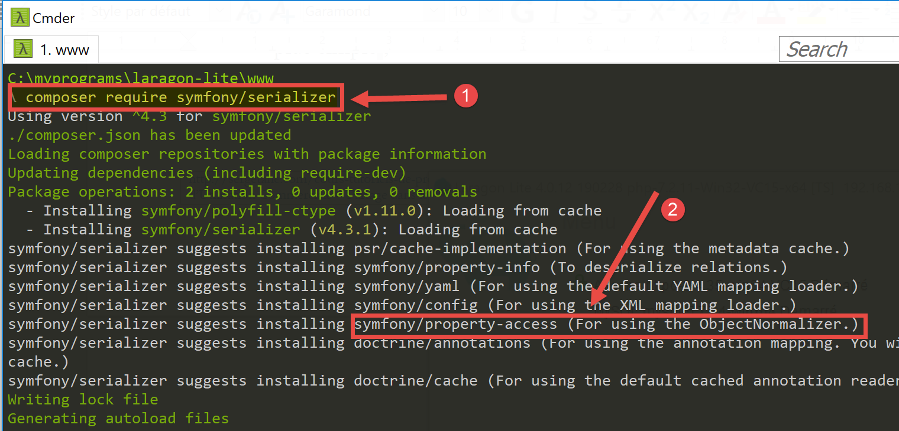
- en [1], el comando de instalación de la biblioteca [symfony/serializer];
- en [2], otra biblioteca necesaria para nuestro proyecto: permite la serialización de objetos;
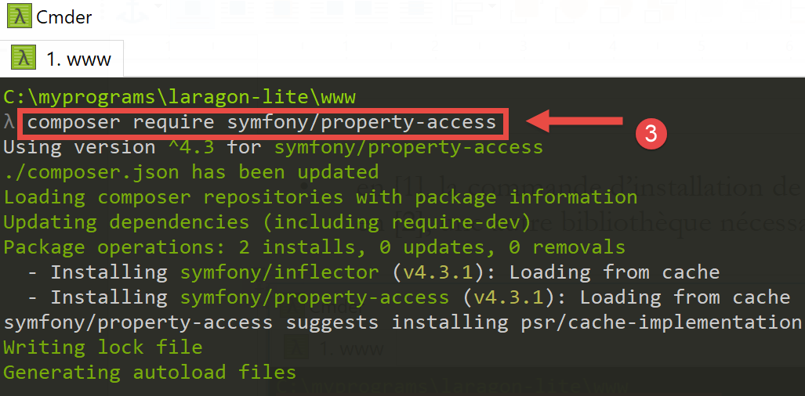
23.6. Las entidades de la aplicación

Las entidades [BaseEntity, Database, ExceptionImpots, TaxAdminData] se han utilizado desde la versión version 08 del servicio web (véase el párrafo del enlace).
La clase [Simulation] servirá para encapsular los elementos de una simulación de cálculo de impuestos:
<?php
namespace Application;
class Simulation extends BaseEntity {
// atributos de una simulación de cálculo de impuestos
protected $marié;
protected $enfants;
protected $salaire;
protected $impôt;
protected $surcôte;
protected $décôte;
protected $réduction;
protected $taux;
// getter
public function getMarié() {
return $this->marié;
}
public function getEnfants() {
return $this->enfants;
}
public function getSalaire() {
return $this->salaire;
}
public function getImpôt() {
return $this->impôt;
}
public function getSurcôte() {
return $this->surcôte;
}
public function getDécôte() {
return $this->décôte;
}
public function getRéduction() {
return $this->réduction;
}
public function getTaux() {
return $this->taux;
}
}
Comentarios
- línea 5: la clase [Simulation] extiende la clase [BaseEntity] y, por lo tanto, hereda los métodos:
- [setFromArrayOfAttributes($arrayOfAttributes)]: que permite inicializar los atributos de la clase;
- [__toString]: que devuelve la cadena jSON del objeto;
- líneas 7-14: los atributos de la simulación;
- líneas 16-47: los getters de la clase;
23.7. Las utilidades de la aplicación

La clase [Logger] permite registrar eventos en un archivo de texto. Esta clase se ha descrito en el apartado enlace.
La clase [SendAdminMail] permite enviar un correo electrónico al administrador de la aplicación. Esta clase se ha descrito en el apartado enlace.
23.8. Las capas [métier] y [dao]


Las clases e interfaces de las capas [métier] y [dao] se encuentran en la carpeta [Model]. Todas ellas se han definido y utilizado en versiones anteriores:
ExceptionImpots | La clase de excepciones lanzadas por la capa [dao]. Definida en el apartado enlace. |
InterfaceServerDao | Interfaz implementada por la capa [dao] del servidor. Definida en el apartado enlace. |
ServerDao | Implementación de la interfaz [InterfaceServerDao]. Implementa la capa [dao] del servidor. Definida en el apartado enlace. |
ServerDaoWithSession | Implementación de la interfaz [InterfaceServerDao]. Implementa la capa [dao] del servidor. Definida en el apartado enlace. |
InterfaceServerMetier | Interfaz implementada por la capa [métier] del servidor. Definida en el apartado enlace. |
ServerMetier | Implementación de la interfaz [InterfaceMetier]. Implementa la capa [metier] del servidor. Definida en el apartado enlace. |
La aplicación que se está desarrollando utiliza muchos elementos ya presentados y utilizados:
- las capas [métier] y [dao];
- las utilidades [Logger] y [SendAdminMail];
- las entidades [ExceptionImpots, TaxAdminData, Database];
Nos centraremos en la capa [web] de la aplicación:

23.9. El controlador principal [main.php]
23.9.1. Introducción

- [1-2]: el controlador principal [main.php] [1] se configura mediante el archivo [config.json] [2];
Recordemos la posición del controlador principal en nuestra arquitectura MVC:

En [1], el controlador principal [main.php] es el primer elemento de la arquitectura MVC en procesar la solicitud del cliente. Desempeña varias funciones:
- en primer lugar, realiza las comprobaciones básicas:
- si su archivo de configuración existe y es válido;
- carga de todas las dependencias del proyecto. Esto equivale a cargar todos los elementos de la arquitectura MVC;
- ¿se ha especificado la acción solicitada? En caso afirmativo, ¿es válida?
- si la acción solicitada es válida, seleccionar [2a] el controlador secundario que la va a procesar y pasarle la información que necesita: la solicitud HTTP, la sesión, la configuración de la aplicación;
- Recuperar la respuesta del controlador secundario. Según el tipo (jSON, XML, HTML) de la aplicación solicitada por el cliente, seleccionar [3a] la respuesta (JsonResponse, XmlResponse, HtmlResponse) encargada de enviar la respuesta al cliente y pasarle toda la información que necesita (la solicitud HTTP, la sesión, la configuración de la aplicación, la respuesta del controlador secundario);
- una vez enviada esta respuesta [3c], proceder a la liberación de los recursos que se hayan podido movilizar para el procesamiento de la solicitud;
23.9.2. [main.php] - 1
El código del controlador principal [main.php] es el siguiente:
<?php
// Cumplimiento estricto de los tipos declarados de los parámetros de las funciones
declare (strict_types=1);
// espacio de nombres
namespace Application;
// dependencias de Symfony
use Symfony\Component\HttpFoundation\Request;
use Symfony\Component\HttpFoundation\Response;
use Symfony\Component\HttpFoundation\Session\Session;
// gestión de errores mediante PHP
//ini_set("display_errors", "0");
error_reporting(E_ALL && !E_WARNING && !E_NOTICE);
// se recupera la configuración
$configFilename = "config.json";
$fileContents = \file_get_contents($configFilename);
$erreur = FALSE;
// ¿error?
if (!$fileContents) {
// se anota el error
$état = 131;
$erreur = TRUE;
$message = "Le fichier de configuration [$configFilename] n'existe pas";
}
if (!$erreur) {
// se recupera el código JSON del archivo de configuración en una tabla asociativa
$config = \json_decode($fileContents, true);
// ¿error?
if (!$config) {
// se registra el error
$erreur = TRUE;
$état = 132;
$message = "Le fichier de configuration [$configFilename] n'a pu être exploité correctement";
}
}
// ¿error?
if ($erreur) {
// preparación de la respuesta JSON del servidor
// no se puede utilizar el archivo de configuración
// dependencias de Symfony
require_once "C:/myprograms/laragon-lite/www/vendor/autoload.php";
// preparación de la respuesta
$response = new Response();
$response->headers->set("content-type", "application/json");
$response->setCharset("utf-8");
// código de estado
$response->setStatusCode(Response::HTTP_INTERNAL_SERVER_ERROR);
// contenido
$response->setContent(json_encode(["action" => "", "état" => $état, "réponse" => $message], JSON_UNESCAPED_UNICODE));
// envío
$response->send();
// fin
exit;
}
…
Comentarios
- líneas 10-12: el controlador principal utiliza los siguientes objetos de Symfony:
- [Request]: la solicitud HTTP que se está procesando;
- [Session]: la sesión de la aplicación web;
- [Response]: la respuesta HTTP al cliente;
- línea 15: durante todo el desarrollo mantendremos esta línea como comentario: los errores PHP se integran entonces en el flujo de texto enviado al cliente. Si este cliente es un navegador, esto permite ver los errores encontrados por el servidor. Es una ayuda para la depuración;
- línea 16: se notifican todos los errores (E_ALL) excepto las advertencias (! E_WARNING) y la información no crítica (! E_NOTICE). Por ejemplo, si no se puede abrir un archivo, PHP emite un error de tipo [E_NOTICE]. Si la línea 15 permite la visualización de errores, el error de apertura del archivo aparece en el navegador del cliente. Esto está bien si se ha olvidado de comprobar el resultado de la apertura del archivo, pero no tanto si tenía previsto realizar la comprobación: una línea de [notice] contamina entonces la respuesta del servidor al cliente. En la fase de desarrollo, la línea 16 también debería estar comentada: no quiere perderse ningún error;
- línea 19: se lee el archivo de configuración;
- líneas 22-27: si esta lectura ha fallado, se anota el error (línea 25), se pone la aplicación en el estado [131] y se prepara un mensaje de error;
- línea 30: se decodifica la cadena jSON del archivo de configuración;
- líneas 32-37: si la decodificación falla, se registra el error (línea 34), se pone la aplicación en el estado [132] y se prepara un mensaje de error;
- líneas 40-57: en caso de error al leer el archivo de configuración, no se puede continuar. Se prepara entonces una respuesta jSON para el cliente:
- línea 44: dado que no se ha leído el archivo de configuración, hay que importar manualmente el archivo [autoload] necesario para [Symfony];
- líneas 46-47: se prepara una respuesta jSON;
- línea 50: el código HTTP de la respuesta será 500 INTERNAL_SERVER_ERROR;
- línea 52: se establece el contenido jSON de la respuesta. Todas las respuestas generadas por la aplicación web analizada tendrán tres claves:
- [action]: la acción solicitada por el cliente;
- [état]: el estado de la aplicación tras la ejecución de esta acción;
- [réponse]: la respuesta del servidor web;
- línea 54: se envía la respuesta jSON al cliente;
23.9.3. Pruebas [Postman] - 1
Vamos a comprobar el comportamiento del servidor cuando el archivo de configuración no existe o es incorrecto:
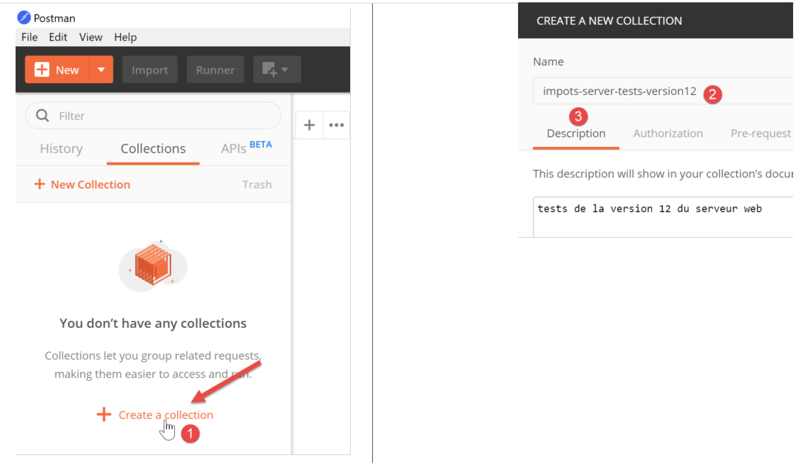
Vamos a agrupar en colecciones las diferentes solicitudes que nuestro cliente [Postman] enviará al servidor de impuestos.
- En [1], cree una nueva colección;
- en [2], asígnele un nombre;
- en [3], la descripción es opcional;

- en las colecciones [4], ahora aparece una colección llamada [impots-server-tests-version12] [5];
- en [6], se puede añadir una nueva consulta a la colección;

- en [7], se le da un nombre a la consulta;
- en [8], la descripción es opcional;

- en [9-11], la consulta añadida a la colección;
- en [12], selección del tipo de solicitud, en este caso una solicitud [GET]. En [19], los diferentes tipos de solicitud disponibles;
- en [13], aquí se introduce el URL del servidor;
- en [14], se introducen aquí los parámetros añadidos al URL y que, por lo tanto, serán parámetros del GET. La ventaja de ponerlos aquí en lugar de directamente en el URL es que serán codificados por el [Postman]. Si los introduce usted mismo en el URL, será usted quien deba codificarlos en URL;
- en [15], [Authorization] sirve para definir el usuario que va a conectarse. No tendremos que utilizar esta posibilidad;
- en [16], los encabezados HTTP que acompañarán a la solicitud. Se incluyen automáticamente varios encabezados en la solicitud. Aquí puede añadir otros nuevos;
- en [17], [Body] designa los parámetros de una operación [POST]. Tendremos que utilizar este option;
Vamos a realizar la siguiente prueba:
- en [main.php], se indica que el archivo de configuración es [config2.json], que no existe:

- la línea 16 del código debe descomentarse;
- línea 18: el error en el nombre del archivo de configuración;
Entremos en [Postman] [13, 20], el URL del servidor web de cálculo de impuestos y ejecutémoslo [21]:

La respuesta devuelta por el servidor (por supuesto, Laragon debe estar activo) es la siguiente:

- en [22], el servidor ha devuelto un código HTTP [500 Internal Server Error];
- en [23], [Body] designa el cuerpo de la respuesta, es decir, el documento enviado por el servidor tras los encabezados HTTP [28];
- en [26], se ve que [Postman] ha recibido una respuesta jSON;
- en [27], la respuesta jSON con formato;
- en [28], la respuesta jSON sin formato;
- en [29], se utiliza el modo [Preview] cuando la respuesta es HTML. El modo [Preview] muestra entonces la página recibida;
- en [30], la respuesta jSON del servidor. Es precisamente la que esperábamos;
En [25], los encabezados HTTP enviados en la respuesta del servidor son los siguientes:
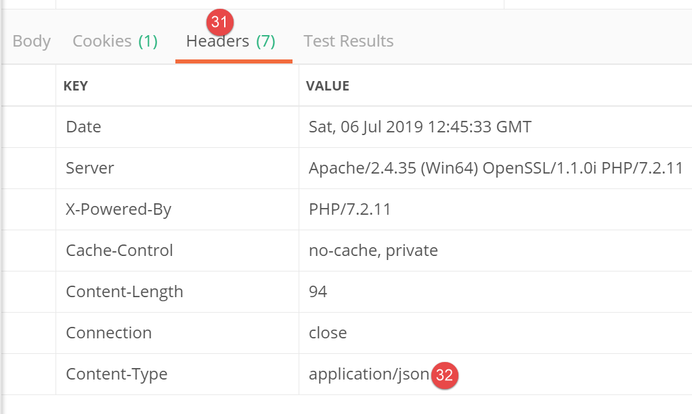
- en [32], el tipo jSON de la respuesta;
Esta primera prueba nos ha permitido comprobar que:
- se puede enviar cualquier tipo de solicitud al servidor probado;
- se pueden establecer los parámetros de GET o de POST;
- se dispone de la respuesta completa: los encabezados HTTP y el documento que sigue a dichos encabezados [Body];
Ahora, hagamos una segunda prueba:
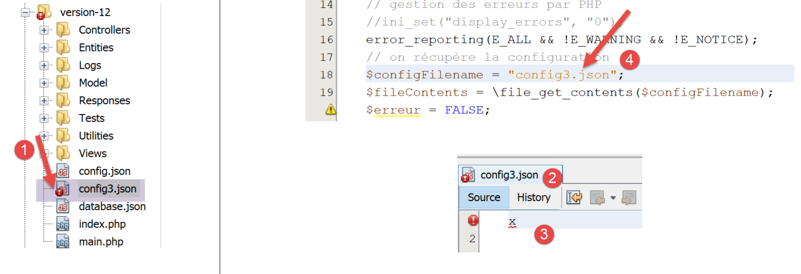
- en [1-3], el archivo [config3.json] es un archivo jSON sintácticamente incorrecto;
- en [4], [main.php] está configurado para utilizar [config3.json];
Añadimos una nueva consulta en [Postman]:

- En [1-3], hacemos clic con el botón derecho en [2] y seleccionamos option [duplicate] para duplicar la consulta [2];
- en [4], la nueva consulta tiene un nombre predefinido que cambiamos a [5];

- en [6], la consulta renombrada;
- en [9-10], se envía la misma consulta GET que anteriormente;

- en [11], la respuesta jSON del servidor;
Aquí hemos mostrado cómo se iban a probar las diferentes acciones del servicio web de cálculo de impuestos.
23.9.4. [main.php] – 2
Retomamos el estudio del código del controlador principal [main.php]:
<?php
// Cumplimiento estricto de los tipos declarados de los parámetros de las funciones
declare (strict_types=1);
// espacio de nombres
namespace Application;
// dependencias de Symfony
use Symfony\Component\HttpFoundation\Request;
use Symfony\Component\HttpFoundation\Response;
use Symfony\Component\HttpFoundation\Session\Session;
// gestión de errores mediante PHP
//ini_set("display_errors", "0");
error_reporting(E_ALL && !E_WARNING && !E_NOTICE);
// se recupera la configuración
$configFilename = "config.json";
…
// se incluyen las dependencias necesarias para el script
$rootDirectory = $config["rootDirectory"];
foreach ($config["relativeDependencies"] as $dependency) {
require_once "$rootDirectory$dependency";
}
// dependencias absolutas (bibliotecas de terceros)
foreach ($config["absoluteDependencies"] as $dependency) {
require_once "$dependency";
}
// creación del archivo de registros
try {
$logger = new Logger($config['logsFilename']);
} catch (ExceptionImpots $ex) {
// no se ha podido crear el archivo de registros - error interno del servidor error
$état = 133;
(new JsonResponse())->send(
NULL, NULL, $config,
Response::HTTP_INTERNAL_SERVER_ERROR,
["action" => "non déterminée", "état" => $état, "réponse" => "Le fichier de logs [{$config['logsFilename']}] n'a pu être créé"],
[]);
// finalizado
exit;
}
Comentarios
- línea 18: tenemos un archivo de configuración [config.json] que ya existe y es sintácticamente correcto. Además, habría que comprobar que las claves esperadas en este archivo estén realmente presentes. Consideraremos que esto forma parte del trabajo normal de depuración del desarrollador. Podríamos haber aplicado este mismo razonamiento a los dos errores anteriores;
- líneas 20-28: se incluyen todas las dependencias necesarias para el proyecto web. Ya nos hemos encontrado con este código varias veces;
- líneas 31-43: se intenta crear el objeto [Logger], que nos permitirá registrar eventos en el archivo [$config['logsFilename']]. Esta creación puede fallar;
- líneas 33-43: gestión del error de creación del objeto [Logger];
- línea 35: se establece un número de estado;
- líneas 36-40: se envía una respuesta jSON;
- línea 42: se detiene el script;
Todas las respuestas enviadas al cliente implementan la siguiente interfaz [InterfaceResponse]:

El código de la interfaz [InterfaceResponse] es el siguiente:
<?php
namespace Application;
// dependencias de Symfony
use Symfony\Component\HttpFoundation\Request;
use Symfony\Component\HttpFoundation\Session\Session;
interface InterfaceResponse {
// Solicitud $request: solicitud en proceso
// Sesión $session: la sesión de la aplicación web
// array $config: la configuración de la aplicación
// int statusCode: el código de estado de la respuesta
// array $content: la respuesta del servidor
// array $headers: los encabezados HTTP que se deben añadir a la respuesta
// Logger $logger: el registrador para escribir registros
public function send(
Request $request = NULL,
Session $session = NULL,
array $config,
int $statusCode,
array $content,
array $headers,
Logger $logger = NULL): void;
}
- líneas 19-27: la interfaz [InterfaceResponse] tiene un único método, [send], para enviar la respuesta al cliente;
- líneas 11-17: significado de los diferentes parámetros del método [send];
- líneas 23-25: los parámetros [$statusCode, $content, $headers] se encuentran en el resultado estándar de los controladores secundarios de la aplicación. Sin embargo, la respuesta puede necesitar otra información. Por ello, se le proporcionan los tres primeros parámetros (líneas 20-22), que le dan acceso a toda la información relativa a la solicitud, la sesión y la configuración;
- línea 26: la respuesta necesita el [Logger], ya que va a registrar la respuesta enviada al cliente;
La clase [JsonResponse] implementa la interfaz [InterfaceResponse] de la siguiente manera:
<?php
namespace Application;
// dependencias de Symfony
use Symfony\Component\Serializer\Encoder\JsonEncode;
use Symfony\Component\Serializer\Encoder\JsonEncoder;
use Symfony\Component\Serializer\Normalizer\ObjectNormalizer;
use Symfony\Component\Serializer\Serializer;
use \Symfony\Component\HttpFoundation\Request;
use \Symfony\Component\HttpFoundation\Session\Session;
class JsonResponse extends ParentResponse implements InterfaceResponse {
// Solicitud $request: solicitud en proceso
// Sesión $session: la sesión de la aplicación web
// array $config: la configuración de la aplicación
// int statusCode: el código HTTP del estado de la respuesta
// array $content: la respuesta del servidor
// array $headers: los encabezados HTTP que se deben añadir a la respuesta
// Logger $logger: el registrador para escribir registros
public function send(
Request $request = NULL,
Session $session = NULL,
array $config,
int $statusCode,
array $content,
array $headers,
Logger $logger = NULL): void {
// preparación del serializador de Symfony
$serializer = new Serializer(
[
// necesario para la serialización de objetos
new ObjectNormalizer()],
// codificador jSON
// para las opciones, insertar OU entre las diferentes opciones
[new JsonEncoder(new JsonEncode([JsonEncode::OPTIONS => JSON_UNESCAPED_UNICODE]))]
);
// serialización jSON
$json = $serializer->serialize($content, 'json');
// encabezados
$headers = array_merge($headers, ["content-type" => "application/json"]);
// envío de respuesta
parent::sendResponse($statusCode, $json, $headers);
// registro
if ($logger !== NULL) {
$logger->write("réponse=$json\n");
}
}
}
Comentarios
- línea 13: la clase implementa la interfaz [InterfaceResponse];
- línea 13: la clase extiende la clase [ParentResponse]. Todos los tipos de [Response] extienden esta clase. Es esta clase padre la que envía la respuesta al cliente (línea 46). Como este código era común a todos los tipos de [Response], se factorizó en una clase padre;
- líneas 33-40: instanciación del serializador [Symfony] que traducirá la respuesta del servidor [$content] a una cadena jSON (línea 42);
- líneas 34-36: el primer parámetro del constructor de [Serializer] es una matriz. En él se coloca una instancia de la clase [ObjectNormalizer] necesaria para la serialización de objetos. Este caso se da en esta aplicación con una lista de simulaciones en la que cada simulación es una instancia de la clase [Simulation];
- línea 39: el segundo parámetro del constructor de [Serializer] es también una matriz: en ella se colocan todos los codificadores utilizados en una serialización (XML, jSON, CSV…);
- línea 39: aquí solo habrá un codificador, de tipo [JsonEncoder]. El constructor sin parámetros podría haber sido suficiente. Aquí, hemos pasado un parámetro [JsonEncode] al constructor, únicamente para pasar opciones de codificación jSON;
- línea 39: el parámetro del constructor [JsonEncode] es una matriz de opciones. Aquí se utiliza option [JSON_UNESCAPED_UNICODE] para solicitar que los caracteres UTF-8 de la cadena jSON se representen de forma nativa y no se «escapen»;
- línea 42: el cuerpo de la respuesta HTTP se serializa en jSON gracias al serializador anterior;
- línea 44: se añade el encabezado HTTP que indica al cliente que se le va a enviar jSON;
- línea 46: se solicita a la clase padre que envíe la respuesta al cliente;
- líneas 48-50: se registra la respuesta jSON;
El código de la clase padre [ParentResponse] es el siguiente:
<?php
namespace Application;
// dependencias de Symfony
use Symfony\Component\HttpFoundation\Response;
class ParentResponse {
// int $statusCode: el código HTTP del estado de la respuesta
// string $content: el cuerpo de la respuesta que se va a enviar
// según el caso, es una cadena jSON, XML, HTML
// array $headers: los encabezados HTTP que se deben añadir a la respuesta
public function sendResponse(
int $statusCode,
string $content,
array $headers): void {
// preparación de la respuesta de texto del servidor
$response = new Response();
$response->setCharset("utf-8");
// código de estado
$response->setStatusCode($statusCode);
// encabezados
foreach ($headers as $text => $value) {
$response->headers->set($text, $value);
}
//: se envía la respuesta
$response->setContent($content);
$response->send();
}
}
Comentarios
- líneas 10-13: significado de los tres parámetros del método [send];
- línea 17: cabe señalar que el cuerpo de la respuesta es de tipo [string] y, por lo tanto, está listo para ser enviado (línea 30);
- línea 22: la respuesta tendrá caracteres UTF-8;
- línea 24: código de estado HTTP de la respuesta;
- líneas 26-28: se añaden los encabezados HTTP proporcionados por el código de llamada;
- líneas 30-31: envío de la respuesta al cliente;
Hemos detallado todo el ciclo de una respuesta jSON. No volveremos sobre ello más adelante. Basta con recordar la firma de la interfaz [InterfaceResponse]:
interface InterfaceResponse {
// Solicitud $request: solicitud en proceso
// Sesión $session: la sesión de la aplicación web
// array $config: la configuración de la aplicación
// int statusCode: el código de estado de la respuesta
// array $content: la respuesta del servidor
// array $headers: los encabezados HTTP que se deben añadir a la respuesta
// Logger $logger: el registrador para escribir registros
public function send(
Request $request = NULL,
Session $session = NULL,
array $config,
int $statusCode,
array $content,
array $headers,
Logger $logger = NULL): void;
}
El controlador principal [main.php] deberá respetar esta firma cada vez que solicite el envío de la respuesta al cliente.
23.9.5. Pruebas [Postman] – 2
Modificamos el archivo [config.json] de la siguiente manera:

- En [1], indicamos que el archivo de registros es [Logs], que es una carpeta [2]. Por lo tanto, la creación del archivo [Logs] debería fallar;
Creamos una nueva solicitud [Postman] [3], denominada [erreur-133]:
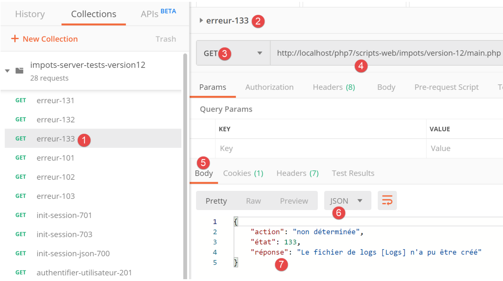
- [2-4]: definimos la misma consulta que en las dos pruebas anteriores;
- [5-7]: obtenemos correctamente la respuesta esperada jSON;
23.9.6. [main.php] – 3
Continuemos con el análisis del controlador principal [main.php]:
<?php
// Cumplimiento estricto de los tipos declarados de los parámetros de las funciones
declare (strict_types=1);
// espacio de nombres
namespace Application;
// dependencias de Symfony
use Symfony\Component\HttpFoundation\Request;
use Symfony\Component\HttpFoundation\Response;
use Symfony\Component\HttpFoundation\Session\Session;
// gestión de errores mediante PHP
…
// creación del archivo de registros
…
// primer registro
$logger->write("\n---nouvelle requête\n");
// solicitud actual
$request = Request::createFromGlobals();
// sesión
$session = new Session();
$session->start();
// lista de errores
$erreurs = [];
$erreur = FALSE;
// se gestiona la acción solicitada
if (!$request->query->has("action")) {
$erreurs[] = "paramètre [action] manquant";
$erreur = TRUE;
$état = 101;
$action = "";
} else {
// se almacena la acción
$action = strtolower($request->query->get("action"));
}
// se registra la acción
$logger->write("action [$action] demandée\n");
// ¿Existe la acción?
if (!$erreur && !array_key_exists($action, $config["actions"])) {
$erreurs[] = "action [$action] invalide";
$erreur = TRUE;
$état = 102;
}
// se debe conocer el tipo de sesión antes de realizar ciertas acciones
if (!$erreur && !$session->has("type") && $action !== "init-session") {
$erreurs[] = "pas de session en cours. Commencer par action [init-session]";
$erreur = TRUE;
$état = 103;
}
// para algunas acciones hay que estar autenticado
if (!$erreur && !$session->has("user") && $action !== "authentifier-utilisateur" && $action !== "init-session") {
$erreurs[] = "action demandée par utilisateur non authentifié";
$erreur = TRUE;
$état = 104;
}
// ¿Errores?
if ($erreurs) {
// Se prepara la respuesta sin enviarla
$statusCode = Response::HTTP_BAD_REQUEST;
$content = ["réponse" => $erreurs];
$headers = [];
} else {
// ---------------------------
// se ejecuta la acción mediante su controlador
$controller = __NAMESPACE__ . $config["actions"][$action];
$logger->write("contrôleur : $controller\n");
list($statusCode, $état, $content, $headers) = (new $controller())->execute($config, $request, $session);
}
// --------------------- se envía la respuesta
// caso de error fatal HTTP_INTERNAL_SERVER_ERROR
// se envía un correo electrónico al administrador si es posible
if ($statusCode === Response::HTTP_INTERNAL_SERVER_ERROR && $config['adminMail'] != NULL) {
$infosMail = $config['adminMail'];
$infosMail['message'] = json_encode($content, JSON_UNESCAPED_UNICODE);
$sendAdminMail = new SendAdminMail($infosMail, $logger);
$sendAdminMail->send();
}
// la respuesta depende del tipo de sesión
if ($session->has("type")) {
// el tipo de sesión se encuentra en la sesión
$type = $session->get("type");
} else {
// si no hay tipo en la sesión, entonces por defecto será una respuesta en jSON
$type = "json";
}
// se añaden las claves [action, état] a la respuesta del controlador
$content = ["action" => $action, "état" => $état] + $content;
// se instancia el objeto [Response] encargado de enviar la respuesta al cliente
$response = __NAMESPACE__ . $config["types"][$type]["response"];
(new $response())->send($request, $session, $config, $statusCode, $content, $headers, $logger);
// se ha enviado la respuesta; se liberan los recursos
$logger->close();
exit;
Comentarios
- una vez realizadas las primeras comprobaciones y sabiendo que puede trabajar, el controlador principal se centra en la acción que se le ha solicitado: esta debe cumplir ciertas condiciones;
- línea 21: registramos que tenemos una nueva solicitud. No podíamos hacerlo antes porque no estábamos seguros de tener un archivo de registros válido;
- línea 23: encapsulamos toda la información de la solicitud del cliente en el objeto Symfony [Request];
- línea 26: iniciamos una nueva sesión o recuperamos la sesión existente si existe;
- línea 27: se activa la sesión;
- línea 29: una matriz de mensajes de error;
- línea 30: un valor booleano que, a lo largo de las pruebas, nos indica si se ha producido un error o no;
- línea 32: el parámetro [action] debe formar parte del URL en la forma [main.php?action=uneAction]. El parámetro [action] forma parte entonces de los parámetros [$request→query];
- líneas 33-36: caso de ausencia del parámetro [action] en el URL. Se anota el error y se le asigna un estado [101];
- línea 39: si el parámetro [action] está presente en el URL, se almacena;
- línea 42: se registra el tipo de acción;
- líneas 45-49: si el parámetro [action] está presente, debe ser válido. Todas las acciones autorizadas se definen en la tabla asociativa [$config["actions"]];
- líneas 46-48: si la acción no es válida, se registra el error y se le asigna el estado [102];
- líneas 52-56: se trata de una acción válida. Aún debe cumplir otras condiciones. La aplicación web proporciona tres tipos de respuesta (jSON, XML, HTML). Este tipo viene determinado por la acción [init-session]. Esta acción coloca el tipo de sesión en la clave [type];
- línea 52: fuera de la acción [init-session], cualquier otra acción debe realizarse con una clave [type] en la sesión;
- líneas 53-55: si no es así, se registra el error y se le asigna el estado [103];
- líneas 58-63: salvo las acciones [init-session] y [authentifier-utilisateur], todas las demás acciones deben realizarse tras la autenticación. Esta se realiza mediante la acción [authentifier-utilisateur], que, si la autenticación se realiza correctamente, introduce una clave [user] en la sesión;
- línea 59: si la acción no es ni [init-session] ni [authentifier-utilisateur] y la clave [user] no está en la sesión, se produce un error;
- líneas 60-62: se registra el error y se le asigna el estado [104];
- líneas 66-71: se comprueba si la tabla [$erreurs] no está vacía. Si es así, significa que la acción solicitada o su contexto de ejecución son erróneos;
- líneas 68-70: se prepara la respuesta que se enviará al cliente, pero aún no se envía;
- línea 68: código de estado HTTP;
- línea 69: cuerpo de la respuesta;
- línea 70: encabezados que se deben añadir a la respuesta, aquí no hay ninguno;
- línea 73: tenemos una acción válida. Vamos a pedirle a su controlador (secundario) que la procese;
- línea 74: se construye el nombre de la clase del controlador que se va a ejecutar. [__NAMESPACE__] es el espacio de nombres en el que nos encontramos, aquí [Application] (línea 7);
- los nombres de las clases del controlador secundario se encuentran en el archivo [config.json]:
"actions":
{
"init-session": "\\InitSessionController",
"authentifier-utilisateur": "\\AuthentifierUtilisateurController",
"calculer-impot": "\\CalculerImpotController",
"lister-simulations": "\\ListerSimulationsController",
"supprimer-simulation": "\\SupprimerSimulationController",
"fin-session": "\\FinSessionController",
"afficher-calcul-impot": "\\AfficherCalculImpotController"
},
A cada acción le corresponde un controlador secundario. Si la acción es [authentifier-utilisateur], la variable [$controller] de la línea 74 tendrá, por tanto, el valor [Application/AuthentifierUtilisateurController];
- línea 75: se registra el nombre del controlador secundario, para su verificación durante el desarrollo;
- línea 76: se ejecuta el controlador secundario. Volveremos sobre los controladores secundarios más adelante;
- línea 76: todos los controladores secundarios devuelven el mismo tipo de resultado, que es una matriz:
- el primer elemento de la matriz [$statusCode] es el código de estado HTTP de la respuesta que se va a enviar;
- el segundo elemento [$état] es el estado de la aplicación tras la ejecución del controlador;
- el tercer elemento [$content] es una tabla asociativa con la clave única [réponse], que es el cuerpo de la respuesta que se debe enviar al cliente;
- el cuarto elemento [$headers] es una matriz de encabezados HTTP que se deben añadir a la respuesta enviada al cliente;
- línea 79: llegamos aquí:
- o bien porque se ha producido un error (líneas 68-70);
- o bien tras la ejecución de un controlador (líneas 72-76);
- en ambos casos, se conocen los elementos [$statusCode, $état, $content, $headers] necesarios para elaborar la respuesta al cliente;
- líneas 82-87: tratan el caso particular del código de estado [500 Internal Server Error]. Si un controlador ha establecido este código de estado, significa que la aplicación no puede funcionar. Este es, por ejemplo, el caso del cálculo del impuesto si el SGBD utilizado no se ha iniciado o ya no responde. En ese caso, se envía un correo electrónico al administrador de la aplicación para avisarle. No comentaremos este código en particular. El uso de la clase [SendAdminMail] ya se ha presentado (párrafo enlace);
- líneas 89-95: se determina el tipo [jSON, XML, HTML] de la aplicación web. Si la acción [init-session] se ha ejecutado correctamente, este tipo se encuentra en la sesión asociada a la clave [type] (línea 91). Si no es así, se establece arbitrariamente un tipo para la respuesta, el tipo jSON (línea 94);
- línea 97: [$content] es una matriz con una única clave [réponse] y un único valor, el cuerpo de la respuesta que se enviará al cliente. Se le añaden las claves [action] y [état]. La clave [action] permitirá realizar un mejor seguimiento de los registros del archivo [logs.txt]. La clave [état] tendrá dos funciones:
- permitirá a clients, jSON y XML conocer el estado en el que la acción ejecutada ha dejado la aplicación web;
- en el caso de una respuesta HTML, permitirá elegir la vista HTML que debe enviarse al navegador del cliente;
- línea 99: se elige el tipo de clase [Response] que se va a ejecutar para enviar la respuesta al cliente;
Ya hemos presentado la clase [JsonResponse] en el apartado «Enlace». Implementa la interfaz [InterfaceResponse] y extiende la clase [ParentResponse]. Lo mismo ocurre con las otras dos clases [XmlResponse] y [HtmlResponse].
Las respuestas se recogen en la carpeta [Responses]:

Todas estas clases implementan la interfaz [InterfaceResponse], que también se presenta en el apartado enlace:
<?php
namespace Application;
// dependencias de Symfony
use Symfony\Component\HttpFoundation\Request;
use Symfony\Component\HttpFoundation\Session\Session;
interface InterfaceResponse {
// Solicitud $request: solicitud en proceso
// Sesión $session: la sesión de la aplicación web
// array $config: la configuración de la aplicación
// int statusCode: el código de estado de la respuesta
// array $content: la respuesta del servidor
// array $headers: los encabezados HTTP que se deben añadir a la respuesta
// Logger $logger: el registrador para escribir registros
public function send(
Request $request = NULL,
Session $session = NULL,
array $config,
int $statusCode,
array $content,
array $headers,
Logger $logger = NULL): void;
}
Esta interfaz tiene un único método, [send], encargado de enviar la respuesta al cliente. Este método tiene los 7 parámetros descritos en las líneas 11-17. Todas las clases e interfaces de la carpeta [Responses] se encuentran en el espacio de nombres [Application] (línea 3).
Volvamos al código de [main.php]:
…
//: se añaden las claves [action, état] a la respuesta del controlador
$content = ["action" => $action, "état" => $état] + $content;
// se instancia el objeto [Response] encargado de enviar la respuesta al cliente
$response = __NAMESPACE__ . $config["types"][$type];
(new $response())->send($request, $session, $config, $statusCode, $content, $headers, $logger);
// se ha enviado la respuesta; se liberan los recursos
$logger->close();
exit;
- línea 5: se instancia la clase [Response] adecuada al tipo de aplicación. Estas clases se definen en el archivo [config.json] de la siguiente manera:
"types": {
"json": "\\JsonResponse",
"html": "\\HtmlResponse",
"xml": "\\XmlResponse"
},
- línea 5: el nombre de la clase va precedido de su espacio de nombres;
- línea 6: se instancia la clase [Response] y se invoca su método [send] con los 7 parámetros que espera. Estos parámetros son los de la interfaz [InterfaceResponse] que implementan todas las clases de respuesta. Esto envía la respuesta al cliente;
- línea 9: se cierra el archivo de registros;
- línea 10: el controlador principal ha terminado su trabajo;
23.9.7. Pruebas [Postman] – 3
Vamos a probar varios casos de error del parámetro [action] de URL.

- en [1]:
- [erreur-101]: caso del parámetro [action] que falta en el URL;
- [erreur-102]: caso del parámetro [action] presente en el URL pero no reconocido;
- [erreur-103]: caso del parámetro [action] presente en el URL, reconocido pero sin que se haya definido el tipo de respuesta esperada [json, xml, html];
Se ejecuta cada consulta. Presentamos directamente los resultados obtenidos:
Arriba:
- en [2-4], una consulta sin el parámetro [action] en URL [4];
- en [5-7], el resultado jSON;

Arriba:
- en [5-9], una solicitud con un parámetro [action] no válido;
- en [10-13], la respuesta jSON;
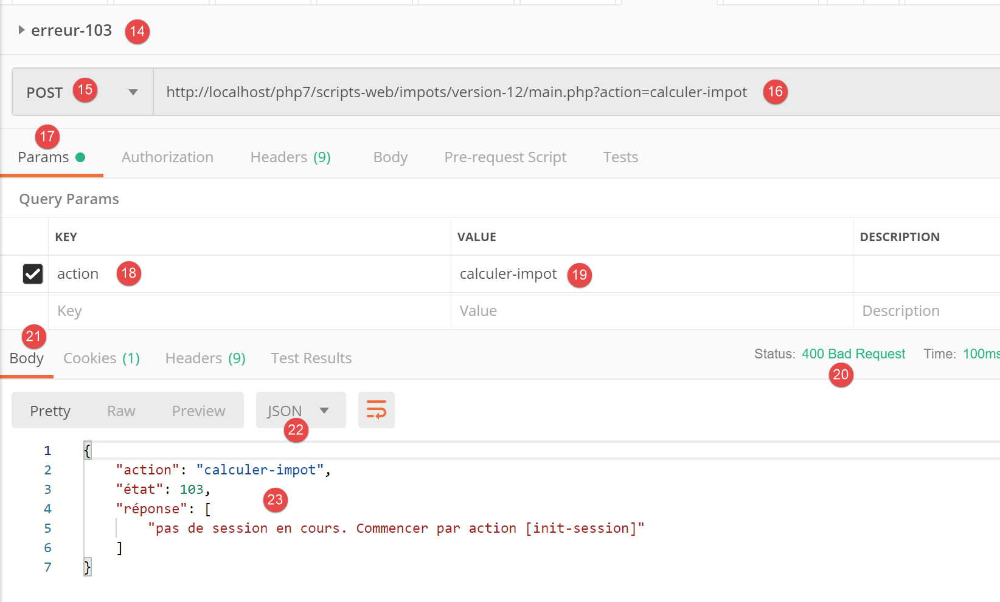
Arriba:
- en [14-19], una acción reconocida pero el tipo (json, xml, html) aún no se ha especificado;
- en [20-23], la respuesta jSON del servidor;
23.10. Los controladores secundarios
Cada acción es ejecutada por uno de los controladores de la carpeta [Controllers]:


En la arquitectura general de la aplicación anterior, los controladores secundarios son de tipo [2a].
Cada controlador implementa la siguiente interfaz [InterfaceController]:
<?php
namespace Application;
// dependencias de Symfony
use Symfony\Component\HttpFoundation\Request;
use Symfony\Component\HttpFoundation\Session\Session;
interface InterfaceController {
// $config es la configuración de la aplicación
// procesamiento de una solicitud Request
// utiliza la sesión Session y puede modificarla
// $infos son datos adicionales específicos de cada controlador
// devuelve una matriz [$statusCode, $état, $content, $headers]
public function execute(
array $config,
Request $request,
Session $session,
array $infos=NULL): array;
}
Comentarios
- Todos los controladores secundarios se ejecutan mediante el método [execute] de la línea 17. A este método se le pasa la información conocida del controlador principal:
- línea 18: [array $config], que encapsula la configuración de la aplicación;
- línea 19: [Request $request], que es la solicitud HTTP que se está procesando;
- línea 20: [Session $session], que es la sesión actual de la aplicación web;
- línea 21: [array $infos=NULL], que es una matriz adicional de información para el controlador en caso de que los tres primeros parámetros del método no fueran suficientes. En esta aplicación, este parámetro nunca se ha utilizado. Se incluye por precaución;
- línea 21: el método [execute] devuelve la matriz [$statusCode, $état, $content, $headers]
- [int $statusCode]: el código de estado de la respuesta HTTP;
- [int $état]: el estado en el que se encuentra la aplicación al final de la ejecución;
- [array $content]: una tabla asociativa [réponse=>résultat] donde [résultat] es de cualquier tipo: es el resultado generado por el controlador y que se enviará al cliente, una vez que dicho resultado se haya serializado en forma de cadena de caracteres;
- [array $headers]: la lista de encabezados HTTP que se incorporarán a la respuesta HTTP del servidor;
Cada controlador secundario es invocado por el siguiente código del controlador principal:
// se ejecuta la acción mediante su controlador
$controller = __NAMESPACE__ . $config["actions"][$action];
list($statusCode, $état, $content, $headers) = (new $controller())->execute($config, $request, $session);
En la línea 3, se observa que el cuarto parámetro [array $infos=NULL] del método [execute] no se utiliza.
23.11. Las acciones
A continuación, repasamos las diferentes acciones posibles del servicio web:
Acción | Función | Contexto de ejecución |
init-session | Sirve para establecer el tipo (json, xml, html) de las respuestas deseadas | Solicitud GET main.php?action=init-session&type=x puede emitirse en cualquier momento |
autenticar-usuario | Autoriza o no a un usuario a iniciar sesión | Solicitud POST main.php?action=authentifier-utilisateur La solicitud debe tener dos parámetros enviados [user, password] Solo se puede enviar si se conoce el tipo de sesión (json, xml, html) |
calcular-impuesto | Realiza una simulación del cálculo de impuestos | Consulta POST main.php?action=calculer-impot La consulta debe tener tres parámetros enviados [marié, enfants, salaire] Solo se puede emitir si se conoce el tipo de sesión (json, xml, html) y el usuario está autenticado |
listar-simulaciones | Solicita ver la lista de simulaciones realizadas desde el inicio de la sesión | Consulta GET main.php?action=lister-simulations La solicitud no admite ningún otro parámetro Solo se puede emitir si se conoce el tipo de sesión (json, xml, html) y el usuario está autenticado |
eliminar-simulación | Elimina una simulación de la lista de simulaciones | Consulta GET main.php?action=lister-simulations&número=x La solicitud no admite ningún otro parámetro Solo se puede emitir si se conoce el tipo de sesión (json, xml, html) y el usuario está autenticado |
fin-session | Finaliza la sesión de simulaciones. | Técnicamente, se elimina la sesión web anterior y se crea una nueva Solo se puede emitir si se conoce el tipo de sesión (json, xml, html) y el usuario está autenticado |
Todos los controladores secundarios proceden de la misma manera:
- comprueban sus parámetros. Estos se encuentran en el objeto [Request→query] para los parámetros presentes en el URL y en el objeto [Request→request] para los que se envían (solicitud POST);
- un controlador se asemeja a una función o método que comprueba la validez de sus parámetros. Sin embargo, en el caso del controlador es un poco más complicado:
- los parámetros esperados pueden estar ausentes;
- todos los parámetros esperados son cadenas de caracteres, mientras que una función puede establecer el tipo de sus parámetros. Si el parámetro esperado es un número, hay que verificar que la cadena del parámetro sea efectivamente la de un número;
- una vez verificado que los parámetros esperados están presentes y son sintácticamente correctos, hay que comprobar que sean válidos en el contexto de ejecución actual. Este contexto está presente en la sesión. El ejemplo de la autenticación es un ejemplo de contexto de ejecución. Algunas acciones solo deben procesarse una vez que el cliente se ha autenticado. Por lo general, una clave en la sesión indica si esta autenticación se ha producido o no;
- una vez realizadas las comprobaciones anteriores, el controlador secundario puede trabajar. Esta labor de verificación de los parámetros es muy importante. No se puede aceptar que un cliente nos envíe cualquier cosa en cualquier momento de la vida de la aplicación. Debemos controlar totalmente la vida de esta;
- una vez realizado su trabajo, el controlador secundario devuelve la tabla [$statusCode, $état, $content, $headers] esperada por el controlador principal que lo ha llamado;
Ahora vamos a repasar los diferentes controladores o, lo que viene a ser lo mismo, las diferentes acciones que marcan el ritmo de la vida de la aplicación web.
23.11.1. La acción [init-session]
La acción [init-session] es procesada por el controlador [InitSessionController] siguiente:
<?php
namespace Application;
// dependencias de Symfony
use Symfony\Component\HttpFoundation\Request;
use Symfony\Component\HttpFoundation\Response;
use Symfony\Component\HttpFoundation\Session\Session;
class InitSessionController implements InterfaceController {
// $config es la configuración de la aplicación
// el procesamiento de una solicitud Request
// utiliza la sesión y puede modificarla
// $infos son datos adicionales específicos de cada controlador
// devuelve una matriz [$statusCode, $état, $content, $headers]
public function execute(
array $config,
Request $request,
Session $session,
array $infos = NULL): array {
// debe tener un GET y un único parámetro distinto de [action]
$method = strtolower($request->getMethod());
$erreur = $method !== "get" || $request->query->count() != 2;
if ($erreur) {
$état = 701;
$message = "méthode GET exigée avec paramètres [action, type] dans l'URL";
return [Response::HTTP_BAD_REQUEST, $état, ["réponse" => $message], []];
}
// se recuperan los parámetros de GET
$erreur = FALSE;
// tipo
if (!$request->query->has("type")) {
$erreur = TRUE;
$état = 702;
$message = "paramètre [type] manquant";
} else {
$type = strtolower($request->query->get("type"));
}
// verificación del tipo
if (!$erreur && !array_key_exists($type, $config["types"])) {
$erreur = TRUE;
$état = 703;
$message = "paramètre type [$type] invalide";
}
// ¿error?
if ($erreur) {
return [Response::HTTP_BAD_REQUEST, $état, ["réponse" => $message], []];
}
// se establece el tipo de sesión en la sesión
$session->set("type", $type);
// mensaje de éxito
$message = "session démarrée avec type [$type]";
$état = 700;
return [Response::HTTP_OK, $état, ["réponse" => $message], []];
}
}
Comentarios
- se espera una solicitud [GET main.php?action=init-session&type=xxx]
- líneas 25-26: se comprueba que la solicitud sea una solicitud GET con dos parámetros en el URL;
- líneas 27-31: si no es así, se registra el error y se envía un resultado [$statusCode, $état, $content, $headers] al controlador principal;
- líneas 35-39: se comprueba que el parámetro [type] esté presente en el URL. Si no es así, se registra el error;
- línea 40: se anota el tipo de sesión;
- líneas 43-47: se comprueba que el tipo de sesión sea uno de los términos (json, xml, html). Si no es así, se anota el error;
- líneas 49-51: si se ha producido un error, se envía un resultado [$statusCode, $état, $content, $headers] al controlador principal;
- línea 53: el tipo de sesión se introduce en la sesión de la aplicación web;
- líneas 55-57: el controlador ha terminado su trabajo. Se envía un resultado de éxito [$statusCode, $état, $content, $headers] al controlador principal;
Recordemos qué hace el controlador principal con la respuesta de los controladores secundarios:
// ¿Errores?
if ($erreurs) {
// se prepara la respuesta sin enviarla
$statusCode = Response::HTTP_BAD_REQUEST;
$content = ["réponse" => $erreurs];
$headers = [];
} else {
// ---------------------------
// se ejecuta la acción mediante su controlador
$controller = __NAMESPACE__ . $config["actions"][$action];
$logger->write("contrôleur : $controller\n");
list($statusCode, $état, $content, $headers) = (new $controller())->execute($config, $request, $session);
}
// --------------------- se envía la respuesta
// caso de error fatal HTTP_INTERNAL_SERVER_ERROR
// se envía un correo electrónico al administrador si es posible
if ($statusCode === Response::HTTP_INTERNAL_SERVER_ERROR && $config['adminMail'] != NULL) {
$infosMail = $config['adminMail'];
$infosMail['message'] = json_encode($content, JSON_UNESCAPED_UNICODE);
$sendAdminMail = new SendAdminMail($infosMail, $logger);
$sendAdminMail->send();
}
// la respuesta depende del tipo de sesión
if ($session->has("type")) {
// el tipo de sesión se encuentra en la sesión
$type = $session->get("type");
} else {
// si no hay tipo en la sesión, entonces por defecto será una respuesta en jSON
$type = "json";
}
// se añaden las claves [action, état] a la respuesta del controlador
$content = ["action" => $action, "état" => $état] + $content;
// se instancia el objeto [Response] encargado de enviar la respuesta al cliente
$response = __NAMESPACE__ . $config["types"][$type]["response"];
(new $response())->send($request, $session, $config, $statusCode, $content, $headers, $logger);
// se ha enviado la respuesta; se liberan los recursos
$logger->close();
exit;
- línea 12: el controlador principal recupera el resultado del controlador secundario;
- líneas 35-36: tras algunas comprobaciones, envía la respuesta instanciando una de las clases [JsonResponse, XmlResponse, HtmlResponse] según el tipo (json, xml, html) de la sesión en curso;
A continuación, realizaremos pruebas [Postman] en el marco de una sesión de simulaciones con el tipo [json]. El funcionamiento de la clase [JsonResponse] se ha presentado en el apartado enlace.
23.11.2. Pruebas [Postman]

Arriba:
- en [2], tres nuevas pruebas;
- en [3-7], la acción [init-session] con el parámetro [type] ausente;
- en [8-11], la respuesta jSON del servidor;

Arriba:
- en [1-7], la acción [init-session] con un parámetro [type] incorrecto;
- en [8-11], la respuesta jSON del servidor;

Arriba:
- en [1-8], la acción [init-session] con el tipo jSON;
- en [9-12], la respuesta jSON del servidor;
23.11.3. La acción [authentifier-utilisateur]
La acción [authentifier-utilisateur] es ejecutada por el controlador [AuthentifierUtilisateurController] siguiente:
<?php
namespace Application;
// dependencias de Symfony
use \Symfony\Component\HttpFoundation\Response;
use \Symfony\Component\HttpFoundation\Request;
use \Symfony\Component\HttpFoundation\Session\Session;
class AuthentifierUtilisateurController implements InterfaceController {
// $config es la configuración de la aplicación
// procesamiento de una solicitud Request
// utiliza la sesión Session y puede modificarla
// $infos son datos adicionales específicos de cada controlador
// devuelve una matriz [$statusCode, $état, $content, $headers]
public function execute(
array $config,
Request $request,
Session $session,
array $infos = NULL): array {
// debe haber un POST y un único parámetro GET
$method = strtolower($request->getMethod());
$erreur = $method !== "post" || $request->query->count() != 1;
if ($erreur) {
$état = 201;
$message = "méthode POST requise, paramètre [action] dans l'URL, paramètres postés [user,password]";
// se devuelve el resultado al controlador principal
return [Response::HTTP_BAD_REQUEST, $état, ["réponse" => $message], []];
}
// se recuperan los parámetros de POST
$erreurs = [];
// usuario
$état = 210;
if (!$request->request->has("user")) {
$état += 2;
$erreurs[] = "paramètre [user] manquant";
} else {
$user = $request->request->get("user");
}
// contraseña
if (!$request->request->has("password")) {
$état += 4;
$erreurs[] = "paramètre [password] manquant";
} else {
$password = trim($request->request->get("password"));
}
// ¿error?
if ($erreurs) {
// se devuelve el resultado al controlador principal
return [Response::HTTP_BAD_REQUEST, $état, ["réponse" => $erreurs], []];
}
// verificación de las credenciales del usuario
// ¿existe el usuario?
$users = $config["users"];
$i = 0;
$trouvé = FALSE;
while (!$trouvé && $i < count($users)) {
$trouvé = ($user === $users[$i]["login"] && $users[$i]["passwd"] === $password);
$i++;
}
// ¿Encontrado?
if (!$trouvé) {
// mensaje de error
$message = "Echec de l'authentification [$user, $password]";
$état = 221;
// se devuelve el resultado al controlador principal
return [Response::HTTP_UNAUTHORIZED, $état, ["réponse" => $message], []];
} else {
// se anota en la sesión que se ha autenticado al usuario
$session->set("user", TRUE);
// mensaje de éxito
$message = "Authentification réussie [$user, $password]";
$état = 200;
// se devuelve el resultado al controlador principal
return [Response::HTTP_OK, $état, ["réponse" => $message], []];
}
}
}
Comentarios
- se espera una solicitud [POST main.php?action=authentifier-utilisateur] con dos parámetros enviados [user, password];
- líneas 24-25: se comprueba que se tiene una solicitud POST con un único parámetro en URL;
- líneas 26-31: si hay algún error, se anota y se devuelve un resultado [$statusCode, $état, $content, $headers] al controlador principal;
- líneas 36-39: se comprueba la presencia del parámetro [user] en los valores enviados. Si no está presente, se anota el error;
- líneas 43-45: se comprueba la presencia del parámetro [password] en los valores enviados. Si no está presente, se anota el error;
- líneas 50-53: si falta alguno de los valores publicados, se devuelve un resultado [$statusCode, $état, $content, $headers] al controlador principal;
- líneas 56-62: se comprueba que el par [$user,$password] recuperado esté presente en la tabla [$config[‘users’]] del archivo de configuración;
- líneas 64-69: si no es así, se registra el error. El código de estado HTTP se cambia a [Response::HTTP_UNAUTHORIZED] y el resultado [$statusCode, $état, $content, $headers] se devuelve al controlador principal;
- línea 72: la autenticación se ha realizado con éxito. Se anota en la sesión introduciendo en ella la clave [user]. Es la presencia de esta clave la que indica que la autenticación se ha realizado con éxito;
- líneas 73-77: se devuelve un resultado de éxito [$statusCode, $état, $content, $headers] al controlador principal;
23.11.4. Pruebas [Postman]
Realizamos las pruebas [Postman] del controlador [AuthentifierUtilisateurController] en modo jSON;

Arriba:
- en [1-6], la acción [authentifier-utilisateur] con un GET [2], cuando se necesita un POST;
- en [7-10], la respuesta jSON del servidor;
Sustituimos el GET por un POST [2] sin incluir parámetros en el cuerpo de la respuesta [7]:

Arriba:
- en [1-7], el POST sin parámetros enviados en [7];
- en [8-11], la respuesta jSON del servidor;
Añadamos ahora un parámetro [password] en el cuerpo (body) [4] de la solicitud:

Arriba:
- en [1-6], una solicitud POST [2] con un parámetro [password] enviado en [4-6]. Los parámetros enviados deben añadirse en el cuerpo (body) de la solicitud [4]. Hay varias formas de enviar valores al servidor. Elegimos el método [x-www-form-urlencoded] [5];
- en [8-10], la respuesta jSON del servidor;
Ahora definamos el parámetro [user] sin el parámetro [password]:

Arriba:
- en [1-7], una solicitud POST sin el parámetro [password] [4-7];
- en [8-11], la respuesta jSON del servidor;
Ahora definamos los dos parámetros enviados [user, password], pero con valores que hagan que la autenticación falle:

Arriba:
- en [1-9], una solicitud POST con parámetros enviados [user, password] incorrectos;
- en [10-13], la respuesta jSON del servidor. Cabe destacar el código de estado [401 Unauthorized] [10] de la respuesta;
Ahora una solicitud POST con identificadores válidos:

Arriba:
- en [1-9], la solicitud POST [2] con identificadores válidos [6-9];
- en [10-13], la respuesta jSON del servidor. Cabe destacar el código de estado HTTP [200 OK] en [10];
23.11.5. La acción [calculer-impot]
La acción [calculer-impot] es procesada por el controlador [CalculerImpotController] siguiente:
<?php
namespace Application;
// dependencias de Symfony
use \Symfony\Component\HttpFoundation\Response;
use \Symfony\Component\HttpFoundation\Request;
use \Symfony\Component\HttpFoundation\Session\Session;
// alias de la capa [dao]
use \Application\ServerDaoWithSession as ServerDaoWithRedis;
class CalculerImpotController implements InterfaceController {
// $config es la configuración de la aplicación
// procesamiento de una solicitud Request
// utiliza la sesión Session y puede modificarla
// $infos son datos adicionales específicos de cada controlador
// devuelve una matriz [$statusCode, $état, $content, $headers]
public function execute(
array $config,
Request $request,
Session $session,
array $infos = NULL): array {
// debe tener un parámetro GET y tres parámetros POST
$method = strtolower($request->getMethod());
$erreur = $method !== "post" || $request->query->count() != 1;
if ($erreur) {
// se observa el error
$message = "il faut utiliser la méthode [post] avec [action] dans l'URL et les paramètres postés [marié, enfants, salaire]";
$état = 301;
// se devuelve el resultado al controlador principal
return [Response::HTTP_BAD_REQUEST, $état, ["réponse" => $message], []];
}
// se recuperan los parámetros de POST
$erreurs = [];
$état = 310;
// estado civil
if (!$request->request->has("marié")) {
$état += 2;
$erreurs[] = "paramètre [marié] manquant";
} else {
$marié = trim(strtolower($request->request->get("marié")));
$erreur = $marié !== "oui" && $marié !== "non";
if ($erreur) {
$état += 4;
$erreurs[] = "valeur [$marié] invalide pour le paramètre [marié]";
}
}
// se recupera el número de hijos
if (!$request->request->has("enfants")) {
$état += 8;
$erreurs[] = "paramètre [enfants] manquant";
} else {
$enfants = trim($request->request->get("enfants"));
$erreur = !preg_match("/^\d+$/", $enfants);
if ($erreur) {
$état += 9;
$erreurs[] = "valeur [$enfants] invalide pour le paramètre [enfants]";
}
}
// se recupera el salario anual
if (!$request->request->has("salaire")) {
$erreurs[] = "paramètre [salaire] manquant";
$état += 16;
} else {
$salaire = trim($request->request->get("salaire"));
$erreur = !preg_match("/^\d+$/", $salaire);
if ($erreur) {
$état += 17;
$erreurs[] = "valeur [$salaire] invalide pour le paramètre [salaire]";
}
}
// ¿error?
if ($erreurs) {
// se devuelve el resultado al controlador principal
return [Response::HTTP_BAD_REQUEST, $état, ["réponse" => $erreurs], []];
}
// tenemos todo lo necesario para trabajar
// Redis
\Predis\Autoloader::register();
try {
// cliente [predis]
$redis = new \Predis\Client();
// nos conectamos al servidor para ver si está ahí
$redis->connect();
} catch (\Predis\Connection\ConnectionException $ex) {
// Ha salido mal
// se devuelve el resultado con error al controlador principal
$état = 350;
return [Response::HTTP_INTERNAL_SERVER_ERROR, $état,
["réponse" => "[redis], " . utf8_encode($ex->getMessage())], []];
}
// tenemos parámetros válidos
// creación de la capa [dao]
if (!$redis->get("taxAdminData")) {
try {
// se van a buscar los datos fiscales en la base de datos
$dao = new ServerDaoWithRedis($config["databaseFilename"], NULL);
// se introducen en Redis los datos recuperados
$redis->set("taxAdminData", $dao->getTaxAdminData());
} catch (\RuntimeException $ex) {
// ha salido mal
// se devuelve el resultado con error al controlador principal
$état = 340;
return [Response::HTTP_INTERNAL_SERVER_ERROR, $état,
["réponse" => utf8_encode($ex->getMessage())], []];
}
} else {
// los datos fiscales se almacenan en la memoria de ámbito [application]
$arrayOfAttributes = \json_decode($redis->get("taxAdminData"), true);
$taxAdminData = (new TaxAdminData())->setFromArrayOfAttributes($arrayOfAttributes);
// instanciación de la capa [dao]
$dao = new ServerDaoWithRedis(NULL, $taxAdminData);
}
// creación de la capa [métier]
$métier = new ServerMetier($dao);
// ya tenemos todo lo necesario para trabajar: cálculo del impuesto
$résultat = $métier->calculerImpot($marié, (int) $enfants, (int) $salaire);
// se añade a la sesión la simulación que se acaba de realizar
$simulation = new Simulation();
$résultat = ["marié" => $marié, "enfants" => $enfants, "salaire" => $salaire] + $résultat;
$simulation->setFromArrayOfAttributes($résultat);
// ¿Existe una lista de simulaciones en la sesión?
if (!$session->has("simulations")) {
$simulations = [];
} else {
$simulations = $session->get("simulations");
}
// se añade la simulación a la lista de simulaciones
$simulations[] = $simulation;
// Se vuelven a poner las simulaciones en la sesión
$session->set("simulations", $simulations);
// Devolución del resultado al controlador principal
$état = 300;
return [Response::HTTP_OK, $état, ["réponse" => $résultat], []];
}
}
Comentarios
- La solicitud esperada es [POST main.php?action=calculer-impot] con tres parámetros enviados en [marié, enfants, salaire]:
- [marié] debe tener su valor en [oui, non];
- [enfants, salaire] deben ser números enteros positivos o nulos;
- líneas 26-27: se comprueba que efectivamente hay un POST con un único parámetro en el URL;
- líneas 28-34: si no es así, se envía un resultado de error al controlador principal;
- línea 36: se acumulan los mensajes de error en la tabla [$erreurs];
- líneas 39-41: se comprueba la presencia del parámetro [marié]. Si no está presente, se registra el error;
- líneas 43-49: se comprueba que [marié] tenga su valor en [oui, non]. Si no es así, se registra el error;
- líneas 51-54: se comprueba la presencia del parámetro [enfants]. Si no está presente, se registra el error;
- líneas 55-61: se comprueba que el valor del parámetro [enfants] sea un número positivo o cero. Si no es así, se registra el error;
- líneas 63-66: se comprueba la presencia del parámetro [salaire]. Si no está presente, se registra el error;
- líneas 67-72: se comprueba que el valor del parámetro [salaire] sea un número positivo o cero. Si no es así, se registra el error;
- líneas 75-78: si la tabla [$erreurs] no está vacía, significa que se han producido errores. Se incluye la tabla de errores en la respuesta y se devuelve el resultado al controlador principal;
- línea 80: los parámetros son válidos. Se puede calcular el impuesto. Para ello, hay que construir las capas [dao] y [métier], que saben realizar este cálculo;
- líneas 82-94: se crea un cliente [Redis];
- líneas 88-94: si no se ha podido conectar al servidor [Redis], se envía un código [500 Internal Server Error] al cliente;
- línea 98: se comprueba si el servidor [Redis] tiene la clave [taxAdminData]. Esta clave representa los datos de la administración tributaria. Si la clave no está presente, entonces los datos fiscales deben buscarse en la base de datos;
- línea 101: construcción de la capa [dao] cuando los datos fiscales deben tomarse de la base de datos. La clase [ServerDaoWithRedis] se ha descrito en el apartado «enlace»;
- línea 103: los datos recuperados de la base de datos se almacenan en la memoria [Redis] con la clave [taxAdminData];
- líneas 104-110: si la búsqueda en la base de datos ha fallado, se anota el error devuelto por la capa [dao] y se integra en el resultado devuelto al controlador principal;
- línea 109: el mensaje de error devuelto por la capa [PDO] está codificado en [iso-8859-1]. Se codifica en [utf-8];
- líneas 111-117: si la clave [taxAdminData] existe en la memoria [Redis], entonces los datos fiscales se pasan directamente al constructor de la capa [dao];
- línea 119: se crea la capa [métier]. La clase [ServerMetier] se ha descrito en el apartado «enlace»;
- líneas 124-126: con el importe del impuesto calculado, se crea un objeto [Simulation]. La clase [Simulation] encapsula los datos de una simulación y se ha descrito en el apartado «enlace»;
- líneas 128-132: la simulación que se acaba de crear debe añadirse a la lista de simulaciones ya calculadas. Esta lista se encuentra en la sesión, salvo que aún no se haya realizado ninguna simulación;
- líneas 133-136: la simulación se añade a la lista de simulaciones y esta se vuelve a poner en sesión;
- líneas 137-139: se devuelve el resultado al controlador principal;
23.11.6. Pruebas [Postman]
Realizamos las pruebas [Postman] del controlador [CalculerImpotController] en modo jSON;

Arriba:
- en [1-7] se realiza una solicitud [GET] en lugar de [POST];
- en [8-11], la respuesta jSON del servidor;
Ahora, utilicemos un método [POST], con o sin parámetros enviados, así como con parámetros enviados no válidos:
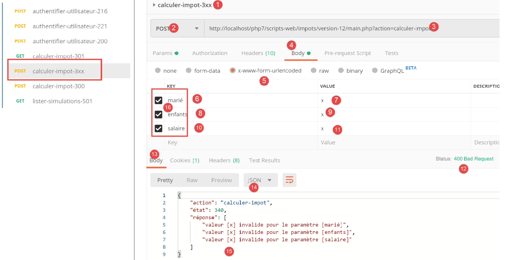
Arriba:
- Se realiza una consulta [POST] [2] con parámetros enviados [6-11] [marié, enfants, salaire] no válidos. Es posible no enviar uno de estos parámetros desmarcando su casilla en [16]. Esto le permitirá probar diferentes casos. En la captura de pantalla anterior, los tres parámetros están presentes y todos son inválidos;
- en [12-15], la respuesta jSON del servidor;
Ahora desmarquemos dos de los tres parámetros enviados:

Arriba,
- en [5-8], solo se envía el parámetro [salaire] y, además, es inválido;
- en [9-11], el resultado jSON del servidor;
Ahora hagamos un cálculo de impuestos con parámetros válidos:

Arriba:
- en [1118], una solicitud con parámetros válidos [6-8];
- en [12-14], la respuesta jSON del servidor;
23.11.7. La acción [lister-simulations]
La acción [lister-simulations] es procesada por el controlador secundario [ListerSimulationsController] de la siguiente manera:
<?php
namespace Application;
// dependencias de Symfony
use \Symfony\Component\HttpFoundation\Response;
use \Symfony\Component\HttpFoundation\Request;
use \Symfony\Component\HttpFoundation\Session\Session;
class ListerSimulationsController {
// $config es la configuración de la aplicación
// procesamiento de una solicitud Request
// utiliza la sesión Session y puede modificarla
// $infos son datos adicionales específicos de cada controlador
// devuelve una matriz [$statusCode, $état, $content, $headers]
public function execute(
array $config,
Request $request,
Session $session,
array $infos = NULL): array {
// debe haber un único parámetro GET
$method = strtolower($request->getMethod());
$erreur = $method !== "get" || $request->query->count() != 1;
if ($erreur) {
$état = 501;
$message = "GET requis, avec l'unique paramètre [action] dans l'URL";
// se devuelve un resultado con error al controlador principal
return [Response::HTTP_BAD_REQUEST, $état, ["réponse" => $message], []];
}
// se recupera la lista de simulaciones de la sesión
if (!$session->has("simulations")) {
$simulations = [];
} else {
$simulations = $session->get("simulations");
}
// se devuelve un resultado con éxito al controlador principal
$état = 500;
return [Response::HTTP_OK, $état, ["réponse" => $simulations], []];
}
}
Comentarios
- solicitud [GET main.php?action=lister-simulations];
- líneas 24-25: se comprueba que se tiene una solicitud GET con un único parámetro;
- líneas 26-31: si no es así, se devuelve un resultado con error al controlador principal;
- líneas 33-37: se recupera la lista de simulaciones de la sesión si se encuentra allí (línea 36); de lo contrario, esta lista está vacía (línea 34);
- líneas 39-40: se devuelve la lista de simulaciones al controlador principal;
23.11.8. Pruebas [Postman]
Vamos a crear dos pruebas, una de error y otra de éxito.

Arriba:
- en [1-8], se realiza una solicitud [GET] con un parámetro [param1] de más en el URL [3, 7-8];
- en [9-12], la respuesta jSON del servidor;
Ahora hagamos una consulta válida:

Arriba:
- en [1-5], una solicitud válida;
El resultado de la solicitud es el siguiente:

- en [3-6], la respuesta jSON del servidor. Antes de esta prueba, se había ejecutado varias veces la prueba [Postman] [calculer-impot-300] para crear simulaciones en la sesión web del servidor;
23.11.9. La acción [supprimer-simulation]
La acción [supprimer-simulation] es procesada por el controlador secundario [SupprimerSessionController] siguiente:
<?php
namespace Application;
// dependencias de Symfony
use \Symfony\Component\HttpFoundation\Response;
use \Symfony\Component\HttpFoundation\Request;
use \Symfony\Component\HttpFoundation\Session\Session;
class SupprimerSimulationController {
/// $config es la configuración de la aplicación
// procesamiento de una solicitud Request
// utiliza la sesión Session y puede modificarla
// $infos son datos adicionales específicos de cada controlador
// devuelve una matriz [$statusCode, $état, $content, $headers]
public function execute(
array $config,
Request $request,
Session $session,
array $infos = NULL): array {
// debe haber dos parámetros GET
$method = strtolower($request->getMethod());
$erreur = $method !== "get" || $request->query->count() != 2;
$état = 600;
if ($erreur) {
$état += 2;
$message = "GET requis, avec les paramètres [action, numéro]";
}
// el parámetro [numéro] debe existir
if (!$erreur) {
$état += 4;
$erreur = !$request->query->has("numéro");
if ($erreur) {
$message = "paramètre [numéro] manquant";
}
}
// el parámetro [numéro] debe ser válido
if (!$erreur) {
$état += 8;
$numéro = $request->query->get("numéro");
$erreur = !preg_match("/^\d+$/", $numéro);
if ($erreur) {
$message = "paramètre [$numéro] invalide";
}
}
// el parámetro [numéro] debe estar en el intervalo [0,n-1]
// si n es el número de simulaciones
if (!$erreur) {
$numéro = (int) $numéro;
$erreur = !$session->has("simulations");
if (!$erreur) {
$simulations = $session->get("simulations");
$erreur = $numéro < 0 || $numéro >= count($simulations);
}
if ($erreur) {
$état += 16;
$message = "la simulation n° [$numéro] n'existe pas";
}
}
// ¿error?
if ($erreur) {
// se devuelve el resultado al controlador principal
return [Response::HTTP_BAD_REQUEST, $état, ["réponse" => $message], []];
}
// se elimina la simulación $numéro
unset($simulations[$numéro]);
$simulations = array_values($simulations);
// se vuelven a poner las simulaciones en la sesión
$session->set("simulations", $simulations);
// se devuelve la lista de simulaciones al cliente
$état = 600;
return [Response::HTTP_OK, $état, ["réponse" => $simulations], []];
}
}
Comentarios
- solicitud [GET main.php?action=supprimer-simulation&numéro=x];
- líneas 24-30: se comprueba que existe una consulta GET con dos parámetros;
- líneas 32-38: se comprueba que el parámetro [numéro] existe en los parámetros de URL;
- líneas 40-47: se comprueba que el valor del parámetro [numéro] sea sintácticamente correcto;
- líneas 50-61: se comprueba que la simulación n.º [numéro] existe efectivamente. Hay dos casos de error:
- no se encuentra la lista de simulaciones en la sesión (línea 52);
- el n.º [numéro] de la simulación que se va a eliminar no existe en la lista de simulaciones;
- líneas 63-66: en caso de error, se devuelve un resultado con error al controlador principal;
- línea 68: se elimina la simulación n.º [numéro];
- línea 69: la operación [unset] no modifica los índices [0, n-1] de la lista. Para actualizarlos, se solicitan los valores de la tabla [$simulations] para eliminar la simulación que falta;
- línea 71: se vuelve a introducir la nueva tabla de simulaciones en la sesión;
- líneas 73-74: se devuelve al controlador principal la nueva lista de simulaciones;
23.11.10. Pruebas [Postman]
Vamos a realizar pruebas de error y de éxito:

Arriba:
- en [1-6], una solicitud GET sin el parámetro [numéro];
- en [7-10], la respuesta jSON del servidor;
Ahora una solicitud con un número sintácticamente incorrecto:

Arriba:
- en [1-5], una solicitud GET con un parámetro [numéro] no válido [3, 5];
- en [6-9], la respuesta jSON del servidor;
Ahora una solicitud con un número de simulación que no existe:
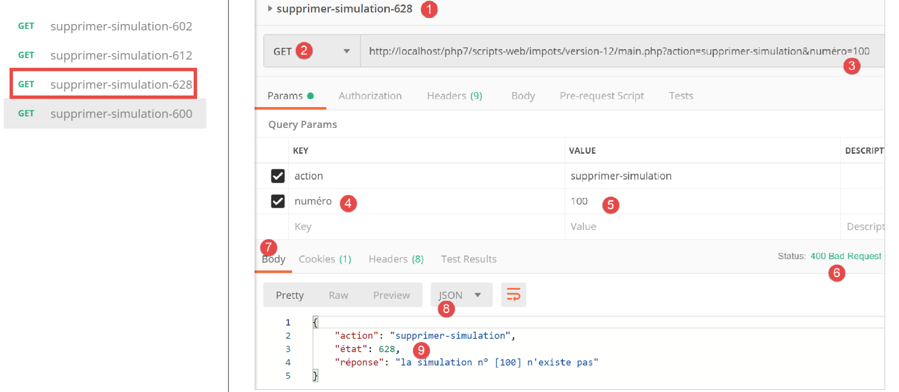
Arriba:
- en [1-5], una solicitud con un número de simulación igual a 100 que no existe en la lista de simulaciones;
- en [6-9], la respuesta jSON del servidor;
Ahora vamos a eliminar la simulación n.º 0 de la lista, es decir, la primera simulación. En primer lugar, volvamos a solicitar esta lista con la solicitud [lister-simulations-500]:

- en [1], actualmente hay 2 simulaciones;
Eliminamos la primera simulación (número 0):

Arriba:
- en [1-5], se elimina la simulación n.º 0 [5];
- en [6-9], la respuesta jSON del servidor. Se observa que la simulación n.º 0 ha sido eliminada;
Repitamos esta operación:

Arriba:
- en [1], ya no quedan simulaciones en la sesión web del servidor;
23.11.11. La acción [fin-session]
La acción [fin-session] es procesada por el controlador secundario [FinSessionController] siguiente:
<?php
namespace Application;
// dependencias de Symfony
use \Symfony\Component\HttpFoundation\Response;
use \Symfony\Component\HttpFoundation\Request;
use \Symfony\Component\HttpFoundation\Session\Session;
class FinSessionController implements InterfaceController {
// $config es la configuración de la aplicación
// procesamiento de una solicitud Request
// utiliza la sesión Session y puede modificarla
// $infos son datos adicionales específicos de cada controlador
// devuelve una matriz [$statusCode, $état, $content, $headers]
public function execute(
array $config,
Request $request,
Session $session,
array $infos = NULL): array {
// debe haber un único parámetro GET
$method = strtolower($request->getMethod());
$erreur = $method !== "get" || $request->query->count() != 1;
// ¿error?
if ($erreur) {
$état = 401;
// resultado en el controlador principal
$message = "GET requis avec le seul paramètre [action] dans l'URL";
return [Response::HTTP_BAD_REQUEST, $état, ["réponse" => $message], []];
}
// se almacena el tipo de sesión
$type = $session->get("type");
// se invalida la sesión actual
$session->invalidate();
// se vuelve a establecer el tipo en la nueva sesión
$session->set("type", $type);
// envío de la respuesta
$état = 400;
// resultado al controlador principal
$content = ["réponse" => "session supprimée"];
return [Response::HTTP_OK, $état, $content, []];
}
}
Comentarios
- solicitud [GET main.php?action=fin-session];
- líneas 25-33: se comprueba que la acción es una GET con el único parámetro [fin-action];
- línea 38: se invalida la sesión actual. Esto elimina los datos registrados en ella y se inicia una nueva sesión;
- línea 36: antes de que finalice la sesión, se memoriza el tipo [json, xml, html] de la misma;
- línea 40: el tipo de la sesión anterior se vuelve a colocar en la nueva sesión. Finalmente, se inicia una nueva sesión con la clave única [type];
- líneas 44-45: se devuelve el resultado al controlador principal;
23.11.12. Pruebas [Postman]
Vamos a realizar una prueba de error y una prueba de éxito:

Arriba:
- en [1-5], se solicita el fin de la sesión [5] con un POST [2] en lugar del GET esperado;
- en [6-9], la respuesta jSON del servidor;
Ahora, un ejemplo de éxito. Veamos primero la cookie de sesión intercambiada entre el cliente [Postman] y el servidor durante la última prueba realizada:

Arriba:
- en [3], la cookie de sesión enviada por el cliente [Postman] al servidor;
Veamos ahora los encabezados HTTP enviados por el servidor en su respuesta:

Arriba:
- en [3-4], la cookie de sesión no aparece en la respuesta del servidor. Es normal. Este solo la envía una vez: al inicio de una nueva sesión web;
Ahora ejecutemos una acción [fin-session] válida:

Arriba:
- en [1-3], una acción [fin-session] válida;
- en [4-7], la respuesta jSON del servidor;
Veamos los encabezados HTTP enviados en la respuesta del servidor:

- en [3], el servidor envía el encabezado [Set-Cookie], lo que indica que se inicia una nueva sesión web;
23.12. Los tipos de respuesta del servidor
23.12.1. Introducción
Volvamos a la arquitectura general de la aplicación:

Vamos a presentar los posibles tipos de respuesta [3a]. Estos se recogen en la carpeta [Responses] del proyecto:

Ya hemos presentado la clase [JsonResponse] en el apartado enlace. Esta implementa la interfaz [InterfaceResponse] y extiende la clase [ParentResponse]. Lo mismo ocurre con las otras dos clases [XmlResponse] y [HtmlResponse].
Recordemos la definición de la interfaz [InterfaceResponse]:
<?php
namespace Application;
// dependencias de Symfony
use Symfony\Component\HttpFoundation\Request;
use Symfony\Component\HttpFoundation\Session\Session;
interface InterfaceResponse {
// Solicitud $request: solicitud en proceso
// Sesión $session: la sesión de la aplicación web
// array $config: la configuración de la aplicación
// int statusCode: el código de estado de la respuesta
// array $content: la respuesta del servidor
// array $headers: los encabezados HTTP que se deben añadir a la respuesta
// Logger $logger: el registrador para escribir registros
public function send(
Request $request = NULL,
Session $session = NULL,
array $config,
int $statusCode,
array $content,
array $headers,
Logger $logger = NULL): void;
}
- líneas 19-27: la interfaz [InterfaceResponse] cuenta con un único método, [send], para enviar la respuesta al cliente;
- líneas 11-17: significado de los diferentes parámetros del método [send];
- líneas 23-25: los parámetros [$statusCode, $content, $headers] constituyen la respuesta estándar de los controladores secundarios de la aplicación. Sin embargo, la respuesta puede necesitar otra información. Por ello, se le proporcionan los tres primeros parámetros (líneas 20-22), que le dan acceso a toda la información relativa a la solicitud, la sesión y la configuración;
- línea 26: la respuesta necesita el [Logger], ya que va a registrar la respuesta enviada al cliente;
Recordemos ahora el código de la clase [ParentResponse], clase padre de los tres tipos de respuesta que factoriza lo que tienen en común: el envío efectivo de una respuesta de texto al cliente:
<?php
namespace Application;
// dependencias de Symfony
use Symfony\Component\HttpFoundation\Response;
class ParentResponse {
// int $statusCode: el código HTTP del estado de la respuesta
// string $content: el cuerpo de la respuesta que se va a enviar
// según el caso, es una cadena jSON, XML, HTML
// array $headers: los encabezados HTTP que se deben añadir a la respuesta
public function sendResponse(
int $statusCode,
string $content,
array $headers): void {
// preparación de la respuesta de texto del servidor
$response = new Response();
$response->setCharset("utf-8");
// código de estado
$response->setStatusCode($statusCode);
// encabezados
foreach ($headers as $text => $value) {
$response->headers->set($text, $value);
}
//: se envía la respuesta
$response->setContent($content);
$response->send();
}
}
Comentarios
- líneas 10-13: el significado de los tres parámetros del método [send];
- línea 17: cabe señalar que el cuerpo de la respuesta es de tipo [string] y, por lo tanto, está listo para ser enviado (línea 30);
- línea 22: la respuesta tendrá caracteres UTF-8;
- línea 24: código de estado HTTP de la respuesta;
- líneas 26-28: se añaden los encabezados HTTP proporcionados por el código de llamada;
- líneas 30-31: envío de la respuesta al cliente;
Por último, recordemos el código del controlador principal que solicita el envío de la respuesta al cliente:
// se añaden las claves [action, état] a la respuesta del controlador
$content = ["action" => $action, "état" => $état] + $content;
// se instancia el objeto [Response] encargado de enviar la respuesta al cliente
$response = __NAMESPACE__ . $config["types"][$type]["response"];
(new $response())->send($request, $session, $config, $statusCode, $content, $headers, $logger);
// se ha enviado la respuesta; se liberan los recursos
$logger->close();
exit;
- línea 4: se establece el nombre de la clase [Response] que se va a instanciar;
- línea 5: se instancia y se envía la respuesta al cliente mediante el método [send($request, $session, $config, $statusCode, $content, $headers, $logger)]. Dado que implementan la misma interfaz [InterfaceResponse], los métodos [send] de los diferentes tipos de respuesta tienen todos la misma firma;
23.12.2. La clase [JsonResponse]
Ya se ha presentado en el apartado anterior. No obstante, volvemos a incluir su código para resaltar mejor la homogeneidad de las tres clases de respuesta:
La clase [JsonResponse] implementa la interfaz [InterfaceResponse] de la siguiente manera:
<?php
namespace Application;
// dependencias de Symfony
use Symfony\Component\Serializer\Encoder\JsonEncode;
use Symfony\Component\Serializer\Encoder\JsonEncoder;
use Symfony\Component\Serializer\Normalizer\ObjectNormalizer;
use Symfony\Component\Serializer\Serializer;
use \Symfony\Component\HttpFoundation\Request;
use \Symfony\Component\HttpFoundation\Session\Session;
class JsonResponse extends ParentResponse implements InterfaceResponse {
// Solicitud $request: solicitud en proceso
// Sesión $session: la sesión de la aplicación web
// array $config: la configuración de la aplicación
// int statusCode: el código de estado de la respuesta
// array $content: la respuesta del servidor
// array $headers: los encabezados HTTP que se deben añadir a la respuesta
// Logger $logger: el registrador para escribir registros
public function send(
Request $request = NULL,
Session $session = NULL,
array $config,
int $statusCode,
array $content,
array $headers,
Logger $logger = NULL): void {
// preparación del serializador de Symfony
$serializer = new Serializer(
[
// necesario para la serialización de objetos
new ObjectNormalizer()],
// codificador jSON
// para las opciones, insertar OU entre las diferentes opciones
[new JsonEncoder(new JsonEncode([JsonEncode::OPTIONS => JSON_UNESCAPED_UNICODE]))]
);
// serialización jSON
$json = $serializer->serialize($content, 'json');
// encabezados
$headers = array_merge($headers, ["content-type" => "application/json"]);
// envío de respuesta
parent::sendResponse($statusCode, $json, $headers);
// registro
if ($logger !== NULL) {
$logger->write("réponse=$json\n");
}
}
}
Comentarios
- línea 13: la clase implementa la interfaz [InterfaceResponse];
- línea 13: la clase extiende la clase [ParentResponse]. Todos los tipos de [Response] extienden esta clase. Es esta clase padre la que envía la respuesta al cliente (línea 46). Como este código era común a todos los tipos de [Response], se factorizó en una clase padre;
- líneas 33-40: instanciación del serializador [Symfony] que traducirá la respuesta del servidor [$content] a una cadena jSON (línea 42);
- líneas 34-36: el primer parámetro del constructor de [Serializer] es una matriz. En él se coloca una instancia de la clase [ObjectNormalizer] necesaria para la serialización de objetos. Este caso se da en esta aplicación con una lista de simulaciones en la que cada simulación es una instancia de la clase [Simulation];
- línea 39: el segundo parámetro del constructor de [Serializer] es también una matriz: en ella se colocan todos los codificadores utilizados en una serialización (XML, jSON, CSV…);
- línea 39: aquí solo habrá un codificador, de tipo [JsonEncoder]. El constructor sin parámetros podría haber sido suficiente. Aquí, hemos pasado un parámetro [JsonEncode] al constructor, únicamente para pasar opciones de codificación jSON;
- línea 39: el parámetro del constructor [JsonEncode] es una matriz de opciones. Aquí se utiliza option [JSON_UNESCAPED_UNICODE] para solicitar que los caracteres UTF-8 de la cadena jSON se representen de forma nativa y no se «escapen»;
- línea 42: el cuerpo de la respuesta HHTP se serializa en jSON gracias al serializador anterior;
- línea 44: se añade el encabezado HTTP que indica al cliente que se le va a enviar jSON;
- línea 46: se solicita a la clase padre que envíe la respuesta al cliente;
- líneas 48-50: se registra la respuesta jSON;
23.12.3. La clase [XmlResponse]
La clase [XmlResponse] implementa la interfaz [InterfaceResponse] de la siguiente manera:
<?php
namespace Application;
// dependencias de Symfony
use Symfony\Component\HttpFoundation\Request;
use Symfony\Component\HttpFoundation\Session\Session;
use Symfony\Component\Serializer\Encoder\JsonEncode;
use Symfony\Component\Serializer\Encoder\JsonEncoder;
use Symfony\Component\Serializer\Encoder\XmlEncoder;
use Symfony\Component\Serializer\Normalizer\ObjectNormalizer;
use Symfony\Component\Serializer\Serializer;
class XmlResponse extends ParentResponse implements InterfaceResponse {
// Solicitud $request: solicitud en proceso
// Sesión $session: la sesión de la aplicación web
// array $config: la configuración de la aplicación
// int statusCode: el código de estado de la respuesta
// array $content: la respuesta del servidor
// array $headers: los encabezados HTTP que se deben añadir a la respuesta
// Logger $logger: el registrador para escribir registros
public function send(
Request $request = NULL,
Session $session = NULL,
array $config,
int $statusCode,
array $content,
array $headers,
Logger $logger = NULL): void {
// preparación del serializador de Symfony
$serializer = new Serializer(
// necesario para la serialización de objetos
[new ObjectNormalizer()],
[
// serialización XML
new XmlEncoder(
[
XmlEncoder::ROOT_NODE_NAME => 'root',
XmlEncoder::ENCODING => 'utf-8'
]
),
// serialización jSON
new JsonEncoder(new JsonEncode([JsonEncode::OPTIONS => JSON_UNESCAPED_UNICODE]))
]
);
// serialización XML
$xml = $serializer->serialize($content, 'xml');
// encabezados
$headers = array_merge($headers, ["content-type" => "application/xml"]);
// envío de respuesta
parent::sendResponse($statusCode, $xml, $headers);
// registro
if ($logger !== NULL) {
// registro en jSON
$log = $serializer->serialize($content, 'json');
$logger->write("réponse=$log\n");
}
}
}
Comentarios
- líneas 34-48: instanciación de un serializador Symfony. El constructor admite dos parámetros de tipo matriz;
- línea 36: la primera matriz contiene una instancia de tipo [ObjectNormalizer] que interviene en la serialización de objetos;
- líneas 37-47: la segunda matriz contiene los codificadores utilizados para la serialización. Se pueden prever diversos tipos de serialización con el mismo serializador;
- líneas 38-44: el codificador XML;
- línea 41: se establece la raíz del código XML generado. Este tendrá la forma <root>[autres balises XML]</root>;
- línea 42: la codificación utilizará los caracteres UTF-8;
- línea 46: el codificador jSON. Este se utilizará para el registro de la respuesta en el archivo [logs.txt], que está en formato jSON;
- línea 50: el cuerpo de la respuesta enviada al cliente se serializa en XML;
- línea 52: se añade a los encabezados recibidos como parámetro (línea 30) el encabezado HTTP, que indica al cliente que se le envía un documento XML;
- línea 54: envío efectivo de la respuesta al cliente por parte de la clase padre;
- líneas 56-60: registro en jSON de la respuesta;
23.12.4. Pruebas [Postman]
Ya hemos realizado todas las pruebas de errores posibles en jSON. No hay nada más que hacer en XML. Mostramos dos ejemplos de respuesta XML:

Arriba:
- en [1-3], la solicitud de inicio de sesión XML;
- en [4-7], la respuesta XML del servidor;
A partir de ahora, todas las respuestas del servidor estarán en XML. Podemos retomar todas las solicitudes ya utilizadas en [Postman] sin modificarlas y obtendremos para cada una de ellas una respuesta XML. Realicemos, por ejemplo, una autenticación correcta:

Arriba:
- en [1-3], una solicitud de autenticación válida;
- en [4-7], la respuesta XML del servidor;
23.12.5. La respuesta [HtmlResponse]
Cuando el tipo de sesión es [html], se instancia un objeto de tipo [HtmlResponse] para enviar la respuesta al cliente. Este enviará al cliente un flujo HTML que depende del código de estado devuelto por el controlador secundario que ha procesado la acción. Esta correspondencia [état=>vue] se registra en el archivo de configuración [config.json] de la siguiente manera:
"vues": {
"vue-authentification.php": [700, 221, 400],
"vue-calcul-impot.php": [200, 300, 341, 350, 800],
"vue-liste-simulations.php": [500, 600]
},
"vue-erreurs": "vue-erreurs.php"
Esta configuración se lee de la siguiente manera: [‘nom de la vue’ => ‘états associés à cette vue’]
- línea 2: si el controlador secundario ha devuelto un estado de la tabla [700, 221, 400], entonces hay que mostrar la vista [vue-authentification.php];
- línea 3: si el controlador secundario ha devuelto un estado de la tabla [200, 300, 341, 350, 800], entonces hay que mostrar la vista [vue-calcul-impot.php];
- línea 4: si el controlador secundario ha devuelto un estado de la tabla [500, 600], entonces hay que mostrar la vista [vue-liste-simulations.php];
- línea 6: si el controlador secundario ha devuelto un estado que no se encuentra en ninguna de las tablas anteriores, entonces hay que mostrar la vista [vue-erreurs.php];
Las vistas se recogen en la carpeta [Views] del proyecto:

El código de la clase [HtmlResponse] es el siguiente:
<?php
namespace Application;
// dependencias de Symfony
use Symfony\Component\HttpFoundation\Request;
use Symfony\Component\HttpFoundation\Session\Session;
use Symfony\Component\Serializer\Encoder\JsonEncode;
use Symfony\Component\Serializer\Encoder\JsonEncoder;
use Symfony\Component\Serializer\Normalizer\ObjectNormalizer;
use Symfony\Component\Serializer\Serializer;
class HtmlResponse extends ParentResponse implements InterfaceResponse {
// Solicitud $request: solicitud en proceso
// Sesión $session: la sesión de la aplicación web
// array $config: la configuración de la aplicación
// int statusCode: el código de estado de la respuesta
// array $content: la respuesta del servidor
// array $headers: los encabezados HTTP que se deben añadir a la respuesta
// Logger $logger: el registrador para escribir registros
public function send(
Request $request = NULL,
Session $session = NULL,
array $config,
int $statusCode,
array $content,
array $headers,
Logger $logger = NULL): void {
// preparación del serializador de Symfony
$serializer = new Serializer(
[
// para la serialización de objetos
new ObjectNormalizer()],
[
// para la serialización jSON del registro de la respuesta
new JsonEncoder(new JsonEncode([JsonEncode::OPTIONS => JSON_UNESCAPED_UNICODE]))
]
);
// la respuesta HTML depende del código de estado devuelto por el controlador
$état = $content["état"];
// a cada estado le corresponde una vista; esta se busca en la configuración de la aplicación
// la lista de vistas
$vues = array_keys($config["vues"]);
$trouvé = false;
$i = 0;
// se recorre la lista de vistas
while (!$trouvé && $i < count($vues)) {
// estados asociados a la vista n.º i
$états = $config["vues"][$vues[$i]];
// ¿se encuentra el informe buscado entre los informes asociados a la vista n.º I?
if (in_array($état, $états)) {
// la vista mostrada será la vista n.º i
$vueRéponse = $vues[$i];
$trouvé = true;
}
// siguiente vista
$i++;
}
// ¿Encontrado?
if (!$trouvé) {
// si no existe ninguna vista para el estado actual de la aplicación
// se muestra la vista de errores
$vueRéponse = $config["vue-erreurs"];
}
// se recupera la vista HTML para mostrarla en una cadena de caracteres
ob_start();
require __DIR__ . "/../Views/$vueRéponse";
$html = ob_get_clean();
// se indica en los encabezados que se va a enviar HTML
$headers = array_merge($headers, ["content-type" => "text/html"]);
// la clase padre se encarga del envío efectivo de la respuesta
parent::sendResponse($statusCode, $html, $headers);
// registro en jSON de la respuesta sin el HTML
if ($logger !== NULL) {
// registro en jSON de la respuesta del controlador secundario que ha procesado la acción
$log = $serializer->serialize($content, 'json');
$logger->write("réponse=$log\n");
}
}
}
Comentarios
- líneas 32-41: se instancia un serializador Symfony. Este es necesario para el registro jSON de la respuesta del controlador que ha procesado la acción (líneas 72-82);
- líneas 42-57: se busca en la configuración de la aplicación la vista que debe mostrarse. Esta depende del código de estado devuelto por el controlador que ha procesado la acción. Este código se encuentra en [$content[‘état’]] (línea 43);
- líneas 42-61: se busca la vista que corresponde a este estado;
- líneas 62-67: si no se ha encontrado ninguna vista, nos encontramos ante un código de estado anormal para la aplicación HTML. Más adelante explicaremos este concepto de estados anormales. En este caso, se muestra una vista de error;
- líneas 68-70: se interpreta el código PHP de la vista seleccionada y se asigna el resultado a la variable [$html] (línea 71);
- este código merece algunas explicaciones. Imaginemos que la vista seleccionada es [vue-authentification.php], que presenta un formulario web de autenticación:
- línea 69: la función [ob_start] inicia lo que la documentación denomina un retardo de salida. Todo lo que se escribe mediante operaciones print, require… y que normalmente se envía inmediatamente al cliente, va a un búfer de salida (ob=output buffer) sin enviarse al cliente;
- línea 70: se carga la vista [vue-authentification.php], que es una vista HTML dinámica que contiene código PHP. Entonces ocurren dos cosas:
- el código PHP de la vista [vue-authentification.php] se carga e interpreta. El resultado es una vista que llamaremos [vue-authentification.html], que solo contiene código HTML, o incluso de CSS y Javascript, pero ya no de PHP;
- este código HTML se envía normalmente al cliente. De hecho, este es el caso de todo texto que encuentra el intérprete PHP y que no es código PHP. Debido al retardo de salida, este código HTML se coloca en el búfer de salida sin enviarse al cliente;
- línea 71: la función [ob_get_clean] hace dos cosas:
- coloca en la variable [$html] el contenido del búfer de salida, es decir, la página [vue-authentification.html] que se ha colocado allí;
- vacía el búfer de salida. Para este, todo ocurre como si nada hubiera pasado. Por otra parte, el cliente sigue sin haber recibido nada;
- línea 70: aquí se está ejecutando la clase [HtmlResponse], que se encuentra en la carpeta [Responses]. Para encontrar la vista, hay que subir un nivel a [..] y luego pasar a la carpeta [Views]. [__DIR__] es el nombre absoluto de la carpeta en la que se encuentra el script en ejecución; en nuestro ejemplo, la carpeta [C:/myprograms/laragon-lite/www/php7/scripts-web/impots/13/Responses];
- línea 73: se añade a los encabezados HTTP recibidos como parámetro (línea 29) el encabezado que indica al cliente que se le va a enviar HTML;
- línea 75: se solicita a la clase padre que proceda al envío efectivo de la respuesta al cliente;
- líneas 77-81: se registra en jSON la respuesta [$content] proporcionada por el controlador secundario que ha procesado la acción en curso;
23.12.6. Pruebas [Postman]
Para probar realmente el modo HTML de la sesión, tendríamos que revisar todas las vistas. Lo haremos más adelante. Realizaremos la siguiente prueba:
Veamos la lista de vistas en el archivo de configuración:
"vues": {
"vue-authentification.php": [700, 221, 400],
"vue-calcul-impot.php": [200, 300, 341, 350, 800],
"vue-liste-simulations.php": [500, 600]
},
"vue-erreurs": "vue-erreurs.php"
Podemos encontrar el contexto que genera algunos de los códigos de estado anteriores al examinar las pruebas [Postman] realizadas:

Vemos que el código de estado [700] corresponde a una acción [init-session] que ha tenido éxito [2]. Arriba tenemos una respuesta jSON, pero podría ser del tipo XML o HTML. Es este último caso el que se va a probar. Según el archivo de configuración, es la vista [vue-authentification.php] la que constituye la respuesta HTML. Comprobémoslo.

Arriba:
- en [1-3], se inicia una sesión HTML. Por lo tanto, esperamos una respuesta HTML;
- en [4-8], la respuesta HTML del servidor;
- la pestaña [8] permite obtener una vista previa del código HTML recibido;

- en [8-9], una vista previa de la vista HTML;
23.13. La aplicación web HTML
23.13.1. Presentación de las vistas
La aplicación web HTML utilizará cuatro vistas:
La vista de autenticación:

La vista de cálculo de impuestos:

La vista de la lista de simulaciones:

Vista de errores inesperados:

Vamos a describir estas vistas una por una.
23.13.2. La vista de autenticación
23.13.2.1. Presentación de la vista
La vista de autenticación es la siguiente:

La vista se compone de dos elementos que llamaremos fragmentos:
- el fragmento [1] es generado por un script [v-bandeau.php];
- el fragmento [2] es generado por un script [v-authentification.php];
La vista de autenticación es generada por la siguiente página [vue-authentification.php]:
<?php
// datos de prueba de la página
// se encapsulan los datos de la página en $page
…
?>
<!doctype html>
<html lang="fr">
<head>
<!-- Etiquetas meta obligatorias -->
<meta charset="utf-8">
<meta name="viewport" content="width=device-width, initial-scale=1, shrink-to-fit=no">
<!-- Bootstrap CSS -->
<link rel="stylesheet" href="https://stackpath.bootstrapcdn.com/bootstrap/4.1.3/css/bootstrap.min.css" integrity="sha384-MCw98/SFnGE8fJT3GXwEOngsV7Zt27NXFoaoApmYm81iuXoPkFOJwJ8ERdknLPMO" crossorigin="anonymous">
<title>Application impots</title>
</head>
<body>
<div class="container">
<!-- cabecera de 1 fila y 12 columnas -->
<?php require "v-bandeau.php"; ?>
<!-- Formulario de autenticación de 9 columnas -->
<div class="row">
<div class="col-md-9">
<?php require "v-authentification.php" ?>
</div>
</div>
<?php
// si hay un error, se muestra un mensaje de error
if ($modèle->error) {
print <<<EOT
<div class="row">
<div class="col-md-9">
<div class="alert alert-danger" role="alert">
Les erreurs suivantes se sont produites :
<ul>$modèle->erreurs</ul>
</div>
</div>
</div>
EOT;
}
?>
</div>
</body>
</html>
Comentarios
- línea 7: un documento HTML comienza con esta línea;
- líneas 8-44: la página HTML está encapsulada entre las etiquetas <html> </html>;
- líneas 9-16: encabezado (head) del documento HTML;
- línea 11: la etiqueta <meta charset> indica que el documento está codificado en UTF-8;
- línea 12: la etiqueta <meta name=’viewport’> establece la visualización inicial de la vista: a lo ancho de la pantalla que la muestra (width) a su tamaño inicial (initial-scale) sin redimensionamiento para adaptarse a un tamaño de pantalla más pequeño (shrink-to-fit);
- línea 14: la etiqueta <link rel=’stylesheet’> establece el archivo CSS que controla la apariencia de la vista. Aquí utilizamos el framework CSS Bootstrap 4.1.3 [https://getbootstrap.com/docs/4.0/getting-started/introduction/] ;
- línea 15: la etiqueta <title> establece el título de la página:

- líneas 17-43: el cuerpo de la página web está encapsulado entre las etiquetas <body></body> ;
- líneas 18-42: la etiqueta <div> delimita una sección de la página mostrada. Los atributos [class] utilizados en la vista hacen referencia al framework CSS Bootstrap. La etiqueta <div class=’container’> delimita un contenedor Bootstrap;
- línea 20: se incluye el script [v-bandeau.php]. Este script genera el banner [1] de la página. Lo describiremos en breve;
- líneas 22-26: la etiqueta <div class=’row’> delimita una fila de Bootstrap. Estas filas constan de 12 columnas;
- línea 23: la etiqueta <div class=’col-md-9’> delimita una sección de 9 columnas;
- línea 24: se incluye el script [v-authentification.php] que muestra el formulario de autenticación [2] de la página. Lo describiremos en breve;
- línea 27: la etiqueta <?php inserta código PHP dentro de la página HTML. Este código se ejecuta antes de que se muestre la página HTML y puede modificarla;
- línea 29: todos los datos dinámicos de la vista mostrada se encapsularán en un objeto [$modèle] de tipo [stdClass]. Se trata de una elección arbitraria. Se podría haber elegido una tabla asociativa en su lugar para obtener el mismo resultado;
- línea 29: la autenticación falla si el usuario introduce credenciales incorrectas. En este caso, se vuelve a mostrar la vista de autenticación con un mensaje de error. El atributo [$modèle→error] indica si se debe mostrar este mensaje de error;
- líneas 30-39: esta sintaxis escribe todo el texto situado entre los símbolos PHP <<<EOT (línea 30: se puede poner lo que se desee en lugar de EOT=End Of Text) y el símbolo EOT de la línea 39 (debe ser idéntico al símbolo utilizado en la línea 30). El símbolo debe escribirse en la primera columna de la línea 39. Se interpretan las variables PHP situadas en el texto entre los dos símbolos EOT;
- líneas 33-36: delimitan un área con fondo rosa (class="alert alert-danger") (línea 33);

- línea 34: un texto;
- línea 35: la etiqueta HTML <ul> (lista desordenada) muestra una lista con viñetas. Cada elemento de la lista debe tener la sintaxis <li>elemento</li>;
Recordemos de este código los elementos dinámicos que hay que definir:
- [$modèle→error]: para mostrar un mensaje de error;
- [$modèle→erreurs]: una lista (en el sentido de HTML del término) de mensajes de error;
23.13.2.2. El fragmento [v-bandeau.php]
El fragmento [v-bandeau.php] muestra la barra superior de todas las vistas de la aplicación web:

El código del fragmento [v-bandeau.php] es el siguiente:
<!-- Jumbotron de Bootstrap -->
<div class="jumbotron">
<div class="row">
<div class="col-md-4">
<img src="<?= $logo ?>" alt="Cerisier en fleurs" />
</div>
<div class="col-md-8">
<h1>
Calculez votre impôt
</h1>
</div>
</div>
</div>
Comentarios
- líneas 2-13: el banner está encapsulado en una sección Bootstrap de tipo Jumbotron [<div class="jumbotron">]. Esta clase Bootstrap aplica un estilo particular al contenido mostrado para resaltarlo;
- líneas 3-12: una línea de Bootstrap;
- líneas 4-6: se coloca una imagen [img] en las cuatro primeras columnas de la línea;
- línea 5: la sintaxis [<?= $logo ?>] es equivalente a la sintaxis [<?php print $logo ?>]. Dicho de otro modo, el valor del atributo [src] será el valor de la variable PHP [$logo];
- líneas 7-11: las otras 8 columnas de la línea (recordemos que hay 12 en total) servirán para colocar un texto (línea 9) en letra grande (<h1>, líneas 8-10);
Elementos dinámicos:
- [$logo]: URL de la imagen mostrada en el banner;
23.13.2.3. El fragmento [v-authentification.php]
El fragmento [v-authentification .php] muestra el formulario de autenticación de la aplicación web:

El código del fragmento [v-authentification.php] es el siguiente:
<!-- formulario HTML: se envían los valores con la acción [authentifier-utilisateur] -->
<form method="post" action="main.php?action=authentifier-utilisateur">
<!-- título -->
<div class="alert alert-primary" role="alert">
<h4>Veuillez vous authentifier</h4>
</div>
<!-- formulario Bootstrap -->
<fieldset class="form-group">
<!-- primera línea -->
<div class="form-group row">
<!-- etiqueta -->
<label for="user" class="col-md-3 col-form-label">Nom d'utilisateur</label>
<div class="col-md-4">
<!-- campo de texto -->
<input type="text" class="form-control" id="user" name="user"
placeholder="Nom d'utilisateur" value="<?= $modèle->login ?>">
</div>
</div>
<!-- 2.ª línea -->
<div class="form-group row">
<!-- texto -->
<label for="password" class="col-md-3 col-form-label">Mot de passe</label>
<!-- campo de texto -->
<div class="col-md-4">
<input type="password" class="form-control" id="password" name="password"
placeholder="Mot de passe">
</div>
</div>
<!-- botón de tipo [submit] en una tercera línea-->
<div class="form-group row">
<div class="col-md-2">
<button type="submit" class="btn btn-primary">Valider</button>
</div>
</div>
</fieldset>
</form>
Comentarios
- líneas 2-39: la etiqueta <form> delimita un formulario HTML. Este suele tener las siguientes características:
- define campos de entrada (etiquetas <input> de las líneas 17 y 27;
- tiene un botón de tipo [submit] (línea 34) que envía los valores introducidos al URL indicado en el atributo [action] de la etiqueta [form] (línea 2). El método HTTP utilizado para consultar este URL se especifica en el atributo [method] de la etiqueta [form] (línea 2);
- Aquí, cuando el usuario haga clic en el botón [Valider] (línea 34), el navegador enviará (línea 2) los valores introducidos en el formulario a URL [main.php?action=authentifier-utilisateur] (línea 2);
- los valores enviados son los introducidos por el usuario en los campos de las líneas 17 y 27. Se enviarán con el formato [user=xx&password=yy]. Los nombres de los parámetros [user, password] son los de los atributos [name] de los campos de entrada de las líneas 17 y 27;
- líneas 5-7: una sección Bootstrap para mostrar un título sobre fondo azul:

- líneas 10-37: un formulario Bootstrap. Todos los elementos del formulario se aplicarán entonces un estilo determinado;
- líneas 12-20: definen la primera línea del formulario:

- la línea 14 define el texto [1] en tres columnas. El atributo [for] de la etiqueta [label] vincula el texto a la etiqueta [id] del campo de entrada de la línea 17;
- líneas 15-19: coloca el campo de entrada en un conjunto de cuatro columnas;
- línea 17: la etiqueta HTML [input] describe un campo de entrada. Tiene varios parámetros:
- [type=’text’]: es un campo de entrada de texto. Se puede escribir cualquier cosa en él;
- [class=’form-control’]: estilo Bootstrap para el campo de entrada;
- [id=’user’]: identificador del campo de entrada. Este identificador suele ser utilizado por CSS y el código Javascript;
- [name=’user’]: nombre del campo de entrada. El navegador [user=xx] enviará el valor introducido por el usuario con este nombre;
- [placeholder=’invite’]: el texto que se muestra en el campo de entrada cuando el usuario aún no ha escrito nada;

- [value=’valeur’]: el texto «valor» se mostrará en el campo de entrada tan pronto como este se muestre, es decir, antes de que el usuario introduzca cualquier otra cosa. Este mecanismo se utiliza en caso de error para mostrar la entrada que lo ha provocado. En este caso, este valor será el valor de la variable PHP [$modèle→login];
- líneas 21-30: un código similar para la introducción de la contraseña;
- línea 27: [type=’password’] hace que tengamos un campo de entrada de texto (se puede escribir cualquier cosa), pero los caracteres introducidos quedan ocultos:

- líneas 32-36: una tercera línea para el botón [Valider];
- línea 34: dado que tiene el atributo [type=submit], al hacer clic en este botón, el navegador envía al servidor los valores introducidos, tal y como se ha explicado anteriormente. El atributo CSS [class="btn btn-primary"] muestra un botón azul:
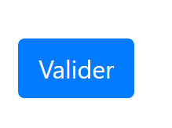
Nos queda por explicar una última cosa. En la línea 2, el atributo [action="main.php?action=authentifier-utilisateur"] define un URL incompleto (no comienza por http://máquina:puerto/ruta). En nuestro ejemplo, todas las URL de la aplicación tienen el formato [http://localhost/php7/scripts-web/impots/version-12/main.php?action=xx]. La vista de la autenticación se obtendrá con varias URL:
- [http://localhost/php7/scripts-web/impots/version-12/main.php?action=init-session&type=html];
- [http://localhost/php7/scripts-web/impots/version-12/main.php?action=authentifier-utilisateur]
Estos URL designan un documento [main.php] en la ruta [http://localhost/php7/scripts-web/impots/version-12]. Este será el caso de todos los URL de esta aplicación. El parámetro [action="main.php?action=authentifier-utilisateur"] llevará este camino como prefijo en el momento de enviar los valores introducidos. Por lo tanto, estos se enviarán a URL [http://localhost/php7/scripts-web/impots/version-12/main.php?action=authentifier-utilisateur].
23.13.2.4. Pruebas visuales
Las vistas se pueden probar mucho antes de su integración en la aplicación. Se trata aquí de probar su aspecto visual. Reuniremos todas las vistas de prueba en la carpeta [Tests] del proyecto:
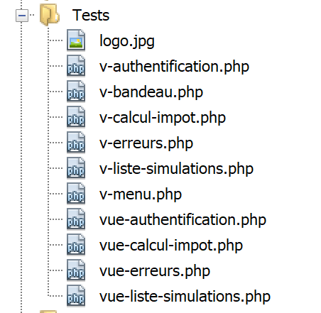
Para probar la vista [vue-authentification.php], debemos crear el modelo de datos que va a mostrar:
<?php
// datos de prueba de la página
//
// se calcula la plantilla de la vista
$modèle = getModelForThisView();
function getModelForThisView(): object {
// se encapsulan los datos de la página en $modèle
$modèle = new \stdClass();
// identificador de usuario
$modèle->login = "albert";
// lista de errores
$modèle->error = TRUE;
$erreurs = ["erreur1", "erreur2"];
// se crea una lista HTML de los errores
$content = "";
foreach ($erreurs as $erreur) {
$content .= "<li>$erreur</li>";
}
$modèle->erreurs = $content;
// imagen del banner
$modèle->logo = "http://localhost/php7/scripts-web/impots/version-12/Tests/logo.jpg";
// se genera el modelo
return $modèle;
}
?>
<!-- documento HTML -->
<!doctype html>
<html lang="fr">
<head>
<!-- Etiquetas meta obligatorias -->
…
</head>
<body>
….
</body>
</html>
Comentarios
- líneas 1-5: la vista de autenticación tiene partes dinámicas controladas por el objeto [$modèle]. A este objeto se le denomina modelo de la vista. Según una de las dos definiciones dadas para el acrónimo MVC, aquí tenemos la M de MVC;
- línea 5: el modelo de la vista se calcula mediante la función [getModelForThisView];
- línea 9: el modelo de la vista se encapsulará en un tipo [stdClass];
- líneas 10-22: se definen valores de prueba para los elementos dinámicos de la vista de autenticación;
La prueba visual se puede realizar desde Netbeans:

Continuamos con estas pruebas visuales hasta que el resultado sea satisfactorio.
23.13.2.5. Cálculo del modelo de la vista
Una vez determinado el aspecto visual de la vista, se puede proceder al cálculo del modelo de la vista en condiciones reales. Recordemos los códigos de estado que conducen a esta vista. Se encuentran en el archivo de configuración:
"vues": {
"vue-authentification.php": [700, 221, 400],
"vue-calcul-impot.php": [200, 300, 341, 350, 800],
"vue-liste-simulations.php": [500, 600]
},
"vue-erreurs": "vue-erreurs.php"
Por lo tanto, son los códigos de estado [700, 221, 400] los que hacen que se muestre la vista de autenticación. Para averiguar el significado de estos códigos, podemos ayudarnos de las pruebas [Postman] realizadas en la aplicación jSON:
- [init-session-json-700]: 700 es el código de estado tras una acción [init-session] realizada con éxito: se muestra entonces el formulario de autenticación vacío;
- [authentifier-utilisateur-221]: 221 es el código de estado tras una acción [authentifier-utilisateur] fallida (identificadores no reconocidos): se muestra entonces el formulario de autenticación para que se corrija;
- [fin-session-400]: 400 es el código de estado tras una acción [fin-session] realizada con éxito: en ese caso, se muestra el formulario de autenticación vacío;
Ahora que sabemos en qué momentos debe mostrarse el formulario de autenticación, podemos calcular su plantilla en [vue-authentification.php]:

El código de cálculo de la plantilla de la vista [vue-authentification.php] es el siguiente:
<?php
// se heredan las siguientes variables
// Solicitud $request: la solicitud en curso
// Sesión $session: la sesión de la aplicación
// array $config: la configuración de la aplicación
// array $content: la respuesta del controlador
//
// dependencias de Symfony
use Symfony\Component\HttpFoundation\Request;
use Symfony\Component\HttpFoundation\Session\Session;
//: se calcula el modelo de la vista
$modèle = getModelForThisView($request, $session, $config, $content);
function getModelForThisView(Request $request, Session $session, array $config, array $content): object {
// se encapsulan los datos de la página en $modèle
$modèle = new stdClass();
// estado de la aplicación
$état = $content["état"];
// el modelo depende del estado
switch ($état) {
case 700:
case 400:
// caso de visualización del formulario vacío
$modèle->login = "";
// no hay ningún error que mostrar
$modèle->error = FALSE;
break;
case 221:
// autenticación incorrecta
// se vuelve a mostrar el usuario introducido inicialmente
$modèle->login = $request->request->get("user");
// hay un error que mostrar
$modèle->error = TRUE;
// lista HTML de mensajes de error: aquí solo hay uno
$modèle->erreurs = "<li>Echec de l'authentification</li>";
}
// resultado
return $modèle;
}
?>
<!-- documento HTML -->
<!doctype html>
<html lang="fr">
<head>
…
</head>
<body>
…
</body>
</html>
Comentarios
- líneas 3-6: se recuperan las variables heredadas de la clase [HtmlResponse], que hace que un [require] muestre la vista [vue-authentification.php];
- líneas 9-10: las clases de Symfony utilizadas en el código de la vista;
- líneas 15-40: la función [getModelForThisView] se encarga de calcular el modelo de la vista;
- línea 19: se recupera el código de estado devuelto por el controlador que ha procesado la acción en curso;
- líneas 21-37: el modelo depende de este código de estado;
- líneas 22-28: caso en el que se debe mostrar un formulario de autenticación en blanco;
- líneas 29-37: caso de autenticación errónea: se muestra el identificador introducido por el usuario y se muestra un mensaje de error. El usuario puede entonces volver a intentar la autenticación;
Se ha escrito una plantilla específica para el banner [v-bandeau.php]:
<?php
// logotipo
$scheme = $request->server->get('REQUEST_SCHEME'); // http
$host = $request->server->get('SERVER_NAME'); // localhost
$port = $request->server->get('SERVER_PORT'); // 80
$uri = $request->server->get('REQUEST_URI'); // /php7/scripts-web/impots/version-12/main.php?action=xxx
$champs = [];
preg_match("/(.+)\/.+?$/", $uri, $champs);
$root = $champs[1]; // /php7/scripts-web/impots/version-12
$modèle->logo = "$scheme://$host:$port$root/Views/logo.jpg"; // http://localhost:80/php7/scripts-web/impots/version-12/Views/logo.jpg
?>
<!-- Bootstrap Jumbotron -->
<div class="jumbotron">
<div class="row">
<div class="col-md-4">
<img src="<?= $modèle->logo ?>" alt="Cerisier en fleurs" />
</div>
<div class="col-md-8">
<h1>
Calculez votre impôt
</h1>
</div>
</div>
</div>
Comentarios
- la línea 16 utiliza la variable [$modèle→logo], que es el URL del logotipo del banner. En lugar de calcular esta variable cuatro veces para las cuatro vistas de la aplicación, este cálculo se factoriza en el fragmento [v-bandeau.php];
- las líneas 1-11 muestran cómo construir URL [http://localhost:80/php7/scripts-web/impots/version-12/Views/logo.jpg] a partir de la información encontrada en el entorno del servidor [$request→server];
23.13.2.6. Pruebas [Postman]
Ya hemos creado consultas que generan los códigos [700, 221, 400] que muestran la vista de autenticación. Recordémoslas:
- [init-session-html-700]: 700 es el código de estado tras una acción [init-session] realizada con éxito: se muestra entonces el formulario de autenticación vacío;
- [authentifier-utilisateur-221]: 221 es el código de estado tras una acción [authentifier-utilisateur] fallida (identificadores no reconocidos): se muestra entonces el formulario de autenticación para que se corrija;
- [fin-session-400]: 400 es el código de estado tras una acción [fin-session] realizada con éxito: se muestra entonces el formulario de autenticación vacío;
Basta con reutilizarlos y comprobar si muestran correctamente la vista de autenticación. Aquí solo mostraremos dos pruebas:
- [init-session-html-700]: inicio de una sesión HTML;

- [authentifier-utilisateur-221]: autenticación del usuario [x, x];

Arriba:
- la solicitud había enviado la cadena [user=x&password=x];
- en [4], se muestra un mensaje de error;
- en [3], se ha vuelto a mostrar el usuario erróneo;
23.13.2.7. Conclusión
Hemos podido probar la vista [vue-authentification.php] sin haber escrito las demás vistas. Esto ha sido posible porque:
- todos los controladores están escritos;
- [Postman] nos permite enviar solicitudes al servidor sin necesidad de las vistas. Al escribir los controladores, hay que tener en cuenta que cualquiera puede hacerlo. Por lo tanto, hay que estar preparado para gestionar solicitudes que ninguna vista permitiría. Se crean manualmente en [Postman]. Nunca hay que pensar a priori que «esta solicitud es imposible». Hay que comprobarlo;
23.13.3. La vista de cálculo del impuesto
23.13.3.1. Presentación de la vista
La vista de cálculo del impuesto es la siguiente:

La vista tiene tres partes:
- 1: la barra superior es generada por el fragmento [v-bandeau.php] ya presentado;
- 2: el formulario de cálculo del impuesto generado por el fragmento [v-calcul-impot.php];
- 3: un menú con dos enlaces, generado por el fragmento [v-menu.php];
La vista de cálculo del impuesto se genera mediante el siguiente script [vue-calcul-impot.php]:

<?php
// se heredan las siguientes variables
// Solicitud $request: la solicitud en curso
// Sesión $session: la sesión de la aplicación
// array $config: la configuración de la aplicación
// array $content: la respuesta del controlador que procesó la acción
//
// dependencias de Symfony
use Symfony\Component\HttpFoundation\Request;
use Symfony\Component\HttpFoundation\Session\Session;
// se calcula el modelo de la vista
$modèle = getModelForThisView($request, $session, $config, $content);
function getModelForThisView(Request $request, Session $session, array $config, array $content): object {
//: se encapsulan los datos de la página en $modèle
$modèle = new \stdClass();
…
// se devuelve el modelo
return $modèle;
}
?>
<!-- documento HTML -->
<!doctype html>
<html lang="fr">
<head>
<!-- Etiquetas meta obligatorias -->
<meta charset="utf-8">
<meta name="viewport" content="width=device-width, initial-scale=1, shrink-to-fit=no">
<!-- Bootstrap CSS -->
<link rel="stylesheet" href="https://stackpath.bootstrapcdn.com/bootstrap/4.1.3/css/bootstrap.min.css" integrity="sha384-MCw98/SFnGE8fJT3GXwEOngsV7Zt27NXFoaoApmYm81iuXoPkFOJwJ8ERdknLPMO" crossorigin="anonymous">
<title>Application impots</title>
</head>
<body>
<div class="container">
<!-- cabecera -->
<?php require "v-bandeau.php"; ?>
<!-- línea de dos columnas -->
<div class="row">
<!-- el menú -->
<div class="col-md-3">
<?php require "v-menu.php" ?>
</div>
<!-- el formulario de cálculo -->
<div class="col-md-9">
<?php require "v-calcul-impot.php" ?>
</div>
</div>
<!-- caso de éxito -->
<?php
if ($modèle->success) {
// se muestra un aviso de éxito
print <<<EOT1
<div class="row">
<div class="col-md-3">
</div>
<div class="col-md-9">
<div class="alert alert-success" role="alert">
$modèle->impôt</br>
$modèle->décôte</br>\n
$modèle->réduction</br>\n
$modèle->surcôte</br>\n
$modèle->taux</br>\n
</div>
</div>
</div>
EOT1;
}
?>
<?php
if ($modèle->error) {
// lista de errores en 9 columnas
print <<<EOT2
<div class="row">
<div class="col-md-3">
</div>
<div class="col-md-9">
<div class="alert alert-danger" role="alert">
L'erreur suivante s'est produite :
<ul>$modèle->erreurs</ul>
</div>
</div>
</div>
EOT2;
}
?>
</div>
</body>
</html>
Comentarios
- solo comentamos las novedades que aún no se han encontrado;
- línea 37: inclusión de la barra superior de la vista en la primera línea Bootstrap de la vista;
- líneas 41-43: inclusión del menú que ocupará tres columnas de la segunda fila Bootstrap de la vista;
- líneas 45-47: inclusión del formulario de cálculo de impuestos que ocupará nueve columnas de la segunda línea Bootstrap de la vista;
- líneas 51-69: si el cálculo del impuesto se realiza correctamente [$modèle→success=TRUE], entonces el resultado del cálculo del impuesto se muestra en un cuadro verde (líneas 59-65). Este cuadro se encuentra en la tercera línea Bootstrap de la vista (línea 54) y ocupa nueve columnas (línea 58) a la derecha de tres columnas vacías (líneas 55-57). Por lo tanto, este cuadro estará inmediatamente debajo del formulario de cálculo de impuestos;
- líneas 71-87: si el cálculo del impuesto falla [$modèle→error=TRUE], se muestra un mensaje de error en un cuadro rosa (líneas 80-83). Este cuadro se encuentra en la tercera línea Bootstrap de la vista (línea 75) y ocupa nueve columnas (línea 79) a la derecha de tres columnas vacías (líneas 76-78). Por lo tanto, este cuadro estará inmediatamente debajo del formulario de cálculo del impuesto;
23.13.3.2. El fragmento [v-calcul-impot.php]
El fragmento [v-calcul-impot.php] muestra el formulario de autenticación de la aplicación web:

El código del fragmento [v-calcul-impot.php] es el siguiente:
<!-- formulario HTML enviado -->
<form method="post" action="main.php?action=calculer-impot">
<!-- mensaje en 12 columnas sobre fondo azul -->
<div class="col-md-12">
<div class="alert alert-primary" role="alert">
<h4>Remplissez le formulaire ci-dessous puis validez-le</h4>
</div>
</div>
<!-- elementos del formulario -->
<fieldset class="form-group">
<!-- primera línea en 9 columnas -->
<div class="row">
<!-- texto en 4 columnas -->
<legend class="col-form-label col-md-4 pt-0">Etes-vous marié(e) ou pacsé(e)?</legend>
<!-- botones de radio en 5 columnas-->
<div class="col-md-5">
<div class="form-check">
<input class="form-check-input" type="radio" name="marié" id="gridRadios1" value="oui" <?= $modèle->checkedOui ?>>
<label class="form-check-label" for="gridRadios1">
Oui
</label>
</div>
<div class="form-check">
<input class="form-check-input" type="radio" name="marié" id="gridRadios2" value="non" <?= $modèle->checkedNon ?>>
<label class="form-check-label" for="gridRadios2">
Non
</label>
</div>
</div>
</div>
<!-- segunda fila de 9 columnas -->
<div class="form-group row">
<!-- texto en 4 columnas -->
<label for="enfants" class="col-md-4 col-form-label">Nombre d'enfants à charge</label>
<!-- campo de introducción numérica del número de hijos en 5 columnas -->
<div class="col-md-5">
<input type="number" min="0" step="1" class="form-control" id="enfants" name="enfants" placeholder="Nombre d'enfants à charge" value="<?= $modèle->enfants ?>">
</div>
</div>
<!-- tercera línea de 9 columnas -->
<div class="form-group row">
<!-- texto en 4 columnas -->
<label for="salaire" class="col-md-4 col-form-label">Salaire annuel</label>
<!-- campo de introducción numérica para el salario en 5 columnas -->
<div class="col-md-5">
<input type="number" min="0" step="1" class="form-control" id="salaire" name="salaire" placeholder="Salaire annuel" aria-describedby="salaireHelp" value="<?= $modèle->salaire ?>">
<small id="salaireHelp" class="form-text text-muted">Arrondissez à l'euro inférieur</small>
</div>
</div>
<!-- cuarta línea, botón [submit] en 5 columnas -->
<div class="form-group row">
<div class="col-md-5">
<button type="submit" class="btn btn-primary">Valider</button>
</div>
</div>
</fieldset>
</form>
Comentarios
- línea 2: el formulario HTML se enviará (atributo [method]) a URL [main.php?action=calculer-impot] (atributo [action]). Los valores transferidos serán los valores de los campos de entrada:
- el valor del botón de opción marcado en el formato:
- [marié=oui] si el botón de opción [Oui] está marcado (líneas 16-22). [marié] es el valor del atributo [name] de la línea 18, [oui] es el valor del atributo [value] de la línea 18;
- [marié=non] si el botón de opción [Non] está marcado (líneas 23-28). [marié] es el valor del atributo [name] de la línea 24, [non] el valor del atributo [value] de la línea 24;
- el valor del campo de entrada numérica de la línea 37 en la forma [enfants=xx], donde [enfants] es el valor del atributo [name] de la línea 37, y [xx] el valor introducido por el usuario mediante el teclado;
- el valor del campo de entrada numérica de la línea 46 en el formato [salaire=xx], donde [salaire] es el valor del atributo [name] de la línea 46, y [xx] el valor introducido por el usuario mediante el teclado;
- el valor del botón de opción marcado en el formato:
Finalmente, el valor enviado tendrá la forma [marié=xx&enfants=yy&salaire=zz].
- Los valores introducidos se enviarán cuando el usuario haga clic en el botón de tipo [submit] de la línea 53;
- líneas 16-30: los dos botones de radio:

Los dos botones de radio forman parte del mismo grupo de botones de radio, ya que tienen el mismo atributo [name] (líneas 18, 24). El navegador se asegura de que, en un grupo de botones de radio, solo uno esté marcado en un momento dado. Por lo tanto, al hacer clic en uno, se desactiva el que estaba marcado anteriormente;
- son botones de radio debido al atributo [type="radio"] (líneas 18, 24);
- al mostrar el formulario (antes de introducir datos), uno de los botones de radio deberá estar marcado: para ello, basta con añadir el atributo [checked=’checked’] a la etiqueta <input type="radio"> correspondiente. Esto se consigue con variables dinámicas:
- [<?= $modèle->checkedOui ?>] en la línea 18;
- [<?= $modèle->checkedNon ?>] en la línea 24;
Estas variables formarán parte de la plantilla de la vista.
- línea 37: un campo de entrada numérica [type="number"] con un valor mínimo de 0 [min="0"]. En los navegadores recientes, esto significa que el usuario solo podrá introducir un número >=0. En estos mismos navegadores recientes, la introducción se puede realizar mediante un control deslizante en el que se puede hacer clic para subir o bajar. El atributo [step="1"] de la línea 37 indica que el controlador funcionará con incrementos de 1 unidad. Esto tiene como consecuencia que el controlador solo aceptará valores enteros que vayan de 0 a n con un paso de 1. Para la introducción manual, esto significa que no se aceptarán números con decimales;

- línea 37: en determinadas visualizaciones, el campo de introducción de datos de los hijos deberá rellenarse previamente con la última entrada realizada en dicho campo. Para ello se utiliza el atributo [value], que establece el valor que se mostrará en el campo de introducción de datos. Este valor será dinámico y se generará mediante la variable [$modèle→enfants];
- línea 46: las explicaciones para la introducción del salario son las mismas que para la de los hijos;
- línea 53: el botón de tipo [submit] que activa el POST de los valores introducidos en el URL [main.php?action=calculer-impot];
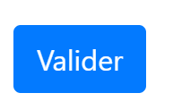
23.13.3.3. El fragmento [v-menu.php]
Este fragmento muestra un menú a la izquierda del formulario de cálculo del impuesto:

El código de este fragmento es el siguiente:
<!-- menú Bootstrap -->
<nav class="nav flex-column">
<?php
// visualización de una lista de enlaces HTML
foreach($modèle->optionsMenu as $texte=>$url){
print <<<EOT3
<a class="nav-link" href="$url">$texte</a>
EOT3;
}
?>
</nav>
Comentarios
- líneas 2-11: la etiqueta HTML [nav] enmarca una parte del documento HTML que presenta enlaces de navigation a otros documentos;
- línea 7: la etiqueta HTML [a] introduce un enlace a navigation:
- [$url]: es la URL a la que se navega al hacer clic en el enlace [$texte]. Se trata, por tanto, de una operación [GET $url] que realiza el navegador. Si [$url] es una URL relativa, entonces va precedida de la raíz de la URL que se muestra actualmente en la barra de direcciones del navegador. Así, para obtener el enlace [1], cuando el URL actual del navegador es del tipo [http://chemin/main.php?paramètres], se creará el enlace:
- línea 5: la plantilla [$modèle→optionsMenu] del fragmento será una tabla con el siguiente formato:
[‘ Liste des simulations’=>’main.php?action=liste-simulations’,
‘ Fin de session’=>’main.php?action=fin-session’]
- líneas 2, 7: las clases CSS y [nav, flex-column, nav-link] son clases de Bootstrap que definen el aspecto del menú;
23.13.3.4. Prueba visual
Reunimos estos diferentes elementos en la carpeta [Tests] y creamos una plantilla de prueba para la vista [vue-calcul-impot.php]:

El modelo de datos de la vista [vue-calcul-impot] será el siguiente:
<?php
// datos de prueba de la página
//
// se calcula la plantilla de la vista
$modèle = getModelForThisView();
function getModelForThisView(): object {
// se encapsulan los datos de la página en $modèle
$modèle = new \stdClass();
// formulario
$modèle->checkedOui = "";
$modèle->checkedNon = 'checked="checked"';
$modèle->enfants = 2;
$modèle->salaire = 300000;
// mensaje de éxito
$modèle->success = TRUE;
$modèle->impôt = "Montant de l'impôt : 1000 euros";
$modèle->décôte = "Décôte : 15 euros";
$modèle->réduction = "Réduction : 20 euros";
$modèle->surcôte = "Surcôte : 0 euros";
$modèle->taux = "Taux d'imposition : 14 %";
// mensaje de error
$modèle->error = TRUE;
$erreurs = ["erreur1", "erreur2"];
// se crea una lista HTML de los errores
$content = "";
foreach ($erreurs as $erreur) {
$content .= "<li>$erreur</li>";
}
$modèle->erreurs = $content;
// menú
$modèle->optionsMenu = [
'Lista de simulaciones' => 'main.php?action=lista-simulaciones',
'«Fin de sesión» => 'main.php?action=fin-session'];
// imagen del banner
$modèle->logo = "http://localhost/php7/scripts-web/impots/version-12/Tests/logo.jpg";
// se muestra la plantilla
return $modèle;
}
?>
<!-- documento HTML -->
<!doctype html>
<html lang="fr">
<head>
…
</head>
<body>
…
</body>
</html>
Comentarios
- líneas 7-39: se inicializan todas las partes dinámicas de la vista [vue-calcul-impot.php] y de los fragmentos [v-calcul-impot.php] y [v-menu.php];
Se comprueba la vista [vue-calcul-impot.php]:

Se obtiene el siguiente resultado:

Trabajamos en esta vista hasta que el resultado visual nos satisfaga. A continuación, podemos pasar a la integración de la vista en la aplicación web que estamos desarrollando.
23.13.3.5. Cálculo del modelo de la vista
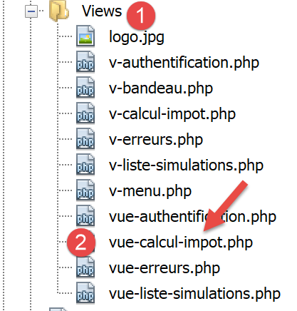
Una vez determinado el aspecto visual de la vista, podemos proceder al cálculo del modelo de la vista en condiciones reales. Recordemos los códigos de estado que conducen a esta vista. Se encuentran en el archivo de configuración:
"vues": {
"vue-authentification.php": [700, 221, 400],
"vue-calcul-impot.php": [200, 300, 341, 350, 800],
"vue-liste-simulations.php": [500, 600]
},
"vue-erreurs": "vue-erreurs.php"
Por lo tanto, son los códigos de estado [200, 300, 341, 350, 800] los que hacen que se muestre la vista de autenticación. Para averiguar el significado de estos códigos, podemos ayudarnos de las pruebas [Postman] realizadas en la aplicación jSON:
- [authentifier-utilisateur-200]: 200 es el código de estado tras una acción [authentifier-itilisateur] realizada con éxito: se muestra entonces el formulario de cálculo de impuestos vacío;
- [calculer-impot-300]: 300 es el código de estado tras una acción [calculer-impot] realizada con éxito. A continuación, se muestra el formulario de cálculo con los datos introducidos y el importe del impuesto. El usuario puede entonces realizar otro cálculo;
- [fin-session-400]: 400 es el código de estado tras una acción [fin-session] realizada con éxito: a continuación, se muestra el formulario de autenticación vacío;
- el código de estado [341] es el que se obtiene para un cálculo de impuestos válido, pero la falta de conexión a SGBD provoca un error;
- el código de estado [350] es el que se obtiene para un cálculo de impuestos válido, pero la falta de conexión al servidor [Redis] provoca un error;
- el código de estado [800] se presentará más adelante. Todavía no lo hemos encontrado;
- aquí se ha partido de la hipótesis de que el usuario utiliza un navegador reciente. Así, con el formulario estudiado, no es posible introducir números negativos, cadenas de caracteres no numéricos ni números decimales en los campos de entrada [enfants, salaire]. Con navegadores más antiguos, esto sería posible. Trataremos estos errores como errores inesperados y, a continuación, mostraremos la vista [vue-erreurs];
Ahora que sabemos en qué momentos debe mostrarse el formulario de cálculo del impuesto, podemos calcular su modelo en [vue-calcul-impot.php]:
<?php
// se heredan las siguientes variables
// Solicitud $request: la solicitud en curso
// Sesión $session: la sesión de la aplicación
// array $config: la configuración de la aplicación
// array $content: la respuesta del controlador que procesó la acción
//
// dependencias de Symfony
use Symfony\Component\HttpFoundation\Request;
use Symfony\Component\HttpFoundation\Session\Session;
// se calcula el modelo de la vista
$modèle = getModelForThisView($request, $session, $config, $content);
function getModelForThisView(Request $request, Session $session, array $config, array $content): object {
//: se encapsulan los datos de la página en $modèle
$modèle = new \stdClass();
// estado de la aplicación
$état = $content["état"];
// el modelo depende del estado
switch ($état) {
case 200 :
case 800:
// visualización inicial de un formulario vacío
$modèle->success = FALSE; $modèle->errror = FALSE;
$modèle->checkedNon = 'checked="checked"';
$modèle->checkedOui = "";
$modèle->enfants = "";
$modèle->salaire = "";
break;
case 300:
// cálculo correcto: visualización del resultado
$modèle->success = TRUE;
$modèle->error = FALSE;
$modèle->impôt = "Montant de l'impôt : {$content["réponse"]["impôt"]} euros";
$modèle->décôte = "Décôte : {$content["réponse"]["décôte"]} euros";
$modèle->réduction = "Réduction : {$content["réponse"]["réduction"]} euros";
$modèle->surcôte = "Surcôte : {$content["réponse"]["surcôte"]} euros";
$modèle->taux = "Taux d'imposition : " . ($content["réponse"]["taux"] * 100) . " %";
// formulario restablecido con los valores introducidos
$modèle->checkedOui = $request->request->get("marié") === "oui" ? 'checked="checked"' : "";
$modèle->checkedNon = $request->request->get("marié") === "oui" ? "" : 'checked="checked"';
$modèle->enfants = $request->request->get("enfants");
$modèle->salaire = $request->request->get("salaire");
break;
case 341:
// base de datos HS
case 350:
// servidor Redis HS
// formulario restablecido con los valores introducidos
$modèle->checkedOui = $request->request->get("marié") === "oui" ? 'checked="checked"' : "";
$modèle->checkedNon = $request->request->get("marié") === "oui" ? "" : 'checked="checked"';
$modèle->enfants = $request->request->get("enfants");
$modèle->salaire = $request->request->get("salaire");
// error
$modèle->success = FALSE;
$modèle->error = TRUE;
$modèle->erreurs = "<li>{$content["réponse"]}</li>";
break;
}
//menú
$modèle->optionsMenu = [
"Liste des simulations" => "main.php?action=lister-simulations",
"Fin de session" => "main.php?action=fin-session"];
// se devuelve la plantilla
return $modèle;
}
?>
<!-- documento HTML -->
<!doctype html>
<html lang="fr">
<head>
…
<title>Application impots</title>
</head>
<body>
…
</body>
</html>
Comentarios
- líneas 22-30: visualización de un formulario en blanco;
- líneas 31-45: caso de cálculo de impuestos correcto. Se vuelven a mostrar los valores introducidos, así como el importe del impuesto;
- líneas 46-59: caso de error en el cálculo del impuesto debido a la indisponibilidad de uno de los servidores [Redis] o [MySQL];
- líneas 62-64: cálculo de las dos opciones del menú;
23.13.3.6. Pruebas [Postman]
La prueba [calculer-impot-300] nos permite obtener el código de estado 300. Corresponde a un cálculo de impuestos correcto:

- en [3], los valores que han dado lugar al resultado [2];
Probemos un caso de error: el error [350] debido a la indisponibilidad del servidor [Redis]:

23.13.4. La vista de la lista de simulaciones
23.13.4.1. Presentación de la vista
La vista que muestra la lista de simulaciones es la siguiente:

La vista generada por el script [vue-liste-simulations] consta de tres partes:
- 1: la barra superior es generada por el fragmento [v-bandeau.php] ya presentado;
- 2: la tabla de simulaciones generada por el fragmento [v-liste-simulations.php];
- 3: un menú con dos enlaces, generado por el fragmento [v-menu.php];
La vista de las simulaciones se genera mediante el siguiente script [vue-liste-simulations.php]:

<?php
// se calcula la plantilla de la vista
$modèle = getModelForThisView();
function getModelForThisView(Request $request, Session $session, array $config, array $content): object {
// se encapsulan los datos de la página en $modèle
$modèle = new \stdClass();
…
// se genera la plantilla
return $modèle;
}
?>
<!-- documento HTML -->
<!doctype html>
<html lang="fr">
<head>
<!-- Etiquetas meta obligatorias -->
<meta charset="utf-8">
<meta name="viewport" content="width=device-width, initial-scale=1, shrink-to-fit=no">
<!-- Bootstrap CSS -->
<link rel="stylesheet" href="https://stackpath.bootstrapcdn.com/bootstrap/4.1.3/css/bootstrap.min.css" integrity="sha384-MCw98/SFnGE8fJT3GXwEOngsV7Zt27NXFoaoApmYm81iuXoPkFOJwJ8ERdknLPMO" crossorigin="anonymous">
<title>Application impots</title>
</head>
<body>
<div class="container">
<!-- cabecera -->
<?php require "v-bandeau.php"; ?>
<!-- línea de dos columnas -->
<div class="row">
<!-- menú de tres columnas-->
<div class="col-md-3">
<?php require "v-menu.php" ?>
</div>
<!-- lista de simulaciones en 9 columnas-->
<div class="col-md-9">
<?php require "v-liste-simulations.php" ?>
</div>
</div>
</div>
</body>
</html>
Comentarios
- línea 28: inclusión del banner de la aplicación [1];
- línea 33: inclusión del menú [2]. Se mostrará en tres columnas debajo del banner;
- línea 37: inclusión de la tabla de simulaciones [3]. Se mostrará en nueve columnas debajo del banner y a la derecha del menú;
Ya hemos comentado dos de los tres fragmentos de esta vista:
El fragmento [v-liste-simulations.php] es el siguiente:
<!-- mensaje sobre fondo azul -->
<div class="alert alert-primary" role="alert">
<h4>Liste de vos simulations</h4>
</div>
<!-- tabla de simulaciones -->
<table class="table table-sm table-hover table-striped">
<!-- encabezados de las seis columnas de la tabla -->
<thead>
<tr>
<th scope="col">#</th>
<th scope="col">Marié</th>
<th scope="col">Nombre d'enfants</th>
<th scope="col">Salaire annuel</th>
<th scope="col">Montant impôt</th>
<th scope="col">Surcôte</th>
<th scope="col">Décôte</th>
<th scope="col">Réduction</th>
<th scope="col">Taux</th>
<th scope="col"></th>
</tr>
</thead>
<!-- cuerpo de la tabla (datos mostrados) -->
<tbody>
<?php
$i = 0;
// se muestra cada simulación recorriendo la tabla de simulaciones
foreach ($modèle->simulations as $simulation) {
// visualización de una fila de la tabla con 6 columnas - etiqueta <tr>
// columna 1: encabezado de fila (n.º de simulación) - etiqueta <th scope='row'>
// columna 2: valor del parámetro [marié] - etiqueta <td>
// columna 3: valor del parámetro [enfants] - etiqueta <td>
// columna 4: valor del parámetro [salaire] - etiqueta <td>
// columna 5: valor del parámetro [impôt] (del impuesto) - etiqueta <td>
// columna 6: valor del parámetro [surcôte] - etiqueta <td>
// columna 7: valor del parámetro [décôte] - etiqueta <td>
// columna 8: valor del parámetro [réduction] - etiqueta <td>
// columna 9: valor del parámetro [taux] (del impuesto) - etiqueta <td>
// columna 10: enlace para eliminar la simulación - etiqueta <td>
print <<<EOT
<tr>
<th scope="row">$i</th>
<td>{$simulation["marié"]}</td>
<td>{$simulation["enfants"]}</td>
<td>{$simulation["salaire"]}</td>
<td>{$simulation["impôt"]}</td>
<td>{$simulation["surcôte"]}</td>
<td>{$simulation["décôte"]}</td>
<td>{$simulation["réduction"]}</td>
<td>{$simulation["taux"]}</td>
<td><a href="main.php?action=supprimer-simulation&numéro=$i">Supprimer</a></td>
</tr>
EOT;
$i++;
}
?>
</tr>
</tbody>
</table>
Comentarios
- una tabla HTML se crea con la etiqueta <table> (líneas 6 y 58);
- los encabezados de las columnas de la tabla se crean dentro de una etiqueta <thead> (table head, líneas 8 y 21). La etiqueta <tr> (table row, líneas 9 y 20) delimita una fila. Líneas 10-15, la etiqueta <th> (table header) define un encabezado de columna. Por lo tanto, hay diez. [scope="col"] indica que el encabezado se aplica a la columna. [scope="row"] indica que el encabezado se aplica a la fila;
- líneas 23-57: la etiqueta <tbody> enmarca los datos mostrados por la tabla;
- líneas 40-51: la etiqueta <tr> enmarca una fila de la tabla;
- línea 41: la etiqueta <th scope=’row’> define el encabezado de la línea;
- líneas 42-50: cada etiqueta <td> define una columna de la fila;
- línea 27: la lista de simulaciones se encuentra en el modelo [$modèle→simulations], que es una tabla asociativa;
- línea 50: un enlace para eliminar la simulación. El URL recoge el n.º que aparece en la primera columna de la tabla (línea 41);
23.13.4.2. Prueba visual
Reunimos estos diferentes elementos en la carpeta [Tests] y creamos una plantilla de prueba para la vista [vue-liste-simulations.php]:

El modelo de datos de la vista [vue-liste-simulations] será el siguiente:
<?php
// se calcula la plantilla de la vista
$modèle = getModelForThisView();
function getModelForThisView(): object {
// se encapsulan los datos de la página en $modèle
$modèle = new \stdClass();
// se adaptan las simulaciones al formato esperado por la página
$modèle->simulations = [
[
"marié" => "oui",
"enfants" => 2,
"salaire" => 60000,
"impôt" => 448,
"décôte" => 100,
"réduction" => 20,
"surcôte" => 0,
"taux" => 0.14
],
[
"marié" => "non",
"enfants" => 2,
"salaire" => 200000,
"impôt" => 25600,
"décôte" => 0,
"réduction" => 0,
"surcôte" => 8400,
"taux" => 0.45
]
];
// las opciones del menú
$modèle->optionsMenu = [
"Calcul de l'impôt" => "main.php?action=afficher-calcul-impot",
"Fin de session" => "main.php?action=fin-session"];
// imagen del banner
$modèle->logo = "http://localhost/php7/scripts-web/impots/version-12/Tests/logo.jpg";
// se genera la plantilla
return $modèle;
}
?>
<!-- documento HTML -->
<!doctype html>
<html lang="fr">
<head>
…
</head>
<body>
…
</body>
</html>
Comentarios
- líneas 9-30: la tabla de simulaciones mostrada por la tabla HTML;
- líneas 32-34: la tabla de opciones de menú;
Visualicemos esta vista:

Se obtiene el siguiente resultado:

Trabajamos en esta vista hasta que el resultado visual nos satisfaga. A continuación, podemos pasar a la integración de la vista en la aplicación web que estamos desarrollando.
23.13.4.3. Cálculo del modelo de la vista

Una vez determinado el aspecto visual de la vista, podemos proceder al cálculo del modelo de la vista en condiciones reales. Recordemos los códigos de estado que conducen a esta vista. Se encuentran en el archivo de configuración:
"vues": {
"vue-authentification.php": [700, 221, 400],
"vue-calcul-impot.php": [200, 300, 341, 350, 800],
"vue-liste-simulations.php": [500, 600]
},
"vue-erreurs": "vue-erreurs.php"
Por lo tanto, son los códigos de estado [500, 600] los que hacen que se muestre la vista de las simulaciones. Para averiguar el significado de estos códigos, podemos ayudarnos de las pruebas [Postman] realizadas en la aplicación jSON:
- [lister-simulations-500]: 500 es el código de estado tras una acción [lister-simulations] realizada con éxito: se muestra entonces la lista de simulaciones realizadas por el usuario;
- [supprimer-simulation-600]: 600 es el código de estado tras una acción [supprimer-simulation] realizada con éxito. A continuación, se muestra la nueva lista de simulaciones obtenida tras esta eliminación;
Ahora que sabemos en qué momentos debe mostrarse la lista de simulaciones, podemos calcular su modelo en [vue-liste-simulations.php]:
<?php
// se heredan las siguientes variables
// Solicitud $request: la solicitud en curso
// Sesión $session: la sesión de la aplicación
// array $config: la configuración de la aplicación
// array $content: la respuesta del controlador
// sin errores posibles
// array $content: respuesta del controlador
//
// dependencias de Symfony
use Symfony\Component\HttpFoundation\Request;
use Symfony\Component\HttpFoundation\Session\Session;
// se calcula el modelo de la vista
$modèle = getModelForThisView($request, $session, $config, $content);
function getModelForThisView(Request $request, Session $session, array $config, array $content): object {
// se encapsulan los datos de la página en $modèle
$modèle = new \stdClass();
// se adaptan las simulaciones al formato esperado por la página
// se encuentran en la respuesta del controlador que ha ejecutado la acción
// en forma de una matriz de objetos de tipo [Simulation]
$objetsSimulation = $content["réponse"];
// cada objeto [Simulation] se transformará en una tabla asociativa
$modèle->simulations = [];
foreach ($objetsSimulation as $objetSimulation) {
$modèle->simulations[] = [
"marié" => $objetSimulation->getMarié(),
"enfants" => $objetSimulation->getEnfants(),
"salaire" => $objetSimulation->getSalaire(),
"impôt" => $objetSimulation->getImpôt(),
"surcôte" => $objetSimulation->getSurcôte(),
"décôte" => $objetSimulation->getdécôte(),
"réduction" => $objetSimulation->getRéduction(),
"taux" => $objetSimulation->getTaux()
];
}
// las opciones del menú
$modèle->optionsMenu = [
"Calcul de l'impôt" => "main.php?action=afficher-calcul-impot",
"Fin de session" => "main.php?action=fin-session"];
// se genera la plantilla
return $modèle;
}
?>
<!-- documento HTML -->
<!doctype html>
<html lang="fr">
<head>
…
</head>
<body>
…
</body>
</html>
Comentarios
- líneas 26-36: cálculo del modelo [$modèle→simulations] utilizado por el fragmento [v-liste-simulations.php];
- líneas 39-41: cálculo del modelo [$modèle→optionsMenu] utilizado por el fragmento [v-menu.php];
23.13.4.4. Pruebas [Postman]
La prueba [lister-simulations-500] nos permite obtener el código de estado 500. Corresponde a una solicitud para ver las simulaciones:

La prueba [supprimer-simulation-600] nos permite obtener el código de estado 600. Corresponde a la eliminación correcta de la simulación n.º 0. El resultado devuelto es una lista de simulaciones con una simulación menos:

23.13.5. La vista de errores inesperados
En este contexto, se denomina «error inesperado» a un error que no debería haberse producido en el marco de un uso normal de la aplicación web.
Tomemos como ejemplo la prueba [Postman] [calculer-impot-3xx], definida de la siguiente manera:

- en [1-3], una solicitud POST con la acción [calculer-impot];
- en [4-6]: aquí se puede definir lo que se desee para los tres parámetros de POST:
- [4]: falta el parámetro [marié];
- [5-6]: los parámetros [enfants, salaire] están presentes pero son inválidos;
- En [9], estos tres errores se indican con el código de estado 338;
Sin embargo, en el formulario HTML de la aplicación web, este caso no puede darse:
- todos los parámetros están presentes;
- el parámetro [marié], que toma su valor de los atributos [value] de dos botones de radio, tiene necesariamente uno de los valores [oui] o [non];
- con un navegador reciente, los atributos <input type=’number’ min=’0’ step=’1’ …> hacen que los datos introducidos para los hijos y el salario sean necesariamente números enteros >=0;
Sin embargo, nada impide que un usuario seleccione [Postman] y envíe a nuestro servidor la prueba [calcul-impot-3xx] anterior. Hemos visto que nuestra aplicación web sabía responder correctamente a esta solicitud. Denominaremos «error inesperado» a un error que no debería producirse en el contexto de la aplicación HTML. Si se produce, es probable que alguien esté intentando «hackear» la aplicación. Con fines didácticos, hemos decidido mostrar una vista de errores para estos casos. En realidad, podríamos volver a mostrar la última página enviada al cliente. Para ello, basta con guardar en la sesión la última respuesta HTML enviada. En caso de error inesperado, devolvemos esta respuesta. De este modo, el usuario tendrá la impresión de que el servidor no responde a sus errores, ya que la página mostrada no cambia.
23.13.5.1. Presentación de la vista
La vista que muestra los errores inesperados es la siguiente:

La vista generada por el script [vue-erreurs.php] tiene tres partes:
- 1: la barra superior es generada por el fragmento [v-bandeau.php] ya presentado;
- 2: el error o los errores inesperados;
- 3: un menú con tres enlaces, generado por el fragmento [v-menu.php];
La vista de los errores inesperados se genera mediante el siguiente script [vue-erreurs.php]:

<?php
// se calcula la plantilla de la vista
$modèle = getModelForThisView();
function getModelForThisView(): object {
// se encapsulan los datos de la página en $modèle
$modèle = new \stdClass();
…
// se devuelve la plantilla
return $modèle;
}
?>
<!-- documento HTML -->
<!doctype html>
<html lang="fr">
<head>
<!-- Etiquetas meta obligatorias -->
<meta charset="utf-8">
<meta name="viewport" content="width=device-width, initial-scale=1, shrink-to-fit=no">
<!-- Bootstrap CSS -->
<link rel="stylesheet" href="https://stackpath.bootstrapcdn.com/bootstrap/4.1.3/css/bootstrap.min.css" integrity="sha384-MCw98/SFnGE8fJT3GXwEOngsV7Zt27NXFoaoApmYm81iuXoPkFOJwJ8ERdknLPMO" crossorigin="anonymous">
<title>Application impots</title>
</head>
<body>
<div class="container">
<!-- banner de 12 columnas -->
<?php require "v-bandeau.php"; ?>
<!-- línea de dos columnas -->
<div class="row">
<!-- menú de 3 columnas-->
<div class="col-md-3">
<?php require "v-menu.php" ?>
</div>
<!-- lista de errores -->
<div class="col-md-9">
<?php
print <<<EOT
<div class="alert alert-danger" role="alert">
Les erreurs inattendues suivantes se sont produites :
<ul>$modèle->erreurs</ul>
</div>
EOT;
?>
</div>
</div>
</div>
</body>
</html>
Comentarios
- línea 27: inclusión del banner de la aplicación [1];
- línea 32: inclusión del menú [2]. Se mostrará en tres columnas debajo del banner;
- líneas 34-44: visualización del área de errores en nueve columnas;
- líneas 37-44: la operación [print] que muestra los errores inesperados;
- línea 38: esta visualización se realizará en un marco Bootstrap con fondo rosa;
- línea 39: un texto de presentación;
- línea 40: la etiqueta <ul> enmarca una lista con viñetas. Esta lista con viñetas la proporciona la plantilla [$modèle->erreurs];
Ya hemos comentado los dos fragmentos de esta vista:
- [v-bandeau.php]: en el párrafo del enlace;
- [v-menu.php]: en el párrafo enlace;
23.13.5.2. Prueba visual
Reunimos estos diferentes elementos en la carpeta [Tests] y creamos una plantilla de prueba para la vista [vue-erreurs.php]:

El modelo de datos de la vista [vue-erreurs.php] será el siguiente:
<?php
// se calcula la plantilla de la vista
$modèle = getModelForThisView();
function getModelForThisView(): object {
// se encapsulan los datos de la página en $modèle
$modèle = new \stdClass();
// la tabla de errores inesperados
$erreurs = ["erreur1", "erreur2"];
// se construye la lista HTML de errores
$modèle->erreurs = "";
foreach ($erreurs as $erreur) {
$modèle->erreurs .= "<li>$erreur</li>";
}
// opciones del menú
$modèle->optionsMenu = [
"Calcul de l'impôt" => "main.php?action=afficher-calcul-impot",
"Liste des simulations" => "main.php?action=lister-simulations",
"Fin de session" => "main.php?action=fin-session",];
// imagen del banner
$modèle->logo = "http://localhost/php7/scripts-web/impots/version-12/Tests/logo.jpg";
// se devuelve la plantilla
return $modèle;
}
?>
<!-- documento HTML -->
<!doctype html>
<html lang="fr">
<head>
…
</head>
<body>
…
</body>
</html>
Comentarios
- líneas 9-15: construcción de la lista HTML de errores;
- líneas 17-20: la tabla de opciones del menú;
Mostramos esta vista:

Se obtiene el siguiente resultado:

Trabajamos en esta vista hasta que el resultado visual nos satisfaga. A continuación, podemos pasar a la integración de la vista en la aplicación web que estamos desarrollando.
23.13.5.3. Cálculo del modelo de la vista

Una vez determinado el aspecto visual de la vista, se puede proceder al cálculo del modelo de la vista en condiciones reales. Recordemos los códigos de estado que conducen a esta vista. Se encuentran en el archivo de configuración:
"vues": {
"vue-authentification.php": [700, 221, 400],
"vue-calcul-impot.php": [200, 300, 341, 350, 800],
"vue-liste-simulations.php": [500, 600]
},
"vue-erreurs": "vue-erreurs.php"
Por lo tanto, son los códigos de estado que no se encuentran en las líneas [2-4] los que hacen que se muestre la vista de errores inesperados.
El código de cálculo del modelo de la vista [vue-erreurs.php] es el siguiente:
<?php
// se heredan las siguientes variables
// Solicitud $request: la solicitud en curso
// Sesión $session: la sesión de la aplicación
// array $config: la configuración de la aplicación
// array $content: la respuesta del controlador
//
// dependencias de Symfony
use Symfony\Component\HttpFoundation\Request;
use Symfony\Component\HttpFoundation\Session\Session;
//: se calcula el modelo de la vista
$modèle = getModelForThisView($request, $session, $config, $content);
function getModelForThisView(Request $request, Session $session, array $config, array $content): object {
// se encapsulan los datos de la página en $modèle
$modèle = new \stdClass();
// se recuperan los errores de la respuesta del controlador
$réponse = $content["réponse"];
if (!is_array($réponse)) {
// un único mensaje de error
$erreurs = [$réponse];
} else {
// varios mensajes de error
$erreurs = $réponse;
}
// se crea la lista HTML de errores
$modèle->erreurs = "";
foreach ($erreurs as $erreur) {
$modèle->erreurs .= "<li>$erreur</li>";
}
// opciones del menú
$modèle->optionsMenu = [
"Calcul de l'impôt" => "main.php?action=afficher-calcul-impot",
"Liste des simulations" => "main.php?action=lister-simulations",
"Fin de session" => "main.php?action=fin-session",];
// se devuelve la plantilla
return $modèle;
}
?>
<!-- documento HTML -->
<!doctype html>
<html lang="fr">
<head>
…
</head>
<body>
…
</body>
</html>
Comentarios
- líneas 19-32: cálculo del modelo [$modèle→erreurs] utilizado por la vista [vue-erreurs.php];
- líneas 34-37: cálculo del modelo [$modèle→optionsMenu] utilizado por el fragmento [v-menu.php];
23.13.5.4. Pruebas [Postman]
La prueba [calculer-impot-3xx] nos permite obtener el código de estado 338, que no es un código de estado esperado. La respuesta HTML es entonces la siguiente:

23.13.6. Implementación de las acciones del menú de la aplicación
Aquí trataremos la implementación de las acciones del menú. Recordemos el significado de los enlaces que hemos encontrado
Vista | Enlace | Destino | Función |
Cálculo del impuesto | [Liste des simulations] | [main.php?action=lister-simulations] | Solicitar la lista de simulaciones |
[Fin de session] | |||
Lista de simulaciones | [Calcul de l’impôt] | [main.php?action=afficher-calcul-impot] | Mostrar la vista del cálculo de impuestos |
[Fin de session] | |||
Errores inesperados | [Calcul de l’impôt] | [main.php?action=afficher-calcul-impot] | Mostrar la vista del cálculo de impuestos |
[Liste des simulations] | |||
[Fin de session] |
Cabe recordar que al hacer clic en un enlace se genera un GET hacia el destino del enlace. Las acciones [lister-simulations, fin-session] se han implementado con una operación GET, lo que nos permite utilizarlas como destinos de enlaces. Cuando la acción se realiza mediante un POST, ya no es posible utilizar un enlace, salvo que se asocie con un Javascript.
De las acciones anteriores, se desprende que la acción [afficher-calcul-impot] aún no se ha implementado. Se trata de una operación de navigation entre dos vistas: el servidor jSON o XML no tiene motivo para implementarla, ya que no tienen el concepto de vista. Es el servidor HTML el que introduce este concepto.
Por lo tanto, debemos implementar la acción [afficher-calcul-impot]. Esto nos permitirá revisar el procedimiento de implementación de una acción dentro del servidor.
En primer lugar, debemos añadir un nuevo controlador secundario. Lo llamaremos [AfficherCalculImpotController]:

Este controlador debe añadirse al archivo de configuración [config.json]:
{
"databaseFilename": "database.json",
"rootDirectory": "C:/myprograms/laragon-lite/www/php7/scripts-web/impots/version-12",
"relativeDependencies": [
…
"/Controllers/InterfaceController.php",
"/Controllers/InitSessionController.php",
"/Controllers/ListerSimulationsController.php",
"/Controllers/AuthentifierUtilisateurController.php",
"/Controllers/CalculerImpotController.php",
"/Controllers/SupprimerSimulationController.php",
"/Controllers/FinSessionController.php",
"/Controllers/AfficherCalculImpotController.php"
],
"absoluteDependencies": [
"C:/myprograms/laragon-lite/www/vendor/autoload.php",
"C:/myprograms/laragon-lite/www/vendor/predis/predis/autoload.php"
],
…
"actions":
{
"init-session": "\\InitSessionController",
"authentifier-utilisateur": "\\AuthentifierUtilisateurController",
"calculer-impot": "\\CalculerImpotController",
"lister-simulations": "\\ListerSimulationsController",
"supprimer-simulation": "\\SupprimerSimulationController",
"fin-session": "\\FinSessionController",
"afficher-calcul-impot": "\\AfficherCalculImpotController"
},
…
"vues": {
"vue-authentification.php": [700, 221, 400],
"vue-calcul-impot.php": [200, 300, 341, 350, 800],
"vue-liste-simulations.php": [500, 600]
},
"vue-erreurs": "vue-erreurs.php"
}
- línea 15: el nuevo controlador;
- línea 30: la nueva acción y su controlador;
- línea 35: el nuevo controlador devolverá el código de estado 800. Al cambiar de vista, no puede haber ningún error;
El controlador [AfficherCalculImpotController.php] será el siguiente:
<?php
namespace Application;
// dependencias de Symfony
use Symfony\Component\HttpFoundation\Request;
use Symfony\Component\HttpFoundation\Session\Session;
use Symfony\Component\HttpFoundation\Response;
class AfficherCalculImpotController implements InterfaceController {
// $config es la configuración de la aplicación
// procesamiento de una solicitud Request
// utiliza la sesión Session y puede modificarla
// $infos son datos adicionales específicos de cada controlador
// devuelve una matriz [$statusCode, $état, $content, $headers]
public function execute(
array $config,
Request $request,
Session $session,
array $infos = NULL): array {
// cambio de vista: solo hay que establecer un código de estado
return [Response::HTTP_OK, 800, ["réponse" => ""], []];
}
}
Comentarios
- línea 10: al igual que los demás controladores secundarios, el nuevo controlador implementa la interfaz [InterfaceController];
- los cambios de vista son fáciles de implementar: basta con establecer el código de estado asociado a la vista de destino, en este caso el código 800, como se ha visto anteriormente;
23.13.7. Pruebas en condiciones reales
El código ya está escrito y se ha probado cada acción con [Postman]. Ahora nos queda probar la secuencia de vistas en condiciones reales. Necesitamos una forma de inicializar la sesión HTML. Sabemos que hay que enviar al servidor los parámetros [action=init-session&type=html]. Para evitar tener que escribirlos en la barra de direcciones del navegador, vamos a añadir el script [index.php] a nuestra aplicación:

El script [index.php] será el siguiente:
<?php
// redirección a [main.php] en modo [html]
header('Location: main.php?action=init-session&type=html');
- línea 4: [header] es una función PHP que añade un encabezado HTTP a la respuesta. El encabezado HTTP [Location: main.php?action=init-session&type=html] solicita al navegador del cliente que se redirija al destino URL indicado en [Location]. Se solicita el script [index.php] con el URL [http://localhost/php7/scripts-web/impots/version-12/index.php]. Cuando el navegador del cliente reciba la redirección a URL relativa a [main.php?action=init-session&type=html], solicitará el URL absoluto [http://localhost/php7/scripts-web/impots/version-12/main.php?action=init-session&type=html] y se iniciará la sesión HTML;
La URL de inicio se puede simplificar a [http://localhost/php7/scripts-web/impots/version-12/]. En caso de que no se especifique ninguna página en URL, se utilizarán por defecto las páginas [index.html, index.php]. Por lo tanto, aquí se utilizará el script [index.php];
Vamos allá: ahora presentamos algunas secuencias de vistas.
En nuestro navegador, activamos el seguimiento de solicitudes (F12 en Firefox) y solicitamos el URL de inicio [https://localhost/php7/scripts-web/impots/version-12/]:

- en [4], la primera respuesta del servidor es una redirección 302:
- en [5], se realiza una nueva solicitud al URL [http://localhost/php7/scripts-web/impots/13/main.php?action=init-session&type=html];
Veamos más de cerca la redirección 302:

- en [8], el código HTTP [302] es un código de redireccionamiento: se le indica al navegador cliente que la URL solicitada ha sido reubicada. La nueva URL se especifica en [9]. El navegador seguirá esta redirección con una nueva solicitud GET:

- en [12-13], la nueva solicitud realizada por el navegador;
Rellenemos el formulario que hemos recibido;

A continuación, hagamos algunas simulaciones:


Solicitemos la lista de simulaciones:

Eliminemos la primera simulación:

Terminemos la sesión:

Se invita al lector a realizar otras pruebas.
23.14. Cliente del servicio web jSON
23.14.1. Arquitectura cliente/servidor

Ahora nos centramos en el cliente jSON [A] del servicio web [B]. El cliente [A], al igual que el servicio web [B], tiene una estructura por capas:

Esta arquitectura se refleja en la siguiente organización del código:

La mayoría de las clases ya se han visto y explicado:
párrafo enlace. | |
párrafo enlace. | |
párrafo enlace. | |
párrafo enlace. | |
párrafo enlace. | |
párrafo enlace. |
23.14.2. La capa [dao]
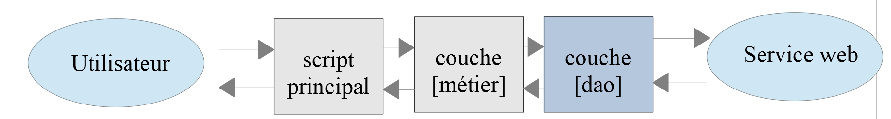
23.14.2.1. Interfaz
La interfaz de la capa [dao] será la siguiente [InterfaceClientDao.php]:
<?php
// espacio de nombres
namespace Application;
interface InterfaceClientDao {
// lectura de los datos de los contribuyentes
public function getTaxPayersData(string $taxPayersFilename, string $errorsFilename): array;
// cálculo de los impuestos de un contribuyente
public function calculerImpot(string $marié, int $enfants, int $salaire): Simulation;
// registro de resultados
public function saveResults(string $resultsFilename, array $simulations): void;
// autenticación
public function authentifierUtilisateur(String $user, string $password): void;
// lista de simulaciones
public function listerSimulations(): array;
// eliminar una simulación
public function supprimerSimulation(int $numéro): array;
// Inicio de sesión
public function initSession(string $type = 'json'): void;
// fin de sesión
public function finSession(): void;
}
Comentarios
- línea 9: el método [getTaxPayersData] permite procesar el archivo jSON con los datos de los contribuyentes. Este método está implementado por la función [TraitDao] ya comentada (apartado enlace);
- línea 15: el método [saveResults] permite guardar los resultados de varios cálculos de impuestos en un archivo jSON. También en este caso, este método se implementa mediante el rasgo [TraitDao] ya comentado (párrafo enlace);
- líneas 12, 18, 21, 27, 30: se ha creado un método para cada una de las acciones aceptadas por el servicio web;
23.14.2.2. Implementación
La interfaz [InterfaceClientDao] se implementa mediante la siguiente clase [ClientDao]:
<?php
namespace Application;
// dependencias
use Symfony\Component\HttpClient\HttpClient;
use Symfony\Component\HttpClient\Response\CurlResponse;
class ClientDao implements InterfaceClientDao {
// uso de un Trait
use TraitDao;
// atributos
private $urlServer;
private $sessionCookie;
private $verbose;
// constructor
public function __construct(string $urlServer, bool $verbose = TRUE) {
$this->urlServer = $urlServer;
$this->verbose = $verbose;
}
…
}
Comentarios
- líneas 18-21: el constructor recibe dos parámetros:
- el URL [$urlServer] del servicio web jSON;
- un valor booleano [$verbose] que, en TRUE, indica que la clase debe mostrar las respuestas del servidor en la consola;
- línea 14: la cookie de sesión. Su función se ha descrito en el version 09 del cliente (párrafo enlace);
- línea 11: la clase utiliza el trait [TraitDao], que implementa dos métodos de la interfaz:
- [getTaxPayersData(string $taxPayersFilename, string $errorsFilename): array];
- [function calculerImpot(string $marié, int $enfants, int $salaire): Simulation];
23.14.2.2.1. Método [initSession]
El método [initSession] se implementa de la siguiente manera:
public function initSession(string $type = 'json'): void {
// se crea un cliente HTTP
$httpClient = HttpClient::create();
// se envía la solicitud al servidor sin autenticación
$response = $httpClient->request('GET', $this->urlServer,
["query" => [
"action" => "init-session",
"type" => $type
],
"verify_peer" => false
]);
// se recupera la respuesta
$this->getResponse($response);
// se recupera la cookie de sesión
$headers = $response->getHeaders();
if (isset($headers["set-cookie"])) {
// ¿cookie de sesión?
foreach ($headers["set-cookie"] as $cookie) {
$match = [];
$match = preg_match("/^PHPSESSID=(.+?);/", $cookie, $champs);
if ($match) {
$this->sessionCookie = "PHPSESSID=" . $champs[1];
}
}
}
}
Dado que la acción [init-session] debe ser la primera acción solicitada al servicio web, el método [initSession] será el primer método de la capa [dao] que se invocará.
Comentarios
- línea 1: se pasa como parámetro el tipo de sesión deseado. A falta de parámetro, se iniciará una sesión jSON;
- líneas 5-11: se realiza una solicitud GET al servicio web;
- líneas 7-8: los dos parámetros de GET;
- línea 10: en caso de comunicaciones seguras (esquema https), no se verificará el certificado de seguridad enviado por el servicio web;
- línea 13: el método [getResponse] recupera la respuesta del servidor. La devuelve en forma de matriz. En este caso, no se utiliza el resultado del método. El método [getResponse] lanza una excepción si el código HTTP de la respuesta del servicio web es distinto de 200 OK;
- líneas 14-25: dado que el método [initSession] es el primer método de la capa [dao] que se ejecuta, se recupera la cookie de sesión para que los métodos siguientes puedan reenviarla al servicio web. Este código ya se ha comentado en el version 09;
23.14.2.2.2. El método [getResponse]
El método [getResponse] se encarga de procesar la respuesta del servicio web:
private function getResponse(CurlResponse $response) {
// se recupera la respuesta
$json = $response->getContent(false);
// registros
if ($this->verbose) {
print "$json\n";
}
// se recupera el estado de la respuesta
$statusCode = $response->getStatusCode();
// ¿error?
if ($statusCode !== 200) {
// hay un error
throw new ExceptionImpots($json);
}
// se devuelve la respuesta
$array = json_decode($json, true);
return $array["réponse"];
}
Comentarios
- línea 1: el método es privado;
- línea 1: el parámetro del método es la respuesta del servicio web de tipo [Symfony\Component\HttpClient\Response\CurlResponse], el tipo de respuesta de Symfony, cuando [HttpClient] es implementado por [CurlClient], es decir, por la biblioteca [curl];
- línea 3: se recupera la respuesta jSON del servidor. Recordemos que el parámetro [false] está ahí para evitar que Symfony lance una excepción cuando el estado de la respuesta HTTP del servidor se encuentra en el dominio [3xx, 4xx, 5xx];
- líneas 5-7: si estamos en modo [$verbose], mostramos la respuesta del servidor en la consola;
- líneas 9-14: si el estado de la respuesta HTTP del servidor es distinto de 200, se lanza una excepción con el mensaje de error de la respuesta jSON del servidor;
- línea 16: la cadena jSON se descodifica en una matriz;
- línea 17: la información útil se encuentra en [$array["réponse"]];
23.14.2.2.3. El método [authentifierUtilisateur]
El método [authentifierUtilisateur] es el siguiente:
public function authentifierUtilisateur(string $user, string $password): void {
// se crea un cliente HTTP
$httpClient = HttpClient::create();
// se envía la solicitud al servidor con autenticación
$response = $httpClient->request('POST', $this->urlServer,
["query" => [
"action" => "authentifier-utilisateur"
],
"body" => [
"user" => $user,
"password" => $password
],
"verify_peer" => false,
"headers" => ["Cookie" => $this->sessionCookie]
]);
// se recupera la respuesta
$this->getResponse($response);
}
Comentarios
- línea 5: la solicitud del cliente es un POST;
- líneas 6-8: parámetros en el URL;
- líneas 9-12: parámetros del POST;
- línea 14: la cookie de sesión;
- línea 17: se lee la respuesta. Sabemos que, en caso de error (código HTTP distinto de 200), el método [getResponse] lanza él mismo una excepción;
23.14.2.2.4. El método [calculerImpot]
public function calculerImpot(string $marié, int $enfants, int $salaire): Simulation {
// se crea un cliente HTTP
$httpClient = HttpClient::create();
// se envía la solicitud al servidor sin autenticación, pero con la cookie de sesión
$response = $httpClient->request('POST', $this->urlServer,
["query" => [
"action" => "calculer-impot"],
"body" => [
"marié" => $marié,
"enfants" => $enfants,
"salaire" => $salaire
],
"verify_peer" => false,
"headers" => ["Cookie" => $this->sessionCookie]
]);
// se recupera la respuesta
$array = $this->getResponse($response);
return (new Simulation())->setFromArrayOfAttributes($array);
}
Comentarios
- líneas 6-7: el único parámetro de URL;
- líneas 8-12: los tres parámetros de POST (línea 5);
- línea 17: se procesa la respuesta;
- línea 18: si llegamos hasta aquí es porque el método [getResponse] no ha lanzado ninguna excepción. Se devuelve un objeto [Simulation] inicializado con la matriz devuelta por [getResponse];
23.14.2.2.5. El método [listerSimulations]
public function listerSimulations(): array {
// se crea un cliente HTTP
$httpClient = HttpClient::create();
// se envía la solicitud al servidor sin autenticación, pero con la cookie de sesión
$response = $httpClient->request('GET', $this->urlServer,
["query" => [
"action" => "lister-simulations"
],
"verify_peer" => false,
"headers" => ["Cookie" => $this->sessionCookie]
]);
// se recupera la respuesta
return $this->getSimulations($response);
}
Comentarios
- línea 5: método GET;
- líneas 6-8: el único parámetro de GET;
- línea 13: la recuperación de las simulaciones se confía al método privado [getSimulations];
23.14.2.2.6. El método [getSimulations]
private function getSimulations(CurlResponse $response): array {
// se recupera la respuesta JSON
$array = $this->getResponse($response);
// tenemos una matriz de objetos asociativos
// vamos a convertirlo en una matriz de objetos Simulación
$simulations = [];
foreach ($array as $simulation) {
$simulations [] = (new Simulation())->setFromArrayOfAttributes($simulation);
}
// se devuelve la lista de objetos Simulación
return $simulations;
}
Comentarios
- línea 3: se recupera la matriz resultante de la respuesta. Se trata de una matriz de matrices, cada una de las cuales tiene todos los atributos de un objeto [Simulation];
- línea 6: si llegamos hasta aquí, es porque el método [getResponse] no ha lanzado ninguna excepción;
- líneas 6-9: se utiliza la respuesta para construir una matriz de objetos [Simulation];
- línea 11: se devuelve esta matriz;
23.14.2.2.7. El método [SupprimerSimulation]
public function supprimerSimulation(int $numéro): array {
// creamos un cliente HTTP
$httpClient = HttpClient::create();
// enviamos la solicitud al servidor sin autenticación, pero con la cookie de sesión
$response = $httpClient->request('GET', $this->urlServer,
["query" => [
"action" => "supprimer-simulation",
"numéro" => $numéro
],
"verify_peer" => false,
"headers" => ["Cookie" => $this->sessionCookie]
]);
// se recupera la respuesta
return $this->getSimulations($response);
}
Comentarios
- línea 5: se realiza una consulta GET;
- líneas 6-9: los dos parámetros de URL;
- línea 14: tras una eliminación, el servidor devuelve la nueva tabla de simulaciones. Se devuelve esta tabla;
23.14.2.2.8. El método [finSession]
Una sesión de trabajo con el servicio web suele terminar con la llamada al método [finSession]:
public function finSession(): void {
// se crea un cliente HTTP
$httpClient = HttpClient::create();
// se envía la solicitud al servidor sin autenticación, pero con la cookie de sesión
$response = $httpClient->request('GET', $this->urlServer,
["query" => [
"action" => "fin-session"
],
"verify_peer" => false,
"headers" => ["Cookie" => $this->sessionCookie]
]);
// se recupera la respuesta
$this->getResponse($response);
}
Comentarios
- línea 5: se realiza una solicitud GET;
- líneas 6-8: el único parámetro de URL;
- línea 13: se lee la respuesta. Se lanzará una excepción si el código HTTP de la respuesta es distinto de 200;
23.14.3. La capa [métier]

23.14.3.1. La interfaz
La interfaz de la capa [métier] es la siguiente [InterfaceClientMetier.php]:
<?php
// espacio de nombres
namespace Application;
interface InterfaceClientMetier {
// cálculo de los impuestos de un contribuyente
public function calculerImpot(string $marié, int $enfants, int $salaire): Simulation;
// cálculo de impuestos en modo batch
public function executeBatchImpots(string $taxPayersFileName, string $resultsFilename, string $errorsFileName): void;
// autenticación
public function authentifierUtilisateur(String $user, string $password): void;
// lista de simulaciones
public function listerSimulations(): array;
// registro de resultados
public function saveResults(string $resultsFilename, array $simulations): void;
// eliminar una simulación
public function supprimerSimulation(int $numéro): array;
// inicio de sesión
public function initSession(string $type = 'json'): void;
// fin de sesión
public function finSession(): void;
}
Comentarios
- solo el método [executeBatchImpots] de la línea 12 es específico de la capa [métier]. Todos los demás pertenecen a la capa [dao], que los implementa;
23.14.3.2. La clase [ClientMetier]
La clase que implementa la capa [métier] es la siguiente:
<?php
namespace Application;
class ClientMetier implements InterfaceClientMetier {
// atributo
private $clientDao;
// fabricante
public function __construct(InterfaceClientDao $clientDao) {
$this->clientDao = $clientDao;
}
// cálculo de impuestos
public function calculerImpot(string $marié, int $enfants, int $salaire): Simulation {
return $this->clientDao->calculerImpot($marié, $enfants, $salaire);
}
// cálculo de impuestos en modo batch
public function executeBatchImpots(string $taxPayersFileName, string $resultsFileName, string $errorsFileName): void {
// se permiten excepciones procedentes de la capa [dao]
// se recuperan los datos de los contribuyentes
$taxPayersData = $this->clientDao->getTaxPayersData($taxPayersFileName, $errorsFileName);
// tabla de resultados
$simulations = [];
// se procesan
foreach ($taxPayersData as $taxPayerData) {
// se calcula el impuesto
$simulations [] = $this->calculerImpot(
$taxPayerData->getMarié(),
$taxPayerData->getEnfants(),
$taxPayerData->getSalaire());
}
// registro de los resultados
if ($resultsFileName !== NULL) {
$this->clientDao->saveResults($resultsFileName, $simulations);
}
}
public function authentifierUtilisateur(String $user, string $password): void {
$this->clientDao->authentifierUtilisateur($user, $password);
}
public function listerSimulations(): array {
return $this->clientDao->listerSimulations();
}
public function saveResults(string $resultsFilename, array $simulations): void {
$this->clientDao->saveResults($resultsFilename, $simulations);
}
public function supprimerSimulation(int $numéro): array {
return $this->clientDao->supprimerSimulation($numéro);
}
public function finSession(): void {
$this->clientDao->finSession();
}
public function initSession(string $type = 'json'): void {
$this->clientDao->initSession($type);
}
}
Comentarios
- líneas 10-12: para crearse, la capa [métier] necesita una referencia a la capa [dao];
- líneas 20-38: solo el método [executeBatchImpots] es específico de la capa [métier]. La implementación de los demás métodos delega el trabajo a realizar a los métodos del mismo nombre en la capa [dao];
- línea 23: se recurre a la capa [dao] para obtener, en una tabla de objetos de tipo [TaxPayerData], los datos de los contribuyentes;
- línea 25: se acumulan en la tabla [$simulations] las diferentes simulaciones calculadas;
- líneas 27-33: se calcula el impuesto de cada uno de los contribuyentes de la tabla [$taxPayersData];
- líneas 35-37: los resultados obtenidos en la tabla [$simulations] se guardan en un archivo jSON;
Nota: La capa [métier] prácticamente no hace nada. Se podría decidir eliminarla y agruparlo todo en la capa [dao].
23.14.4. El script principal
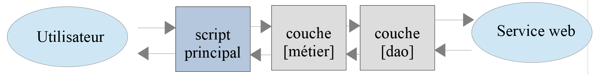
El script principal se configura mediante el siguiente archivo [config.json]:
{
"taxPayersDataFileName": "Data/taxpayersdata.json",
"resultsFileName": "Data/results.json",
"errorsFileName": "Data/errors.json",
"rootDirectory": "C:/Data/st-2019/dev/php7/poly/scripts-console/impots/version-12",
"dependencies": [
"/Entities/BaseEntity.php",
"/Entities/TaxPayerData.php",
"/Entities/Simulation.php",
"/Entities/ExceptionImpots.php",
"/Utilities/Utilitaires.php",
"/Model/InterfaceClientDao.php",
"/Model/TraitDao.php",
"/Model/ClientDao.php",
"/Model/InterfaceClientMetier.php",
"/Model/ClientMetier.php"
],
"absoluteDependencies": [
"C:/myprograms/laragon-lite/www/vendor/autoload.php"
],
"user": {
"login": "admin",
"passwd": "admin"
},
"urlServer": "https://localhost:443/php7/scripts-web/impots/version-12/main.php"
}
El script principal [main.php] es el siguiente:
<?php
// cumplimiento estricto de los tipos declarados de los parámetros de las funciones
declare(strict_types = 1);
// espacio de nombres
namespace Application;
// gestión de errores mediante PHP
// ini_set("display_errors", "0");
//
// ruta del archivo de configuración
define("CONFIG_FILENAME", "../Data/config.json");
// se recupera la configuración
$config = \json_decode(file_get_contents(CONFIG_FILENAME), true);
// se incluyen las dependencias necesarias para el script
$rootDirectory = $config["rootDirectory"];
foreach ($config["dependencies"] as $dependency) {
require "$rootDirectory/$dependency";
}
// dependencias absolutas (bibliotecas de terceros)
foreach ($config["absoluteDependencies"] as $dependency) {
require "$dependency";
}
// definición de constantes
define("TAXPAYERSDATA_FILENAME", "$rootDirectory/{$config["taxPayersDataFileName"]}");
define("RESULTS_FILENAME", "$rootDirectory/{$config["resultsFileName"]}");
define("ERRORS_FILENAME", "$rootDirectory/{$config["errorsFileName"]}");
//
// dependencias de Symfony
use Symfony\Component\HttpClient\HttpClient;
// creación de la capa [dao]
$clientDao = new ClientDao($config["urlServer"]);
// creación de la capa [métier]
$clientMetier = new ClientMetier($clientDao);
// cálculo de impuestos en modo batch
try {
// inicialización de la sesión
$clientMetier->initSession('json');
// autenticación
$clientMetier->authentifierUtilisateur($config["user"]["login"], $config["user"]["passwd"]);
// cálculo de impuestos sin guardar los resultados
$clientMetier->executeBatchImpots(TAXPAYERSDATA_FILENAME, NULL, ERRORS_FILENAME);
// lista de simulaciones
$clientMetier->listerSimulations();
// eliminación de una simulación
$simulations = $clientMetier->supprimerSimulation(1);
// guardado de resultados
$clientMetier->saveResults(RESULTS_FILENAME, $simulations);
// fin de sesión
$clientMetier->finSession();
// acción sin estar autenticado: debe bloquearse
$clientMetier->listerSimulations();
} catch (ExceptionImpots $ex) {
// se muestra el error
print "Une erreur s'est produite : " . $ex->getMessage() . "\n";
}
// fin
print "Terminé\n";
exit();
Comentarios
- líneas 12-16: uso del archivo de configuración [config.json];
- líneas 18-26: carga de todas las dependencias;
- líneas 28-34: definición de constantes y alias;
- líneas 36-39: construcción de las capas [dao] y [métier];
- línea 44: inicialización de una sesión jSON;
- línea 46: autenticación en el servidor;
- línea 48: cálculo del impuesto de una serie de contribuyentes. No se guardan los resultados (2.º parámetro NULL);
- línea 50: se solicitan los resultados de todos estos cálculos;
- línea 52: se elimina la simulación n.º 1 (la segunda de la lista);
- línea 54: se guardan las simulaciones restantes;
- línea 56: se cierra la sesión. Esto significa que se elimina la cookie de sesión;
- línea 58: se solicita la lista de simulaciones. Como la cookie de sesión se ha eliminado, hay que volver a realizar la autenticación. Por lo tanto, debe aparecer una excepción indicando que no se ha autenticado;
El archivo [taxpayersdata.json] es el siguiente:
[
{
"marié": "oui",
"enfants": 2,
"salaire": 55555
},
{
"marié": "ouix",
"enfants": "2x",
"salaire": "55555x"
},
{
"marié": "oui",
"enfants": "2",
"salaire": 50000
},
{
"marié": "oui",
"enfants": 3,
"salaire": 50000
},
{
"marié": "non",
"enfants": 2,
"salaire": 100000
},
{
"marié": "non",
"enfants": 3,
"salaire": 100000
},
{
"marié": "oui",
"enfants": 3,
"salaire": 100000
},
{
"marié": "oui",
"enfants": 5,
"salaire": 100000
},
{
"marié": "non",
"enfants": 0,
"salaire": 100000
},
{
"marié": "oui",
"enfants": 2,
"salaire": 30000
},
{
"marié": "non",
"enfants": 0,
"salaire": 200000
},
{
"marié": "oui",
"enfants": 3,
"salaire": 20000
}
]
Hay 12 contribuyentes, de los cuales 1 es incorrecto. Por lo tanto, hay 11 simulaciones en total. Una de ellas se eliminará. Deben quedar 10.
Tras ejecutar el script principal, el archivo jSON [results.json] es el siguiente:
[
{
"marié": "oui",
"enfants": "2",
"salaire": "55555",
"impôt": 2814,
"surcôte": 0,
"décôte": 0,
"réduction": 0,
"taux": 0.14
},
{
"marié": "oui",
"enfants": "3",
"salaire": "50000",
"impôt": 0,
"surcôte": 0,
"décôte": 720,
"réduction": 0,
"taux": 0.14
},
{
"marié": "non",
"enfants": "2",
"salaire": "100000",
"impôt": 19884,
"surcôte": 4480,
"décôte": 0,
"réduction": 0,
"taux": 0.41
},
{
"marié": "non",
"enfants": "3",
"salaire": "100000",
"impôt": 16782,
"surcôte": 7176,
"décôte": 0,
"réduction": 0,
"taux": 0.41
},
{
"marié": "oui",
"enfants": "3",
"salaire": "100000",
"impôt": 9200,
"surcôte": 2180,
"décôte": 0,
"réduction": 0,
"taux": 0.3
},
{
"marié": "oui",
"enfants": "5",
"salaire": "100000",
"impôt": 4230,
"surcôte": 0,
"décôte": 0,
"réduction": 0,
"taux": 0.14
},
{
"marié": "non",
"enfants": "0",
"salaire": "100000",
"impôt": 22986,
"surcôte": 0,
"décôte": 0,
"réduction": 0,
"taux": 0.41
},
{
"marié": "oui",
"enfants": "2",
"salaire": "30000",
"impôt": 0,
"surcôte": 0,
"décôte": 0,
"réduction": 0,
"taux": 0
},
{
"marié": "non",
"enfants": "0",
"salaire": "200000",
"impôt": 64210,
"surcôte": 7498,
"décôte": 0,
"réduction": 0,
"taux": 0.45
},
{
"marié": "oui",
"enfants": "3",
"salaire": "20000",
"impôt": 0,
"surcôte": 0,
"décôte": 0,
"réduction": 0,
"taux": 0
}
]
Hay efectivamente 10 simulaciones.
El archivo jSON [errors.json] tiene el siguiente contenido:
{
"numéro": 1,
"erreurs": [
{
"marié": "ouix"
},
{
"enfants": "2x"
},
{
"salaire": "55555x"
}
]
}
Los resultados de la consola son los siguientes (en modo detallado, las respuestas jSON del servidor se muestran en la consola):
{"action":"init-session","état":700,"réponse":"session démarrée avec type [json]"}
{"action":"authentifier-utilisateur","état":200,"réponse":"Authentification réussie [admin, admin]"}
{"action":"calculer-impot","état":300,"réponse":{"marié":"oui","enfants":"2","salaire":"55555","impôt":2814,"surcôte":0,"décôte":0,"réduction":0,"taux":0.14}}
{"action":"calculer-impot","état":300,"réponse":{"marié":"oui","enfants":"2","salaire":"50000","impôt":1384,"surcôte":0,"décôte":384,"réduction":347,"taux":0.14}}
{"action":"calculer-impot","état":300,"réponse":{"marié":"oui","enfants":"3","salaire":"50000","impôt":0,"surcôte":0,"décôte":720,"réduction":0,"taux":0.14}}
{"action":"calculer-impot","état":300,"réponse":{"marié":"non","enfants":"2","salaire":"100000","impôt":19884,"surcôte":4480,"décôte":0,"réduction":0,"taux":0.41}}
{"action":"calculer-impot","état":300,"réponse":{"marié":"non","enfants":"3","salaire":"100000","impôt":16782,"surcôte":7176,"décôte":0,"réduction":0,"taux":0.41}}
{"action":"calculer-impot","état":300,"réponse":{"marié":"oui","enfants":"3","salaire":"100000","impôt":9200,"surcôte":2180,"décôte":0,"réduction":0,"taux":0.3}}
{"action":"calculer-impot","état":300,"réponse":{"marié":"oui","enfants":"5","salaire":"100000","impôt":4230,"surcôte":0,"décôte":0,"réduction":0,"taux":0.14}}
{"action":"calculer-impot","état":300,"réponse":{"marié":"non","enfants":"0","salaire":"100000","impôt":22986,"surcôte":0,"décôte":0,"réduction":0,"taux":0.41}}
{"action":"calculer-impot","état":300,"réponse":{"marié":"oui","enfants":"2","salaire":"30000","impôt":0,"surcôte":0,"décôte":0,"réduction":0,"taux":0}}
{"action":"calculer-impot","état":300,"réponse":{"marié":"non","enfants":"0","salaire":"200000","impôt":64210,"surcôte":7498,"décôte":0,"réduction":0,"taux":0.45}}
{"action":"calculer-impot","état":300,"réponse":{"marié":"oui","enfants":"3","salaire":"20000","impôt":0,"surcôte":0,"décôte":0,"réduction":0,"taux":0}}
{"action":"lister-simulations","état":500,"réponse":[{"marié":"oui","enfants":"2","salaire":"55555","impôt":2814,"surcôte":0,"décôte":0,"réduction":0,"taux":0.14,"arrayOfAttributes":null},{"marié":"oui","enfants":"2","salaire":"50000","impôt":1384,"surcôte":0,"décôte":384,"réduction":347,"taux":0.14,"arrayOfAttributes":null},{"marié":"oui","enfants":"3","salaire":"50000","impôt":0,"surcôte":0,"décôte":720,"réduction":0,"taux":0.14,"arrayOfAttributes":null},{"marié":"non","enfants":"2","salaire":"100000","impôt":19884,"surcôte":4480,"décôte":0,"réduction":0,"taux":0.41,"arrayOfAttributes":null},{"marié":"non","enfants":"3","salaire":"100000","impôt":16782,"surcôte":7176,"décôte":0,"réduction":0,"taux":0.41,"arrayOfAttributes":null},{"marié":"oui","enfants":"3","salaire":"100000","impôt":9200,"surcôte":2180,"décôte":0,"réduction":0,"taux":0.3,"arrayOfAttributes":null},{"marié":"oui","enfants":"5","salaire":"100000","impôt":4230,"surcôte":0,"décôte":0,"réduction":0,"taux":0.14,"arrayOfAttributes":null},{"marié":"non","enfants":"0","salaire":"100000","impôt":22986,"surcôte":0,"décôte":0,"réduction":0,"taux":0.41,"arrayOfAttributes":null},{"marié":"oui","enfants":"2","salaire":"30000","impôt":0,"surcôte":0,"décôte":0,"réduction":0,"taux":0,"arrayOfAttributes":null},{"marié":"non","enfants":"0","salaire":"200000","impôt":64210,"surcôte":7498,"décôte":0,"réduction":0,"taux":0.45,"arrayOfAttributes":null},{"marié":"oui","enfants":"3","salaire":"20000","impôt":0,"surcôte":0,"décôte":0,"réduction":0,"taux":0,"arrayOfAttributes":null}]}
{"action":"supprimer-simulation","état":600,"réponse":[{"marié":"oui","enfants":"2","salaire":"55555","impôt":2814,"surcôte":0,"décôte":0,"réduction":0,"taux":0.14,"arrayOfAttributes":null},{"marié":"oui","enfants":"3","salaire":"50000","impôt":0,"surcôte":0,"décôte":720,"réduction":0,"taux":0.14,"arrayOfAttributes":null},{"marié":"non","enfants":"2","salaire":"100000","impôt":19884,"surcôte":4480,"décôte":0,"réduction":0,"taux":0.41,"arrayOfAttributes":null},{"marié":"non","enfants":"3","salaire":"100000","impôt":16782,"surcôte":7176,"décôte":0,"réduction":0,"taux":0.41,"arrayOfAttributes":null},{"marié":"oui","enfants":"3","salaire":"100000","impôt":9200,"surcôte":2180,"décôte":0,"réduction":0,"taux":0.3,"arrayOfAttributes":null},{"marié":"oui","enfants":"5","salaire":"100000","impôt":4230,"surcôte":0,"décôte":0,"réduction":0,"taux":0.14,"arrayOfAttributes":null},{"marié":"non","enfants":"0","salaire":"100000","impôt":22986,"surcôte":0,"décôte":0,"réduction":0,"taux":0.41,"arrayOfAttributes":null},{"marié":"oui","enfants":"2","salaire":"30000","impôt":0,"surcôte":0,"décôte":0,"réduction":0,"taux":0,"arrayOfAttributes":null},{"marié":"non","enfants":"0","salaire":"200000","impôt":64210,"surcôte":7498,"décôte":0,"réduction":0,"taux":0.45,"arrayOfAttributes":null},{"marié":"oui","enfants":"3","salaire":"20000","impôt":0,"surcôte":0,"décôte":0,"réduction":0,"taux":0,"arrayOfAttributes":null}]}
{"action":"fin-session","état":400,"réponse":"session supprimée"}
{"action":"lister-simulations","état":103,"réponse":["pas de session en cours. Commencer par action [init-session]"]}
Une erreur s'est produite : {"action":"lister-simulations","état":103,"réponse":["pas de session en cours. Commencer par action [init-session]"]}
Terminé
23.14.5. Pruebas [Codeception]
Al igual que en los casos anteriores clients, el cliente de version 12 puede someterse a pruebas [Codeception]:

El código de la clase de prueba de la capa [métier] del cliente es análogo al de las clases de prueba de los anteriores clients:
<?php
// cumplimiento estricto de los tipos declarados de los parámetros de las funciones
declare (strict_types=1);
// espacio de nombres
namespace Application;
// definición de constantes
define("ROOT", "C:/Data/st-2019/dev/php7/poly/scripts-console/impots/version-12");
// ruta del archivo de configuración
define("CONFIG_FILENAME", ROOT . "/Data/config.json");
// se recupera la configuración
$config = \json_decode(\file_get_contents(CONFIG_FILENAME), true);
// se incluyen las dependencias necesarias para el script
$rootDirectory = $config["rootDirectory"];
foreach ($config["dependencies"] as $dependency) {
require "$rootDirectory$dependency";
}
// dependencias absolutas (bibliotecas de terceros)
foreach ($config["absoluteDependencies"] as $dependency) {
require "$dependency";
}
// dependencias de Symfony
use Symfony\Component\HttpClient\HttpClient;
// clase de prueba
class ClientDaoTest extends \Codeception\Test\Unit {
// capa dao
private $clientDao;
public function __construct() {
parent::__construct();
// se recupera la configuración
$config = \json_decode(\file_get_contents(CONFIG_FILENAME), true);
// creación de la capa [dao]
$clientDao = new ClientDao($config["urlServer"]);
// creación de la capa [métier]
$this->métier = new ClientMetier($clientDao);
// inicialización de sesión
$this->métier->initSession("json");
// autenticación
$this->métier->authentifierUtilisateur("admin", "admin");
}
// pruebas
public function test1() {
$simulation = $this->métier->calculerImpot("oui", 2, 55555);
$this->assertEqualsWithDelta(2815, $simulation->getImpôt(), 1);
$this->assertEqualsWithDelta(0, $simulation->getSurcôte(), 1);
$this->assertEqualsWithDelta(0, $simulation->getDécôte(), 1);
$this->assertEqualsWithDelta(0, $simulation->getRéduction(), 1);
$this->assertEquals(0.14, $simulation->getTaux());
}
public function test2() {
….
}
…
public function test11() {
…
}
}
Comentarios
- líneas 34-46: se recuerda que el constructor de la clase de prueba se ejecuta antes de cada prueba;
- líneas 38-41: construcción de las capas [dao] y [métier];
- líneas 42-45: los métodos de prueba [test1…, test11] prueban el método [calculerImpot]. Para que esto sea posible, es necesario inicializar previamente una sesión jSON y autenticarse;
Los resultados de la prueba son los siguientes:

Se deberían realizar muchas otras pruebas:
- probar los diferentes métodos de la capa [dao];
- probar los estados devueltos por el servidor web. Estos estados son importantes, ya que su valor determina la página HTML que se va a mostrar;